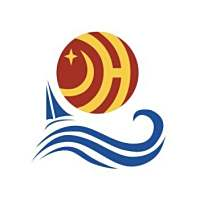

<!DOCTYPE html>
<html lang="zh-CN">
<head>
<meta charset="UTF-8">
<meta name="viewport" content="width=device-width, initial-scale=1.0">
<title>金恒科技 · 词库管理系统</title>
<style>
:root{--primary:#e8730c;--primary-light:#f59e0b;--primary-dark:#c45e00;--accent:#e8730c;--bg:#0a0a0a;--bg2:#141414;--bg3:#1c1c1c;--card:#1c1c1c;--card-hover:#252525;--border:#2a2a2a;--border-light:#333;--text:#f0f0f0;--text2:#a0a0a0;--text3:#666}
/* 浅色主题 */
[data-theme="light"]{--bg:#f5f5f5;--bg2:#ffffff;--bg3:#f0f0f0;--card:#ffffff;--card-hover:#fafafa;--border:#e0e0e0;--border-light:#d0d0d0;--text:#1a1a1a;--text2:#555;--text3:#999}
*{margin:0;padding:0;box-sizing:border-box}
body{font-family:-apple-system,'PingFang SC','Microsoft YaHei','Helvetica Neue',sans-serif;background:var(--bg);color:var(--text);line-height:1.6}
/* 顶部导航 */
.header{background:var(--bg2);border-bottom:1px solid var(--border);position:sticky;top:0;z-index:100}
.header-inner{max-width:1280px;margin:0 auto;padding:14px 24px;display:flex;align-items:center;justify-content:space-between;flex-wrap:wrap;gap:10px}
.brand{display:flex;align-items:center;gap:12px}
.brand-logo{width:auto;height:48px;display:flex;align-items:center;justify-content:center}
.brand-logo svg{height:44px;width:auto}
.brand-text{color:var(--text)}
.brand-text h1{font-size:18px;font-weight:700;letter-spacing:.5px;display:flex;align-items:center;gap:6px}
.brand-text h1 em{font-style:normal;color:var(--primary)}
.brand-text p{font-size:11px;color:var(--text3);margin-top:1px}
.header-nav{display:flex;align-items:center;gap:4px;flex-wrap:wrap}
.nav-item{padding:6px 12px;font-size:13px;color:var(--text2);cursor:pointer;border-radius:6px;transition:all .2s;display:flex;align-items:center;gap:5px;user-select:none;white-space:nowrap;flex-shrink:0}
.nav-item:hover{color:var(--text);background:var(--bg3)}
.nav-item.on{color:var(--primary);font-weight:600}
.header-right{display:flex;align-items:center;gap:8px;flex-wrap:wrap}
/* 搜索栏 */
.search-section{background:var(--bg2);border-bottom:1px solid var(--border);padding:12px 24px}
.search-section-inner{max-width:1280px;margin:0 auto;display:flex;align-items:center;gap:12px}
.search-bar{display:flex;align-items:center;gap:0;flex:1;max-width:600px}
.search-type{padding:10px 14px;border:1px solid var(--border);border-right:none;border-radius:8px 0 0 8px;background:var(--bg3);font-size:13px;color:var(--text2);outline:none;cursor:pointer;height:40px;appearance:auto}
.search-type option{background:var(--bg3);color:var(--text)}
.search-input{flex:1;padding:10px 16px;border:1px solid var(--border);border-left:none;border-right:none;font-size:13px;outline:none;height:40px;background:var(--bg3);color:var(--text)}
.search-input::placeholder{color:var(--text3)}
.search-btn{padding:10px 24px;background:var(--primary);color:#fff;border:none;border-radius:0 8px 8px 0;font-size:13px;cursor:pointer;height:40px;font-weight:600;transition:all .2s}
.search-btn:hover{background:var(--primary-dark);box-shadow:0 0 16px rgba(232,115,12,.3)}
.hot-tags{display:flex;align-items:center;gap:8px;margin-left:16px;font-size:12px;color:var(--text3)}
.hot-tag{padding:4px 12px;border:1px solid var(--border);border-radius:14px;color:var(--text2);cursor:pointer;transition:all .2s;font-size:12px}
.hot-tag:hover{border-color:var(--primary);color:var(--primary);background:rgba(232,115,12,.08)}
.hot-tag.on{border-color:var(--primary);color:#fff;background:var(--primary)}
</style>
</head>
<body>

<!-- 登录遮罩层 -->
<div id="loginOverlay" style="display:none;position:fixed;top:0;left:0;width:100%;height:100%;background:var(--bg);z-index:9999;align-items:center;justify-content:center">
  <div style="background:var(--card);padding:40px;border-radius:16px;box-shadow:0 8px 32px rgba(0,0,0,.3);width:380px;border:1px solid var(--border)">
    <h2 style="text-align:center;margin-bottom:24px;color:var(--primary);font-size:20px">🔐 词库管理系统</h2>
    <div style="margin-bottom:16px">
      <label style="display:block;margin-bottom:4px;color:var(--text2);font-size:12px;font-weight:600">用户名</label>
      <input id="loginUsername" type="text" value="admin" style="width:100%;padding:10px 12px;border:1px solid var(--border);border-radius:8px;box-sizing:border-box;background:var(--bg3);color:var(--text);font-size:13px;outline:none" onfocus="this.style.borderColor='var(--primary)'" onblur="this.style.borderColor='var(--border)'">
    </div>
    <div style="margin-bottom:24px">
      <label style="display:block;margin-bottom:4px;color:var(--text2);font-size:12px;font-weight:600">密码</label>
      <input id="loginPassword" type="password" style="width:100%;padding:10px 12px;border:1px solid var(--border);border-radius:8px;box-sizing:border-box;background:var(--bg3);color:var(--text);font-size:13px;outline:none" onfocus="this.style.borderColor='var(--primary)'" onblur="this.style.borderColor='var(--border)'" onkeydown="if(event.key==='Enter')doLogin()">
    </div>
    <div id="loginError" style="color:#ef4444;margin-bottom:12px;display:none;font-size:13px;text-align:center"></div>
    <button onclick="doLogin()" style="width:100%;padding:10px;background:var(--primary);color:white;border:none;border-radius:8px;cursor:pointer;font-size:14px;font-weight:600;transition:all .2s" onmouseover="this.style.background='var(--primary-dark)'" onmouseout="this.style.background='var(--primary)'">登 录</button>
  </div>
</div>

<!-- 顶部导航 -->
<div class="header">
  <div class="header-inner" style="flex-wrap:nowrap">
    <div class="brand">
      <div class="brand-logo">
        
      </div>
      <div class="brand-text">
        <h1><span style="color:#1a56a0;font-weight:800">金恒科技</span> · <em>词库</em>管理系统</h1>
        <p>数据标准化平台</p>
      </div>
    </div>
    <div class="header-right">
      <span id="userInfo" style="display:none;align-items:center;gap:4px;padding:6px 12px;border-radius:20px;border:1px solid var(--border);font-size:12px;color:var(--text2);background:var(--bg3)">
        👤 <span id="currentUser">admin</span>
      </span>
      <span id="logoutBtn" style="display:none;cursor:pointer;padding:6px 12px;border-radius:20px;border:1px solid var(--border);font-size:12px;color:var(--text2);background:var(--bg3);transition:all .2s" onclick="doLogout()" onmouseover="this.style.borderColor='#ef4444';this.style.color='#ef4444'" onmouseout="this.style.borderColor='var(--border)';this.style.color='var(--text2)'">
        🚪 登出
      </span>
      <span id="themeBtn" style="display:flex;align-items:center;gap:4px;cursor:pointer;padding:6px 12px;border-radius:20px;border:1px solid var(--border);font-size:12px;user-select:none;color:var(--text2);background:var(--bg3);transition:all .2s" onclick="toggleTheme()" title="切换主题">
        <span id="themeIcon">🌙</span> <span id="themeLabel">深色</span>
      </span>
      <span id="statText" style="color:var(--text3);font-size:12px">共 0 个词条</span>
      <span id="adminUserMgr" style="display:none;cursor:pointer;padding:6px 14px;border-radius:20px;border:1px solid var(--border);font-size:12px;color:var(--text2);background:var(--bg3);transition:all .2s" onclick="showUserManager()" onmouseover="this.style.borderColor='var(--primary)';this.style.color='var(--primary)'" onmouseout="this.style.borderColor='var(--border)';this.style.color='var(--text2)'">
        👥 用户管理
      </span>
      <span id="pendingBadge" style="display:none;cursor:pointer;padding:5px 14px;border-radius:20px;background:#ef4444;color:#fff;font-size:12px;font-weight:600;animation:badgePulse 1.5s infinite" onclick="switchTab('audit')">
        🔔 <span id="pendingCount">0</span> 条待审核
      </span>
    </div>
  </div>
  <div style="max-width:1280px;margin:0 auto;padding:0 24px 10px;display:flex;align-items:center;gap:4px;overflow-x:auto;-webkit-overflow-scrolling:touch;scrollbar-width:thin;white-space:nowrap">
    <div class="nav-item on" data-t="roots" onclick="switchTab('roots')">🔤 词根库</div>
    <div class="nav-item" data-t="list" onclick="switchTab('list')">📚 词条共创</div>
    <div class="nav-item" data-t="add" onclick="switchTab('add')">✏️ 新增词条</div>
    <div class="nav-item" data-t="audit" onclick="switchTab('audit')">⚙️ 审核中心</div>
    <div class="nav-item" onclick="showImportModal()">📥 导入词条</div>
    <div class="nav-item admin-only-root" onclick="showRootImportModal()">📥 导入词根</div>
    <div class="nav-item" data-t="recycle" onclick="switchTab('recycle')">🗑️ 回收站</div>
    <div class="nav-item" data-t="extract" onclick="switchTab('extract')">🔬 词根剥离</div>
    <div class="nav-item" data-t="report" onclick="switchTab('report')">📊 统计报表</div>
    <div class="nav-item" data-t="asset" onclick="showAssetModal()">📋 数据资产规范管控</div>
  </div>
</div>

<!-- 搜索栏 -->
<div class="search-section">
  <div class="search-section-inner">
    <div class="search-bar">
      <select class="search-type" id="searchType" onchange="doSearch()">
        <option value="">全部类型</option>
        <option value="时间类">时间类</option>
        <option value="通用类">通用类</option>
        <option value="钢铁类">钢铁类</option>
        <option value="财务类">财务类</option>
        <option value="人员类">人员类</option>
        <option value="设备类">设备类</option>
      </select>
      <input class="search-input" id="searchInput" placeholder="🔍 输入词条名称、英文名、词根或含义..." value="">
      <button class="search-btn" onclick="doSearch()">搜索</button>
    </div>
    <div class="hot-tags">
      <span style="color:var(--text3)">🔥 热门：</span>
      <span class="hot-tag" data-cat="" onclick="filterByCat('')">全部</span>
      <span class="hot-tag" data-cat="钢铁类" onclick="filterByCat('钢铁类')">钢铁类</span>
      <span class="hot-tag" data-cat="通用类" onclick="filterByCat('通用类')">通用类</span>
      <span class="hot-tag" data-cat="时间类" onclick="filterByCat('时间类')">时间类</span>
      <span class="hot-tag" data-cat="设备类" onclick="filterByCat('设备类')">设备类</span>
      <span class="hot-tag" data-cat="人员类" onclick="filterByCat('人员类')">人员类</span>
      <span class="hot-tag" data-cat="财务类" onclick="filterByCat('财务类')">财务类</span>
    </div>
  </div>
</div>

<div id="statInfo" style="display:none"></div>

<!-- 主内容区 -->
<div id="app" style="max-width:1280px;margin:0 auto;padding:24px 24px;display:flex;gap:24px;min-height:calc(100vh - 130px)">
  <!-- 左侧目录树 -->
  <div class="sidebar">
    <div class="sidebar-title">📂 功能导航</div>
    <div class="tree-group">
      <div class="tree-label">词根管理</div>
      <div class="tree-item on" data-t="roots" onclick="switchTab('roots')"><span class="tree-dot"></span> 词根库</div>
    </div>
    <div class="tree-group">
      <div class="tree-label">词条管理</div>
      <div class="tree-item" data-t="list" onclick="switchTab('list')"><span class="tree-dot"></span> 词条共创</div>
      <div class="tree-item" data-t="add" onclick="switchTab('add')"><span class="tree-dot"></span> 新增词条</div>
    </div>
    <div class="tree-group">
      <div class="tree-label">审核管理</div>
      <div class="tree-item" data-t="audit" onclick="switchTab('audit')"><span class="tree-dot"></span> 审核中心 <span id="sidebarPending" style="display:none;font-size:10px;color:#fff;background:#ef4444;padding:1px 6px;border-radius:8px;margin-left:4px"></span></div>
    </div>
    <div class="tree-group">
      <div class="tree-label">数据工具</div>
      <div class="tree-item" onclick="showImportModal()" style="cursor:pointer"><span class="tree-dot"></span> 📥 导入词条</div>
      <div class="tree-item admin-only-root" onclick="showRootImportModal()" style="cursor:pointer"><span class="tree-dot"></span> 📥 导入词根</div>
      <div class="tree-item" onclick="exportAllRoots()" style="cursor:pointer"><span class="tree-dot"></span> 📤 导出词根</div>
      <div class="tree-item" onclick="exportAll()" style="cursor:pointer"><span class="tree-dot"></span> 📤 导出全部</div>
      <div class="tree-item" onclick="switchTab('list');setTimeout(function(){toggleExportMode(true)},100)" style="cursor:pointer"><span class="tree-dot"></span> ☑️ 选择导出词条</div>
      <div class="tree-item" onclick="switchTab('roots');setTimeout(function(){toggleRootExportMode(true)},100)" style="cursor:pointer"><span class="tree-dot"></span> ☑️ 选择导出词根</div>
      <div class="tree-item" data-t="extract" onclick="switchTab('extract')" style="cursor:pointer"><span class="tree-dot"></span> 🔬 词根剥离</div>
      <div class="tree-item" data-t="recycle" onclick="switchTab('recycle')" style="cursor:pointer"><span class="tree-dot"></span> 🗑️ 回收站</div>
      <div class="tree-item" data-t="report" onclick="switchTab('report')" style="cursor:pointer"><span class="tree-dot"></span> 📊 统计报表</div>
      <div class="tree-item" onclick="showSynonymManager()" style="cursor:pointer"><span class="tree-dot"></span> 🔗 同义词管理</div>
      <div class="tree-item" onclick="showAssetModal()" style="cursor:pointer"><span class="tree-dot"></span> 📋 数据资产规范管控</div>
    </div>
    <div class="tree-group">
      <div class="tree-label">快捷筛选</div>
      <div class="tree-filter" onclick="filterByCat('')">全部类型</div>
      <div class="tree-filter" onclick="filterByCat('钢铁类')">🏭 钢铁类</div>
      <div class="tree-filter" onclick="filterByCat('通用类')">📋 通用类</div>
      <div class="tree-filter" onclick="filterByCat('时间类')">⏰ 时间类</div>
      <div class="tree-filter" onclick="filterByCat('设备类')">🔧 设备类</div>
      <div class="tree-filter" onclick="filterByCat('人员类')">👥 人员类</div>
      <div class="tree-filter" onclick="filterByCat('财务类')">💰 财务类</div>
    </div>
    <div style="margin-top:auto;padding-top:16px;border-top:1px solid var(--border);font-size:11px;color:var(--text3);text-align:center">词库 v2.0</div>
  </div>
  <!-- 右侧内容 -->
  <div style="flex:1;min-width:0">
  <div id="tabs" style="display:none">
    <div class="tab on" data-t="roots"></div>
    <div class="tab" data-t="list"></div>
    <div class="tab" data-t="add"></div>
    <div class="tab" data-t="audit"></div>
  </div>

  <!-- 词根库 -->
  <div id="pg-roots">
    <div style="display:flex;align-items:center;justify-content:space-between;margin-bottom:16px">
      <div>
        <div style="font-size:18px;font-weight:700;color:var(--text)">词根库</div>
        <div id="rootsStat" style="font-size:12px;color:var(--text3);margin-top:4px">共收录 0 个词根</div>
      </div>
      <div style="display:flex;align-items:center;gap:10px">
        <input id="rootSearch" placeholder="搜索词根、含义..." style="padding:8px 14px;border:1px solid var(--border);border-radius:8px;background:var(--bg3);color:var(--text);font-size:13px;outline:none;width:200px" oninput="renderRoots()">
        <span style="cursor:pointer;font-size:16px;color:var(--text3);margin-left:-30px;z-index:1;position:relative" onclick="document.getElementById('rootSearch').value='';renderRoots()" title="清除">✕</span>
        <label style="display:flex;align-items:center;gap:4px;font-size:12px;color:var(--text2);white-space:nowrap"><input type="checkbox" id="rootExactMatch" onchange="renderRoots()" style="accent-color:var(--primary)"> 精确</label>
        <select id="rootCatFilter" onchange="renderRoots()" style="padding:8px 12px;border:1px solid var(--border);border-radius:8px;background:var(--bg3);color:var(--text);font-size:13px;outline:none">
          <option value="">全部分类</option>
          <option value="时间">时间</option><option value="数量">数量</option><option value="标识">标识</option>
          <option value="状态">状态</option><option value="操作">操作</option><option value="属性">属性</option>
          <option value="位置">位置</option><option value="组织">组织</option><option value="设备">设备</option>
          <option value="物料">物料</option><option value="质量">质量</option><option value="财务">财务</option>
        </select>
        <button class="btn primary admin-only-root" style="padding:7px 18px;font-size:13px" onclick="showRootImportModal()">📥 导入词根</button>
        <button class="btn" style="padding:7px 18px;font-size:13px;background:var(--bg3);color:var(--text2);border:1px solid var(--border)" onclick="exportAllRoots()">📤 导出词根</button>
        <span id="rootExportEntry"><button class="btn" style="padding:7px 18px;font-size:13px;background:var(--bg3);color:var(--text2);border:1px solid var(--border)" onclick="toggleRootExportMode(true)">☑️ 选择导出</button></span>
        <span id="rootExportBar" style="display:none;align-items:center;gap:8px">
          <label style="display:flex;align-items:center;gap:4px;cursor:pointer;font-size:12px;color:var(--text2)"><input type="checkbox" id="rootSelectAll" onchange="toggleRootSelectAll(this.checked)" style="accent-color:var(--primary);cursor:pointer"> 全选</label>
          <span id="rootSelectedCount" style="font-size:12px;color:var(--text3)">已选 0 条</span>
          <button class="btn primary" style="padding:5px 14px;font-size:12px;border-radius:6px" onclick="exportSelectedRoots()">📤 导出选中</button>
          <button class="btn ghost" style="padding:5px 14px;font-size:12px;border-radius:6px" onclick="toggleRootExportMode(false)">✕ 退出</button>
        </span>
        <button class="btn primary admin-only-root" style="padding:7px 18px;font-size:13px" onclick="showRootEditor()" id="addRootBtn" title="仅管理员可用">+ 新增词根</button>
      </div>
    </div>
    <div id="rootGrid" style="display:grid;grid-template-columns:repeat(auto-fill,minmax(240px,1fr));gap:14px"></div>
    <div id="rootEmpty" style="display:none;text-align:center;padding:60px;color:var(--text3)">暂无匹配的词根</div>
  </div>

  <!-- 词条共创 -->
  <div id="pg-list" style="display:none">
    <div style="font-size:13px;color:var(--text3);margin-bottom:16px;display:flex;align-items:center;justify-content:space-between">
      <div style="display:flex;align-items:center;gap:8px">
        <span style="color:var(--primary);font-size:16px">✨</span> 共建企业数据标准，让每一个词条都有据可依
      </div>
      <div id="exportBar" style="display:none;align-items:center;gap:10px">
        <label style="display:flex;align-items:center;gap:4px;cursor:pointer;font-size:12px;color:var(--text2)">
          <input type="checkbox" id="selectAll" onchange="toggleSelectAll(this.checked)" style="accent-color:var(--primary);cursor:pointer"> 全选
        </label>
        <span id="selectedCount" style="font-size:12px;color:var(--text3)">已选 0 条</span>
        <button class="btn primary" style="padding:5px 16px;font-size:12px;border-radius:6px" onclick="exportSelected()">📤 导出选中</button>
        <button class="btn ghost" style="padding:5px 16px;font-size:12px;border-radius:6px" onclick="toggleExportMode(false)">✕ 退出</button>
      </div>
      <div id="exportEntry" style="display:flex;align-items:center;gap:10px">
        <button class="btn ghost" style="padding:5px 16px;font-size:12px;border-radius:6px" onclick="toggleExportMode(true)">📤 导出词条</button>
      </div>
    </div>
    <div id="cardGrid" style="display:grid;grid-template-columns:repeat(auto-fill,minmax(300px,1fr));gap:16px"></div>
    <div id="emptyTip" style="display:none;text-align:center;padding:80px;color:var(--text3);font-size:15px">暂无匹配的词条</div>
  </div>

  <!-- 新增词条 -->
  <div id="pg-add" style="display:none">
    <div class="form-card">
      <h3 style="font-size:17px;margin-bottom:22px;color:var(--text);display:flex;align-items:center;gap:8px"><span style="color:var(--primary)">✏️</span> 新增词条</h3>
      <div class="frow">
        <div class="fg"><label>中文名称 *</label><input id="f_cn" placeholder="例如：入库时间" oninput="debounceSimilarCheck()"></div>
        <div class="fg"><label>英文名称 *</label><input id="f_en" placeholder="例如：in_warehouse_time" oninput="debounceSimilarCheck()"></div>
      </div>
      <div class="frow">
        <div class="fg"><label>分类名称 *</label>
          <select id="f_cat">
            <option value="通用类">通用类</option>
            <option value="时间类">时间类</option>
            <option value="钢铁类">钢铁类</option>
            <option value="财务类">财务类</option>
            <option value="人员类">人员类</option>
            <option value="设备类">设备类</option>
          </select>
        </div>
        <div class="fg"><label>备注</label><input id="f_abbr" placeholder="例如：含HH:mm:ss、℃、UOM"></div>
      </div>
      <div class="frow">
        <div class="fg"><label>中文描述</label><textarea id="f_cnDesc" rows="2" placeholder="中文含义描述"></textarea></div>
        <div class="fg"><label>英文描述</label><textarea id="f_enDesc" rows="2" placeholder="English description"></textarea></div>
      </div>
      <div class="frow">
        <div class="fg"><label>词根组合</label><input id="f_roots" placeholder='例如：["时间-时间"]'></div>
        <div class="fg"><label>参考表</label><input id="f_ref" placeholder="参考数据表名"></div>
      </div>
      <div class="frow">
        <div class="fg"><label>字段类型</label><input id="f_dataType" placeholder="例如：VARCHAR、INTEGER、DECIMAL"></div>
        <div class="fg"><label>字段长度</label><input id="f_dataLen" placeholder="例如：50、10,2"></div>
      </div>
      <div class="fg"><label>枚举值</label><textarea id="f_enumValues" rows="2" placeholder="例如：0=未处理, 1=处理中, 2=已完成"></textarea></div>
      <div id="compareResult" style="display:none;margin-top:16px"></div>
      <div id="similarityHint" style="display:none;margin-top:12px;padding:12px 16px;background:rgba(245,158,11,.1);border:1px solid rgba(245,158,11,.3);border-radius:8px;font-size:13px;color:#f59e0b"></div>
      <div style="display:flex;gap:10px;justify-content:flex-end;margin-top:22px">
        <button class="btn ghost" onclick="clearForm()">清空</button>
        <button class="btn warning" onclick="compareWord()">🔍 词条比对</button>
        <button class="btn success" onclick="saveWordDirect()">💾 保存词条</button>
        <button class="btn primary" onclick="submitWord()">提交审核</button>
      </div>
    </div>
  </div>

  <!-- 审核管理 -->
  <div id="pg-audit" style="display:none">
    <!-- 审核中心 Tab 切换 -->
    <div style="display:flex;gap:0;margin-bottom:16px;border-bottom:2px solid var(--border)">
      <div class="audit-tab on" data-at="root" onclick="switchAuditTab('root')" style="padding:10px 24px;font-size:14px;font-weight:600;color:var(--text2);cursor:pointer;border-bottom:2px solid transparent;margin-bottom:-2px;transition:all .2s;display:flex;align-items:center;gap:6px">🔤 词根审核 <span id="rootAuditCount" style="font-size:11px;color:#fff;background:#ef4444;padding:1px 7px;border-radius:8px;display:none"></span></div>
      <div class="audit-tab" data-at="word" onclick="switchAuditTab('word')" style="padding:10px 24px;font-size:14px;font-weight:600;color:var(--text2);cursor:pointer;border-bottom:2px solid transparent;margin-bottom:-2px;transition:all .2s;display:flex;align-items:center;gap:6px">📚 词条审核 <span id="wordAuditCount" style="font-size:11px;color:#fff;background:#ef4444;padding:1px 7px;border-radius:8px;display:none"></span></div>
    </div>
    <!-- 词条审核 -->
    <div id="auditWordPanel" style="display:none">
      <!-- 批量操作栏 -->
      <div id="batchBar" style="display:flex;align-items:center;gap:10px;margin-bottom:12px;padding:10px 16px;background:var(--bg3);border-radius:8px;border:1px solid var(--border)">
        <label style="display:flex;align-items:center;gap:4px;cursor:pointer;font-size:12px;color:var(--text2)"><input type="checkbox" id="batchSelectAll" onchange="toggleBatchSelectAll(this.checked)" style="accent-color:var(--primary);cursor:pointer"> 全选待审核</label>
        <span id="batchSelectedCount" style="font-size:12px;color:var(--text3)">已选 0 条</span>
        <button class="btn success" style="padding:5px 14px;font-size:12px" onclick="batchApprove('approved')">✅ 批量通过</button>
        <button class="btn danger" style="padding:5px 14px;font-size:12px" onclick="batchApprove('rejected')">❌ 批量驳回</button>
        <button class="btn" style="padding:5px 14px;font-size:12px;background:var(--primary);color:#fff;border:none" onclick="batchApproveAll()">🚀 一键全部发布</button>
        <span style="flex:1"></span>
        <button class="btn ghost" style="padding:5px 14px;font-size:12px" onclick="showImportLogs()">📋 导入日志</button>
      </div>
      <div style="display:grid;grid-template-columns:1fr 1fr;gap:16px">
        <div class="form-card">
          <h3 style="font-size:16px;margin-bottom:16px;color:var(--text);display:flex;align-items:center;gap:8px">📚 待审核词条 <span id="pendingCountLabel" style="font-size:12px;color:#fff;background:#ef4444;padding:2px 8px;border-radius:10px;font-weight:500">0</span></h3>
          <div id="auditPendingBody" style="display:flex;flex-direction:column;gap:10px;max-height:65vh;overflow-y:auto"></div>
          <div id="pendingEmpty" style="display:none;text-align:center;padding:40px;color:var(--text3);font-size:13px">暂无待审核词条 ✅</div>
        </div>
        <div class="form-card">
          <h3 style="font-size:16px;margin-bottom:16px;color:var(--text);display:flex;align-items:center;gap:8px">📋 已审核词条 <span id="auditedCountLabel" style="font-size:12px;color:#fff;background:var(--primary);padding:2px 8px;border-radius:10px;font-weight:500">0</span></h3>
          <div id="auditDoneBody" style="display:flex;flex-direction:column;gap:10px;max-height:65vh;overflow-y:auto"></div>
          <div id="auditedEmpty" style="display:none;text-align:center;padding:40px;color:var(--text3);font-size:13px">暂无已审核词条</div>
        </div>
      </div>
    </div>
    <!-- 词根审核 -->
    <div id="auditRootPanel">
      <div style="display:grid;grid-template-columns:1fr 1fr;gap:16px">
        <div class="form-card">
          <h3 style="font-size:16px;margin-bottom:16px;color:var(--text);display:flex;align-items:center;gap:8px">📝 待审核词根 <span id="rootPendingCountLabel" style="font-size:12px;color:#fff;background:#ef4444;padding:2px 8px;border-radius:10px;font-weight:500">0</span></h3>
          <div id="auditRootPendingBody" style="display:flex;flex-direction:column;gap:10px;max-height:65vh;overflow-y:auto"></div>
          <div id="rootPendingEmpty" style="display:none;text-align:center;padding:40px;color:var(--text3);font-size:13px">暂无待审核词根 ✅</div>
        </div>
        <div class="form-card">
          <h3 style="font-size:16px;margin-bottom:16px;color:var(--text);display:flex;align-items:center;gap:8px">📋 已审核词根 <span id="rootAuditedCountLabel" style="font-size:12px;color:#fff;background:var(--primary);padding:2px 8px;border-radius:10px;font-weight:500">0</span></h3>
          <div id="auditRootDoneBody" style="display:flex;flex-direction:column;gap:10px;max-height:65vh;overflow-y:auto"></div>
          <div id="rootAuditedEmpty" style="display:none;text-align:center;padding:40px;color:var(--text3);font-size:13px">暂无已审核词根</div>
        </div>
      </div>
    </div>
  </div>

  <!-- 回收站 -->
  <div id="pg-recycle" style="display:none">
    <div style="display:flex;align-items:center;justify-content:space-between;margin-bottom:16px">
      <div>
        <div style="font-size:18px;font-weight:700;color:var(--text)">🗑️ 回收站</div>
        <div style="font-size:12px;color:var(--text3);margin-top:4px">已删除的词条和词根，支持恢复或永久删除</div>
      </div>
      <button class="btn danger" style="padding:7px 18px;font-size:13px" onclick="cleanupRecycleBin()">🧹 清理过期记录（30天）</button>
    </div>
    <div style="display:flex;gap:0;margin-bottom:16px;border-bottom:2px solid var(--border)">
      <div class="recycle-tab on" data-rt="words" onclick="switchRecycleTab('words')" style="padding:10px 24px;font-size:14px;font-weight:600;color:var(--text2);cursor:pointer;border-bottom:2px solid transparent;margin-bottom:-2px;transition:all .2s">📚 已删除词条</div>
      <div class="recycle-tab" data-rt="roots" onclick="switchRecycleTab('roots')" style="padding:10px 24px;font-size:14px;font-weight:600;color:var(--text2);cursor:pointer;border-bottom:2px solid transparent;margin-bottom:-2px;transition:all .2s">🔤 已删除词根</div>
    </div>
    <div id="recycleWordsPanel">
      <div id="recycleWordsList" style="display:flex;flex-direction:column;gap:10px"></div>
      <div id="recycleWordsEmpty" style="display:none;text-align:center;padding:60px;color:var(--text3);font-size:13px">回收站中没有已删除的词条 ✅</div>
    </div>
    <div id="recycleRootsPanel" style="display:none">
      <div id="recycleRootsList" style="display:flex;flex-direction:column;gap:10px"></div>
      <div id="recycleRootsEmpty" style="display:none;text-align:center;padding:60px;color:var(--text3);font-size:13px">回收站中没有已删除的词根 ✅</div>
    </div>
  </div>

  <!-- 词根剥离 -->
  <div id="pg-extract" style="display:none">
    <div style="font-size:18px;font-weight:700;color:var(--text);margin-bottom:16px">🔬 词根剥离</div>
    <div class="form-card" style="margin-bottom:16px">
      <h3 style="font-size:15px;margin-bottom:16px;color:var(--text)">📤 上传 Excel 文件</h3>
      <div style="border:2px dashed var(--border);border-radius:12px;padding:36px;text-align:center;cursor:pointer;transition:all .2s" onclick="document.getElementById('extractFileInput').click()" onmouseover="this.style.borderColor='var(--primary)'" onmouseout="this.style.borderColor='var(--border)'">
        <div style="font-size:36px;margin-bottom:8px">📄</div>
        <div style="font-size:14px;font-weight:600;color:var(--text)">点击选择文件</div>
        <div style="font-size:12px;color:var(--text3);margin-top:4px">支持 .xlsx / .docx 格式，系统将自动识别字段列并剥离词根</div>
        <input type="file" id="extractFileInput" accept=".xlsx,.docx" style="display:none" onchange="doExtractRoots(this)">
      </div>
    </div>
    <div id="extractLoading" style="display:none;text-align:center;padding:40px"><div style="font-size:32px;animation:spin 1s linear infinite;display:inline-block">⏳</div><div style="margin-top:8px;color:var(--text3)">正在剥离词根...</div></div>
    <div id="extractResult" style="display:none">
      <div class="form-card">
        <div style="display:flex;align-items:center;justify-content:space-between;margin-bottom:16px">
          <h3 style="font-size:15px;color:var(--text)">📋 剥离结果预览</h3>
          <div style="display:flex;gap:8px;align-items:center">
            <button class="btn ghost" style="padding:7px 18px;font-size:13px" onclick="document.getElementById('extractResult').style.display='none';loadExtractHistory()">← 返回</button>
            <select id="extractMode" class="admin-only-root" style="padding:6px 12px;border:1px solid var(--border);border-radius:6px;background:var(--bg3);color:var(--text);font-size:12px">
              <option value="skip">跳过已存在</option>
              <option value="merge">合并更新</option>
            </select>
            <button class="btn primary admin-only-root" style="padding:7px 18px;font-size:13px" onclick="doImportExtractedRoots()">✅ 导入词根</button>
            <button class="btn admin-only-root" style="padding:7px 18px;font-size:13px;background:#16a34a;color:#fff;border:none" onclick="doImportExtractedWords()">📚 导入词条</button>
            <button class="btn" style="padding:7px 18px;font-size:13px;background:var(--bg3);color:var(--text2);border:1px solid var(--border)" onclick="exportExtractedRoots()">📤 导出 Excel</button>
          </div>
        </div>
        <div id="extractPreviewList" style="max-height:500px;overflow-y:auto"></div>
      </div>
    </div>
    <div id="extractImportResult" style="display:none"></div>
    <div id="extractHistory" style="margin-top:16px"></div>
  </div>

  <!-- 统计报表 -->
  <div id="pg-report" style="display:none">
    <div style="font-size:18px;font-weight:700;color:var(--text);margin-bottom:16px">📊 统计报表</div>
    <div id="reportOverview" style="display:grid;grid-template-columns:repeat(4,1fr);gap:14px;margin-bottom:20px"></div>
    <div style="display:grid;grid-template-columns:1fr 1fr;gap:16px;margin-bottom:16px">
      <div class="form-card">
        <h3 style="font-size:15px;margin-bottom:12px;color:var(--text)">📈 词条增长趋势（近12月）</h3>
        <div id="reportTrend" style="overflow-x:auto"></div>
      </div>
      <div class="form-card">
        <h3 style="font-size:15px;margin-bottom:12px;color:var(--text)">✅ 审核通过率</h3>
        <div id="reportApproval"></div>
      </div>
    </div>
    <div style="display:grid;grid-template-columns:1fr 1fr;gap:16px">
      <div class="form-card">
        <h3 style="font-size:15px;margin-bottom:12px;color:var(--text)">🔥 热门词根 TOP 20</h3>
        <div id="reportHotRoots" style="max-height:400px;overflow-y:auto"></div>
      </div>
      <div class="form-card">
        <h3 style="font-size:15px;margin-bottom:12px;color:var(--text)">📊 词根覆盖率</h3>
        <div id="reportCoverage"></div>
      </div>
    </div>
  </div>

  </div><!-- 右侧内容区闭合 -->
</div><!-- app闭合 -->

<style>
/* 左侧目录树 */
.sidebar{width:200px;min-width:200px;background:var(--card);border:1px solid var(--border);border-radius:12px;padding:16px 12px;display:flex;flex-direction:column;height:fit-content;position:sticky;top:80px}
.sidebar-title{font-size:14px;font-weight:700;color:var(--primary);margin-bottom:14px;padding-bottom:10px;border-bottom:1px solid var(--border);letter-spacing:.5px}
.tree-group{margin-bottom:14px}
.tree-label{font-size:11px;font-weight:600;color:var(--text3);margin-bottom:6px;padding:4px 0;letter-spacing:1px;text-transform:uppercase}
.tree-item{display:flex;align-items:center;gap:6px;padding:8px 10px;border-radius:8px;font-size:13px;color:var(--text2);cursor:pointer;transition:all .2s;user-select:none}
.tree-item:hover{background:rgba(232,115,12,.08);color:var(--primary)}
.tree-item.on{background:rgba(232,115,12,.12);color:var(--primary);font-weight:600}
.tree-dot{width:6px;height:6px;border-radius:50%;background:var(--border-light);flex-shrink:0;transition:background .2s}
.tree-item.on .tree-dot{background:var(--primary)}
.tree-filter{padding:6px 10px;font-size:12px;color:var(--text3);cursor:pointer;border-radius:6px;transition:all .15s}
.tree-filter:hover{background:rgba(232,115,12,.08);color:var(--primary)}
/* 词根卡片 */
.rcard{background:var(--card);border:1px solid var(--border);border-radius:12px;padding:16px;transition:all .3s;cursor:pointer;position:relative}
.rcard:hover{border-color:var(--primary);box-shadow:0 6px 24px rgba(232,115,12,.12);transform:translateY(-2px)}
.rcard-name{font-size:18px;font-weight:800;color:var(--primary);font-family:'Courier New',monospace;letter-spacing:1px}
.rcard-mean{font-size:14px;font-weight:600;color:var(--text);margin-top:4px}
.rcard-meta{display:flex;align-items:center;gap:6px;margin-top:10px;flex-wrap:wrap}
.rcard-tag{padding:2px 8px;border-radius:10px;font-size:11px;font-weight:500}
.rcard-tag.src{background:rgba(232,115,12,.1);color:var(--primary);border:1px solid rgba(232,115,12,.2)}
.rcard-tag.cat{background:rgba(100,100,255,.1);color:#8888ff;border:1px solid rgba(100,100,255,.2)}
.rcard-count{font-size:11px;color:var(--text3);margin-top:8px}
.rcard-actions{position:absolute;top:12px;right:12px;display:flex;gap:6px;opacity:0;transition:opacity .2s}
.rcard:hover .rcard-actions{opacity:1}
.wcard:hover .wcard-actions{opacity:1}
.wcard-actions{opacity:0;transition:opacity .2s}
/* 卡片 */
.wcard{background:var(--card);border:1px solid var(--border);border-radius:12px;padding:18px;transition:all .3s;border-left:3px solid var(--primary);position:relative;overflow:hidden}
.wcard:hover{border-color:var(--primary);box-shadow:0 8px 32px rgba(232,115,12,.1);transform:translateY(-2px)}
.wcard-top{display:flex;align-items:center;justify-content:space-between;margin-bottom:10px}
.wcard-name{font-size:15px;font-weight:700;color:var(--text);display:flex;align-items:center;gap:8px}
.wcard-score{font-size:13px;color:var(--text3);font-weight:500}
.wcard-cat{display:inline-block;padding:3px 10px;border-radius:12px;font-size:11px;background:rgba(232,115,12,.12);color:var(--primary);font-weight:600;letter-spacing:.5px;border:1px solid rgba(232,115,12,.2)}
.wcard-row{display:flex;align-items:flex-start;gap:4px;font-size:13px;color:var(--text2);margin-top:5px;line-height:1.7}
.wcard-row b{color:var(--text3);font-weight:500;white-space:nowrap;min-width:60px}
.wcard-roots{display:inline;color:var(--primary);font-size:13px}
.wcard-roots em{font-style:normal;color:#ef4444;font-weight:500}
/* 表单 */
.form-card{background:var(--card);border:1px solid var(--border);border-radius:12px;padding:24px;box-shadow:0 2px 8px rgba(0,0,0,.2)}
.frow{display:grid;grid-template-columns:1fr 1fr;gap:16px;margin-bottom:14px}
.fg{display:flex;flex-direction:column;gap:5px}
.fg label{font-size:12px;font-weight:600;color:var(--text2);letter-spacing:.5px}
.fg input,.fg select,.fg textarea{padding:10px 12px;border:1px solid var(--border);border-radius:8px;font-size:13px;outline:none;font-family:inherit;color:var(--text);background:var(--bg3);transition:all .2s}
.fg input:focus,.fg select:focus,.fg textarea:focus{border-color:var(--primary);box-shadow:0 0 0 3px rgba(232,115,12,.1)}
.fg input::placeholder,.fg textarea::placeholder{color:var(--text3)}
.fg select option{background:var(--bg3);color:var(--text)}
/* 按钮 */
.btn{padding:9px 22px;border-radius:8px;font-size:13px;font-weight:600;border:none;cursor:pointer;transition:all .2s}
.btn.primary{background:var(--primary);color:#fff}
.btn.primary:hover{background:var(--primary-dark);box-shadow:0 4px 16px rgba(232,115,12,.3)}
.btn.ghost{background:var(--bg3);color:var(--text2);border:1px solid var(--border)}
.btn.ghost:hover{background:var(--border);color:var(--text)}
.btn.success{background:#16a34a;color:#fff;padding:5px 14px;font-size:12px;border-radius:6px}
.btn.success:hover{background:#15803d}
.btn.danger{background:#ef4444;color:#fff;padding:5px 14px;font-size:12px;border-radius:6px}
.btn.danger:hover{background:#dc2626}
.btn.warning{background:var(--primary);color:#fff}
.btn.warning:hover{background:var(--primary-dark)}
/* 审核表格 */
.atable{width:100%;border-collapse:collapse}
.atable th{padding:10px 12px;text-align:left;font-size:11px;font-weight:700;color:var(--text3);background:var(--bg3);border-bottom:1px solid var(--border);letter-spacing:.5px;text-transform:uppercase}
.atable td{padding:11px 12px;border-bottom:1px solid var(--border);font-size:13px;color:var(--text2)}
.atable tr:hover{background:rgba(232,115,12,.04)}
.status-tag{display:inline-block;padding:3px 10px;border-radius:12px;font-size:11px;font-weight:600}
.status-tag.pending{background:rgba(245,158,11,.15);color:#f59e0b;border:1px solid rgba(245,158,11,.3)}
.status-tag.approved{background:rgba(22,163,74,.12);color:#22c55e;border:1px solid rgba(22,163,74,.3)}
.status-tag.rejected{background:rgba(239,68,68,.12);color:#ef4444;border:1px solid rgba(239,68,68,.3)}
/* 审核中心 Tab */
.audit-tab:hover{color:var(--text)}
.audit-tab.on{color:var(--primary);border-bottom-color:var(--primary)}
/* 回收站 Tab */
.recycle-tab:hover{color:var(--text)}
.recycle-tab.on{color:var(--primary);border-bottom-color:var(--primary)}
/* Toast */
.toast{position:fixed;top:20px;left:50%;transform:translateX(-50%);padding:12px 28px;border-radius:10px;font-size:14px;color:#fff;z-index:99999;animation:toastIn .3s ease-out;box-shadow:0 8px 32px rgba(0,0,0,.3)}
@keyframes toastIn{from{opacity:0;transform:translateX(-50%) translateY(-20px)}to{opacity:1;transform:translateX(-50%) translateY(0)}}
@keyframes badgePulse{0%,100%{opacity:1}50%{opacity:.6}}
/* 页脚 */
.footer{text-align:center;padding:24px;font-size:12px;color:var(--text3);border-top:1px solid var(--border);margin-top:20px}
</style>

<div class="footer">
  © 2025 金恒科技 JINHENG TECH · 数据治理中心 · 词库管理系统 v2.0
</div>

<script>

// ===== 认证管理 =====
function getToken() {
  return localStorage.getItem('wordlib_token');
}
function setToken(token) {
  localStorage.setItem('wordlib_token', token);
}
function clearToken() {
  localStorage.removeItem('wordlib_token');
  localStorage.removeItem('wordlib_username');
  localStorage.removeItem('wordlib_role');
}
function showLogin() {
  document.getElementById('loginOverlay').style.display = 'flex';
  document.getElementById('userInfo').style.display = 'none';
  document.getElementById('logoutBtn').style.display = 'none';
}
function hideLogin() {
  document.getElementById('loginOverlay').style.display = 'none';
  var username = localStorage.getItem('wordlib_username') || 'admin';
  var role = localStorage.getItem('wordlib_role') || 'user';
  document.getElementById('currentUser').textContent = username;
  document.getElementById('userInfo').style.display = 'inline-flex';
  document.getElementById('logoutBtn').style.display = 'inline-flex';
  // 根据账号角色自动设置管理员身份
  isAdmin = (role === 'admin');
  document.querySelectorAll('.admin-only-root').forEach(function(el) { el.style.display = isAdmin ? '' : 'none'; });
  var mgr = document.getElementById('adminUserMgr');
  if (mgr) mgr.style.display = isAdmin ? 'inline-flex' : 'none';
  updatePendingBadge();
}
async function doLogin() {
  var username = document.getElementById('loginUsername').value;
  var password = document.getElementById('loginPassword').value;
  var errEl = document.getElementById('loginError');
  errEl.style.display = 'none';
  try {
    var resp = await fetch('/api/login', {
      method: 'POST',
      headers: {'Content-Type': 'application/json'},
      body: JSON.stringify({username: username, password: password})
    });
    var data = await resp.json();
    if (resp.ok) {
      setToken(data.token);
      localStorage.setItem('wordlib_username', data.username);
      localStorage.setItem('wordlib_role', data.role || 'user');
      hideLogin();
      // 重新加载数据
      loadRootsFromStorage();
      loadFromStorage();
      updatePendingBadge();
      switchTab('roots');
    } else {
      errEl.textContent = data.error || '登录失败';
      errEl.style.display = 'block';
    }
  } catch(e) {
    errEl.textContent = '网络错误';
    errEl.style.display = 'block';
  }
}
async function doLogout() {
  try {
    var token = getToken();
    if (token) {
      await fetch('/api/logout', {
        method: 'POST',
        headers: {'Authorization': 'Bearer ' + token}
      });
    }
  } catch(e) {}
  clearToken();
  showLogin();
}
// 封装 fetch，自动附加 Authorization 头和处理 401
async function authFetch(url, options) {
  options = options || {};
  var token = getToken();
  if (token) {
    options.headers = options.headers || {};
    options.headers['Authorization'] = 'Bearer ' + token;
  }
  var resp = await fetch(url, options);
  if (resp.status === 401) {
    clearToken();
    showLogin();
    throw new Error('未登录或会话已过期');
  }
  return resp;
}
// 页面加载时检查登录状态
async function checkSession() {
  var token = getToken();
  if (!token) {
    showLogin();
    return;
  }
  try {
    var resp = await fetch('/api/session', {
      headers: {'Authorization': 'Bearer ' + token}
    });
    if (!resp.ok) {
      clearToken();
      showLogin();
    } else {
      var data = await resp.json();
      if (data.role) localStorage.setItem('wordlib_role', data.role);
      if (data.username) localStorage.setItem('wordlib_username', data.username);
      hideLogin();
    }
  } catch(e) {
    showLogin();
  }
}

// ===== 词条数据 =====
var words = [];
var nextId = 1;
var isAdmin = false;

// ===== 词根数据 =====
var roots = [];
var nextRootId = 1;
var ROOT_STORAGE_KEY = 'wordlib_roots';
var API_BASE = window.location.protocol.startsWith('http') ? window.location.origin : 'http://localhost:8080';

// ===== 后端API工具函数 =====
function apiCall(method, url, data, callback) {
  var xhr = new XMLHttpRequest();
  xhr.open(method, API_BASE + url, true);
  xhr.setRequestHeader('Content-Type', 'application/json');
  var token = getToken();
  if (token) xhr.setRequestHeader('Authorization', 'Bearer ' + token);
  xhr.onload = function() {
    if (xhr.status === 401) { clearToken(); showLogin(); return; }
    var resp = null;
    try { resp = JSON.parse(xhr.responseText); } catch(e) { resp = xhr.responseText; }
    if (callback) callback(resp, xhr.status);
  };
  xhr.onerror = function() { if (callback) callback(null, 0); };
  xhr.send(data ? JSON.stringify(data) : null);
}
function apiCallSync(method, url) {
  var xhr = new XMLHttpRequest();
  xhr.open(method, API_BASE + url, false);
  var token = getToken();
  if (token) xhr.setRequestHeader('Authorization', 'Bearer ' + token);
  xhr.send();
  if (xhr.status === 401) { clearToken(); showLogin(); return null; }
  try { return JSON.parse(xhr.responseText); } catch(e) { return null; }
}

// ===== 词根：改为逐条API操作 =====
function saveRootsToStorage() { /* 不再整体保存，各操作函数直接调API */ }
function loadRootsFromStorage() {
  // 从后端加载词根
  try {
    var data = apiCallSync('GET', '/api/roots');
    if (data && Array.isArray(data) && data.length > 0) {
      // 后端返回的examples是JSON字符串，需要解析
      roots = data.map(function(r) {
        if (typeof r.examples === 'string') {
          try { r.examples = JSON.parse(r.examples); } catch(e) { r.examples = []; }
        }
        return r;
      });
      nextRootId = Math.max.apply(null, roots.map(function(r){return r.id;})) + 1;
      return;
    }
  } catch(e) { console.log('后端加载词根失败:', e); }
  // 如果后端没数据，用默认数据并初始化到后端
  if (roots.length > 0) {
    apiCall('POST', '/api/init_roots', roots, function(resp) {
      console.log('词根初始化完成:', resp);
      // 重新加载获取后端分配的ID
      var data = apiCallSync('GET', '/api/roots');
      if (data && Array.isArray(data) && data.length > 0) {
        roots = data.map(function(r) {
          if (typeof r.examples === 'string') {
            try { r.examples = JSON.parse(r.examples); } catch(e) { r.examples = []; }
          }
          return r;
        });
        nextRootId = Math.max.apply(null, roots.map(function(r){return r.id;})) + 1;
      }
    });
  }
}
loadRootsFromStorage();

// ===== 词条：改为逐条API操作 =====
var STORAGE_KEY = 'wordlib_data';
function saveToStorage() { /* 不再整体保存，各操作函数直接调API */ }
function loadFromStorage() {
  // 从后端分页加载词条
  try {
    var data = apiCallSync('GET', '/api/words?size=9999');
    if (data && data.data && data.data.length > 0) {
      words = data.data;
      nextId = Math.max.apply(null, words.map(function(w){return w.id;})) + 1;
      return;
    }
  } catch(e) { console.log('后端加载词条失败:', e); }
  // 如果后端没数据，用默认数据并初始化到后端
  if (words.length > 0) {
    apiCall('POST', '/api/init_words', words, function(resp) {
      console.log('词条初始化完成:', resp);
      var data = apiCallSync('GET', '/api/words?size=9999');
      if (data && data.data && data.data.length > 0) {
        words = data.data;
        nextId = Math.max.apply(null, words.map(function(w){return w.id;})) + 1;
      }
    });
  }
}
loadFromStorage();
// 初始化权限控制（默认普通用户，隐藏管理员入口）
document.querySelectorAll('.admin-only-root').forEach(function(el) { el.style.display = isAdmin ? '' : 'none'; });

// ===== 高亮词根中的关键字 =====
function highlightRoots(rootsStr, keyword) {
  if (!rootsStr) return '';
  var s = rootsStr.replace(/[\[\]"]/g, '');
  if (keyword) {
    var re = new RegExp('(' + keyword.replace(/[.*+?^${}()|[\]\\]/g,'\\$&') + ')', 'gi');
    s = s.replace(re, '<em>$1</em>');
  }
  return s;
}

// ===== 渲染词条卡片 =====
function renderCards(list, keyword) {
  var grid = document.getElementById('cardGrid');
  var empty = document.getElementById('emptyTip');
  grid.innerHTML = '';
  if (!list.length) { empty.style.display = 'block'; return; }
  empty.style.display = 'none';
  list.forEach(function(w) {
    var roots = highlightRoots(w.roots, keyword);
    // 自动匹配词根组合
    if (!roots || roots === w.cn + '-' + w.cn || roots === w.cn) {
      var parts = (w.en || '').toLowerCase().split('_');
      var matched = [];
      parts.forEach(function(p) {
        if (p.length > 1) {
          for (var ri = 0; ri < window.roots.length; ri++) {
            if (window.roots[ri].en && window.roots[ri].en.toLowerCase() === p) {
              matched.push(window.roots[ri].name);
              break;
            }
          }
          if (!matched.length || matched[matched.length - 1] !== p) {
            // 没匹配到词根库的，也显示英文片段
          }
        }
      });
      if (matched.length) roots = matched.join(' + ');
      else {
        // 没有任何匹配，按英文拆分显示
        roots = parts.filter(function(p){ return p.length > 1; }).join(' + ');
      }
    }
    var liked = w.liked ? '🧡' : '🤍';
    var likeStyle = w.liked ? 'cursor:pointer;font-size:16px' : 'cursor:pointer;font-size:16px;opacity:.4';
    var adminBtns = isAdmin ? '<div style="display:flex;gap:6px;justify-content:flex-end;margin-top:8px" class="wcard-actions">' +
      '<span style="cursor:pointer;font-size:12px;padding:3px 8px;border-radius:6px;background:var(--bg3);border:1px solid var(--border);color:var(--text2);transition:all .2s" onclick="event.stopPropagation();showWordEditModal('+w.id+')" onmouseover="this.style.borderColor=\'var(--primary)\';this.style.color=\'var(--primary)\'" onmouseout="this.style.borderColor=\'var(--border)\';this.style.color=\'var(--text2)\'" title="编辑">✏️ 编辑</span>' +
      (w.status === 'approved' ? '<span style="cursor:pointer;font-size:12px;padding:3px 8px;border-radius:6px;background:var(--bg3);border:1px solid var(--border);color:var(--text2);transition:all .2s" onclick="event.stopPropagation();offlineWord('+w.id+');doSearch()" onmouseover="this.style.borderColor=\'#f59e0b\';this.style.color=\'#f59e0b\'" onmouseout="this.style.borderColor=\'var(--border)\';this.style.color=\'var(--text2)\'" title="下线">🔒 下线</span>' : '') +
      '</div>' : '';
    var html = '<div class="wcard" onclick="showDetail('+w.id+')" style="cursor:pointer">' +
      '<div class="wcard-top">' +
        '<span class="wcard-name"><input type="checkbox" class="word-check" data-id="'+w.id+'" onclick="event.stopPropagation();updateSelectedCount()" style="accent-color:var(--primary);cursor:pointer;margin-right:6px;display:none">' + (w.isNew ? '<span style="background:var(--primary);color:#fff;font-size:10px;padding:1px 6px;border-radius:3px;margin-right:4px">NEW</span>' : '') + w.cn + '</span>' +
        '<span style="display:flex;align-items:center;gap:8px">' +
          '<span class="wcard-score">🔥 ' + w.score.toFixed(2) + '</span>' +
          '<span style="cursor:pointer;font-size:14px;opacity:.4;transition:opacity .2s" onclick="event.stopPropagation();copyWord('+w.id+')" title="一键复制" onmouseover="this.style.opacity=1" onmouseout="this.style.opacity=.4">📋</span>' +
          '<span style="' + likeStyle + '" onclick="event.stopPropagation();toggleLike('+w.id+')" title="点赞">' + liked + '</span>' +
          '<span class="wcard-cat">' + w.cat + '</span>' +
        '</span>' +
      '</div>' +
      '<div class="wcard-row"><b>英文名称：</b><span style="color:var(--primary);font-weight:600;font-family:monospace">' + w.en + '</span></div>' +
      '<div class="wcard-row"><b>词根组合：</b><span class="wcard-roots">' + roots + '</span></div>' +
      (w.cnDesc ? '<div class="wcard-row"><b>中文描述：</b>' + w.cnDesc + '</div>' : '') +
      (w.abbr ? '<div class="wcard-row"><b>备　注：</b>' + w.abbr + '</div>' : '') +
      '<div style="margin-top:8px;font-size:11px;color:var(--text3);text-align:right">更新于 ' + w.time + '</div>' +
      adminBtns +
    '</div>';
    grid.insertAdjacentHTML('beforeend', html);
  });
  document.getElementById('statText').textContent = '共 ' + list.length + ' 个词条';
}

// ===== 搜索 =====
function doSearch() {
  document.querySelectorAll('.tab').forEach(function(el) { el.classList.remove('on'); });
  document.querySelector('.tab[data-t="list"]').classList.add('on');
  // 同步高亮导航和目录树
  document.querySelectorAll('.nav-item').forEach(function(el) { el.classList.remove('on'); });
  var navList = document.querySelector('.nav-item[data-t="list"]');
  if (navList) navList.classList.add('on');
  document.querySelectorAll('.tree-item').forEach(function(el) { el.classList.remove('on'); });
  var treeList = document.querySelector('.tree-item[data-t="list"]');
  if (treeList) treeList.classList.add('on');
  document.getElementById('pg-roots').style.display = 'none';
  document.getElementById('pg-list').style.display = 'block';
  document.getElementById('pg-add').style.display = 'none';
  document.getElementById('pg-audit').style.display = 'none';
  var pgAsset2 = document.getElementById('pg-asset');
  if (pgAsset2) pgAsset2.style.display = 'none';
  var searchSec2 = document.querySelector('.search-section');
  if (searchSec2) searchSec2.style.display = '';
  var type = document.getElementById('searchType').value;
  // 同步高亮热门标签
  document.querySelectorAll('.hot-tag').forEach(function(el) {
    el.classList.toggle('on', el.getAttribute('data-cat') === type);
  });
  var kw = document.getElementById('searchInput').value.trim();
  var list = words.filter(function(w) {
    if (w.status !== 'approved') return false;
    if (type && w.cat !== type) return false;
    if (kw) {
      var s = (w.cn + w.en + w.cat + w.roots + w.cnDesc + w.abbr).toLowerCase();
      if (s.indexOf(kw.toLowerCase()) === -1) return false;
    }
    return true;
  });
  renderCards(list, kw);
}

// ===== Tab 切换 =====
function switchTab(t) {
  if (t === 'list') { doSearch(); return; }
  // 安全地切换 tab 样式
  document.querySelectorAll('.tab').forEach(function(el) { el.classList.remove('on'); });
  var tabEl = document.querySelector('.tab[data-t="'+t+'"]');
  if (tabEl) tabEl.classList.add('on');
  document.querySelectorAll('.nav-item').forEach(function(el) { el.classList.remove('on'); });
  var navItem = document.querySelector('.nav-item[data-t="'+t+'"]');
  if (navItem) navItem.classList.add('on');
  document.querySelectorAll('.tree-item').forEach(function(el) { el.classList.remove('on'); });
  var treeItem = document.querySelector('.tree-item[data-t="'+t+'"]');
  if (treeItem) treeItem.classList.add('on');
  // 切换页面显示
  document.getElementById('pg-roots').style.display = t === 'roots' ? 'block' : 'none';
  document.getElementById('pg-list').style.display = 'none';
  document.getElementById('pg-add').style.display = t === 'add' ? 'block' : 'none';
  document.getElementById('pg-audit').style.display = t === 'audit' ? 'block' : 'none';
  var pgAsset = document.getElementById('pg-asset');
  if (pgAsset) pgAsset.style.display = 'none';
  var pgRecycle = document.getElementById('pg-recycle');
  if (pgRecycle) pgRecycle.style.display = t === 'recycle' ? 'block' : 'none';
  var pgExtract = document.getElementById('pg-extract');
  if (pgExtract) pgExtract.style.display = t === 'extract' ? 'block' : 'none';
  var pgReport = document.getElementById('pg-report');
  if (pgReport) pgReport.style.display = t === 'report' ? 'block' : 'none';
  if (t === 'roots') renderRoots();
  if (t === 'audit') renderAudit();
  if (t === 'recycle') loadRecycleBin();
  if (t === 'report') loadReport();
  if (t === 'extract') loadExtractHistory();
  // 更新顶部统计文字
  updateStatText(t);
}

function updateStatText(tab) {
  var el = document.getElementById('statText');
  if (!el) return;
  if (tab === 'roots') {
    var approvedRoots = roots.filter(function(r) { return r.status === 'approved'; }).length;
    el.textContent = '共 ' + approvedRoots + ' 个词根';
  } else if (tab === 'list') {
    var approvedWords = words.filter(function(w) { return w.status === 'approved'; }).length;
    el.textContent = '共 ' + approvedWords + ' 个词条';
  } else if (tab === 'audit') {
    var pending = words.filter(function(w) { return w.status === 'pending' || w.status === 'draft'; }).length;
    var rootPending = roots.filter(function(r) { return r.status === 'pending' || r.status === 'draft'; }).length;
    el.textContent = '待审核 ' + (pending + rootPending) + ' 条';
  } else if (tab === 'recycle') {
    el.textContent = '回收站';
  } else if (tab === 'report') {
    el.textContent = '统计报表';
  } else if (tab === 'extract') {
    el.textContent = '词根剥离';
  } else if (tab === 'add') {
    el.textContent = '新增词条';
  } else {
    el.textContent = '共 ' + words.length + ' 条数据';
  }
}

// ===== 快捷筛选 =====
function filterByCat(cat) {
  document.getElementById('searchType').value = cat;
  document.getElementById('searchInput').value = '';
  // 高亮热门标签
  document.querySelectorAll('.hot-tag').forEach(function(el) {
    el.classList.toggle('on', el.getAttribute('data-cat') === cat);
  });
  doSearch();
}

// ===== 完全重复检查 =====
function checkExactDuplicate(cn, en, excludeId) {
  return words.find(function(w) { return w.id !== excludeId && w.cn === cn && w.en === en; });
}

// ===== 相似度计算 =====
function calcSimilarity(s1, s2) {
  if (!s1 || !s2) return 0;
  s1 = s1.toLowerCase().replace(/[\[\]"\s]/g, '');
  s2 = s2.toLowerCase().replace(/[\[\]"\s]/g, '');
  if (s1 === s2) return 1;
  var len1 = s1.length, len2 = s2.length;
  if (!len1 || !len2) return 0;
  // 包含关系检测：短词是长词的子串，给予较高相似度
  if (len1 >= 2 && len2 >= 2) {
    if (s2.indexOf(s1) !== -1) return Math.max(0.7, len1 / len2);
    if (s1.indexOf(s2) !== -1) return Math.max(0.7, len2 / len1);
  }
  // 编辑距离
  var dp = [];
  for (var i = 0; i <= len1; i++) { dp[i] = [i]; for (var j = 1; j <= len2; j++) { dp[i][j] = i === 0 ? j : 0; } }
  for (var i = 1; i <= len1; i++) { for (var j = 1; j <= len2; j++) { var cost = s1[i-1] === s2[j-1] ? 0 : 1; dp[i][j] = Math.min(dp[i-1][j]+1, dp[i][j-1]+1, dp[i-1][j-1]+cost); } }
  return 1 - dp[len1][len2] / Math.max(len1, len2);
}

// ===== 词库比对 =====
function checkDuplicate(cn, en, roots, cnDesc, enDesc) {
  var matches = [];
  // 生成英文名的反转形式（a_b -> b_a）
  var enReversed = '';
  if (en && en.indexOf('_') !== -1) {
    var parts = en.split('_');
    enReversed = parts.reverse().join('_');
  }
  // 生成中文名的反转形式
  var cnReversedList = [];
  if (cn && cn.length >= 2) {
    if (cn.indexOf('_') !== -1) {
      // 有下划线分隔：按_分割反转
      cnReversedList.push(cn.split('_').reverse().join('_'));
    }
    // 按2字一组反转（如"入库时间"->"时间入库"）
    if (cn.length % 2 === 0 && cn.length >= 4) {
      var chunks = [];
      for (var ci = 0; ci < cn.length; ci += 2) chunks.push(cn.substring(ci, ci + 2));
      var rev2 = chunks.reverse().join('');
      if (rev2 !== cn && cnReversedList.indexOf(rev2) === -1) cnReversedList.push(rev2);
    }
    // 按3字一组反转（如"生产量日期"->"日期生产量"不适用，但"出库量入库量"等6字场景）
    if (cn.length % 3 === 0 && cn.length >= 6) {
      var chunks3 = [];
      for (var ci3 = 0; ci3 < cn.length; ci3 += 3) chunks3.push(cn.substring(ci3, ci3 + 3));
      var rev3 = chunks3.reverse().join('');
      if (rev3 !== cn && cnReversedList.indexOf(rev3) === -1) cnReversedList.push(rev3);
    }
  }
  words.forEach(function(w) {
    var simCn = calcSimilarity(cn, w.cn);
    var simEn = calcSimilarity(en, w.en);
    var simRoots = calcSimilarity(roots, w.roots);
    var simCnDesc = calcSimilarity(cnDesc, w.cnDesc);
    var simEnDesc = calcSimilarity(enDesc, w.enDesc);
    // 检查反转英文名匹配（a_b vs b_a）
    var simEnReversed = 0;
    if (enReversed && enReversed !== en) {
      simEnReversed = calcSimilarity(enReversed, w.en);
    }
    // 也检查已有词条的反转是否匹配输入
    var wEnReversed = '';
    if (w.en && w.en.indexOf('_') !== -1) {
      var wParts = w.en.split('_');
      wEnReversed = wParts.reverse().join('_');
    }
    var simWEnReversed = 0;
    if (wEnReversed && wEnReversed !== w.en) {
      simWEnReversed = calcSimilarity(en, wEnReversed);
    }
    var bestEnReverseSim = Math.max(simEnReversed, simWEnReversed);
    // 中文名称反转比对
    var bestCnReverseSim = 0;
    // 输入的中文反转 vs 已有词条
    cnReversedList.forEach(function(cr) {
      var s = calcSimilarity(cr, w.cn);
      if (s > bestCnReverseSim) bestCnReverseSim = s;
    });
    // 已有词条的中文反转 vs 输入
    if (w.cn && w.cn.length >= 2) {
      var wCnRevList = [];
      if (w.cn.indexOf('_') !== -1) wCnRevList.push(w.cn.split('_').reverse().join('_'));
      if (w.cn.length % 2 === 0 && w.cn.length >= 4) {
        var wc2 = []; for (var wi = 0; wi < w.cn.length; wi += 2) wc2.push(w.cn.substring(wi, wi + 2));
        var wr2 = wc2.reverse().join('');
        if (wr2 !== w.cn && wCnRevList.indexOf(wr2) === -1) wCnRevList.push(wr2);
      }
      if (w.cn.length % 3 === 0 && w.cn.length >= 6) {
        var wc3 = []; for (var wi3 = 0; wi3 < w.cn.length; wi3 += 3) wc3.push(w.cn.substring(wi3, wi3 + 3));
        var wr3 = wc3.reverse().join('');
        if (wr3 !== w.cn && wCnRevList.indexOf(wr3) === -1) wCnRevList.push(wr3);
      }
      wCnRevList.forEach(function(wcr) {
        var s = calcSimilarity(cn, wcr);
        if (s > bestCnReverseSim) bestCnReverseSim = s;
      });
    }
    var maxSim = Math.max(simCn, simEn, simRoots, simCnDesc, simEnDesc, bestEnReverseSim, bestCnReverseSim);
    if (maxSim >= 0.6) {
      var fields = [];
      if (simCn >= 0.6) fields.push('中文名称(' + (simCn*100).toFixed(0) + '%)');
      if (bestCnReverseSim >= 0.6 && simCn < 0.6) fields.push('中文名称反转(' + (bestCnReverseSim*100).toFixed(0) + '%)');
      if (simEn >= 0.6) fields.push('英文名称(' + (simEn*100).toFixed(0) + '%)');
      if (bestEnReverseSim >= 0.6 && simEn < 0.6) fields.push('英文名称反转(' + (bestEnReverseSim*100).toFixed(0) + '%)');
      if (simRoots >= 0.6) fields.push('词根(' + (simRoots*100).toFixed(0) + '%)');
      if (simCnDesc >= 0.6) fields.push('中文释义(' + (simCnDesc*100).toFixed(0) + '%)');
      if (simEnDesc >= 0.6) fields.push('英文释义(' + (simEnDesc*100).toFixed(0) + '%)');
      matches.push({ word: w, fields: fields, maxSim: maxSim });
    }
  });
  matches.sort(function(a, b) { return b.maxSim - a.maxSim; });
  return matches;
}

// ===== 相似度弹窗 =====
function showDuplicateModal(matches, onConfirm) {
  var overlay = document.createElement('div');
  overlay.style.cssText = 'position:fixed;top:0;left:0;width:100%;height:100%;background:rgba(0,0,0,.7);z-index:10000;display:grid;place-items:center;backdrop-filter:blur(4px)';
  var modal = document.createElement('div');
  modal.style.cssText = 'background:#1c1c1c;border:1px solid #333;border-radius:16px;padding:28px;max-width:600px;width:90%;max-height:80vh;overflow-y:auto;box-shadow:0 20px 60px rgba(0,0,0,.5)';
  var html = '<div style="display:flex;align-items:center;gap:10px;margin-bottom:18px">' +
    '<span style="font-size:28px">⚠️</span>' +
    '<div><div style="font-size:17px;font-weight:700;color:#f59e0b">发现相似词条</div>' +
    '<div style="font-size:13px;color:#888;margin-top:2px">以下已有词条与您新增的词条相似度较高，请确认是否继续提交</div></div></div>';
  html += '<div style="display:flex;flex-direction:column;gap:10px;margin-bottom:20px">';
  matches.slice(0, 5).forEach(function(m) {
    html += '<div style="background:#252525;border:1px solid #333;border-radius:10px;padding:14px">' +
      '<div style="display:flex;justify-content:space-between;align-items:center;margin-bottom:6px">' +
        '<span style="font-weight:600;font-size:14px;color:#f0f0f0">' + m.word.cn + ' <span style="color:#888;font-weight:400">(' + m.word.en + ')</span></span>' +
        '<span class="wcard-cat">' + m.word.cat + '</span>' +
      '</div>' +
      '<div style="font-size:12px;color:#888;margin-bottom:4px">匹配字段：<span style="color:#ef4444;font-weight:500">' + m.fields.join('、') + '</span></div>' +
      (m.word.cnDesc ? '<div style="font-size:12px;color:#666">释义：' + m.word.cnDesc + '</div>' : '') +
    '</div>';
  });
  if (matches.length > 5) html += '<div style="text-align:center;font-size:12px;color:#666">还有 ' + (matches.length - 5) + ' 条相似词条未显示</div>';
  html += '</div>';
  html += '<div style="display:flex;gap:10px;justify-content:flex-end">' +
    '<button class="btn ghost" id="dupCancel">取消提交</button>' +
    '<button class="btn" id="dupConfirm" style="background:var(--primary);color:#fff">仍然提交</button></div>';
  modal.innerHTML = html;
  overlay.appendChild(modal);
  document.body.appendChild(overlay);
  document.getElementById('dupCancel').onclick = function() { overlay.remove(); };
  document.getElementById('dupConfirm').onclick = function() { overlay.remove(); onConfirm(); };
  overlay.onclick = function(e) { if (e.target === overlay) overlay.remove(); };
}

// ===== 词条详情弹窗 =====
function showDetail(id) {
  var w = words.find(function(x) { return x.id === id; });
  if (!w) return;
  var overlay = document.createElement('div');
  overlay.style.cssText = 'position:fixed;top:0;left:0;width:100%;height:100%;background:rgba(0,0,0,.7);z-index:10000;display:grid;place-items:center;backdrop-filter:blur(4px)';
  var statusMap = {draft:'草稿',pending:'待审核',approved:'已发布',offline:'已下线',rejected:'已驳回'};
  var statusColor = {draft:'#a0a0a0',pending:'#f59e0b',approved:'#22c55e',offline:'#666',rejected:'#ef4444'};
  var roots = (w.roots || '').replace(/[\[\]"]/g, '');
  // 自动匹配词根组合
  if (!roots || roots === w.cn + '-' + w.cn || roots === w.cn) {
    var parts = (w.en || '').toLowerCase().split('_');
    var matched = [];
    parts.forEach(function(p) {
      if (p.length > 1) {
        for (var ri = 0; ri < window.roots.length; ri++) {
          if (window.roots[ri].en && window.roots[ri].en.toLowerCase() === p) {
            matched.push(window.roots[ri].name);
            break;
          }
        }
      }
    });
    if (matched.length) roots = matched.join(' + ');
    else {
      roots = parts.filter(function(p){ return p.length > 1; }).join(' + ');
    }
  }
  var html = '<div style="background:var(--card);border:1px solid var(--border);border-radius:16px;padding:28px 32px;max-width:520px;width:90%;box-shadow:0 20px 60px rgba(0,0,0,.5)">' +
    '<div style="display:flex;justify-content:space-between;align-items:center;margin-bottom:20px">' +
      '<div style="font-size:20px;font-weight:700;color:var(--text)">' + w.cn + '</div>' +
      '<div style="display:flex;align-items:center;gap:12px">' +
        '<span style="cursor:pointer;font-size:13px;color:var(--primary);padding:4px 12px;border:1px solid var(--primary);border-radius:6px;transition:all .2s" onclick="showWordVersions('+w.id+')" onmouseover="this.style.background=\'var(--primary)\';this.style.color=\'#fff\'" onmouseout="this.style.background=\'transparent\';this.style.color=\'var(--primary)\'">📜 版本历史</span>' +
        '<span style="cursor:pointer;font-size:13px;color:var(--primary);padding:4px 12px;border:1px solid var(--primary);border-radius:6px;transition:all .2s" id="detailCopy" onclick="copyWord('+w.id+')" onmouseover="this.style.background=\'var(--primary)\';this.style.color=\'#fff\'" onmouseout="this.style.background=\'transparent\';this.style.color=\'var(--primary)\'">📋 复制</span>' +
        '<span style="cursor:pointer;font-size:20px;color:var(--text3);transition:color .2s" id="detailClose" onmouseover="this.style.color=\'var(--text)\'" onmouseout="this.style.color=\'var(--text3)\'">✕</span>' +
      '</div>' +
    '</div>' +
    '<div style="display:grid;grid-template-columns:100px 1fr;gap:10px 12px;font-size:14px">' +
      '<span style="color:var(--text3)">英文名称</span><span style="color:var(--primary);font-weight:600;font-family:monospace">' + w.en + '</span>' +
      '<span style="color:var(--text3)">分类</span><span><span class="wcard-cat">' + w.cat + '</span></span>' +
      '<span style="color:var(--text3)">词根组合</span><span style="color:var(--primary)">' + (roots || '—') + '</span>' +
      '<span style="color:var(--text3)">中文描述</span><span style="color:var(--text2)">' + (w.cnDesc || '—') + '</span>' +
      
      '<span style="color:var(--text3)">英文描述</span><span style="color:var(--text2)">' + (w.enDesc || '—') + '</span>' +
      '<span style="color:var(--text3)">备注</span><span style="color:var(--text2)">' + (w.abbr || '—') + '</span>' +
      '<span style="color:var(--text3)">参考表</span><span style="color:var(--text2);font-family:monospace;font-size:13px">' + (w.ref || '—') + '</span>' +
      '<span style="color:var(--text3)">字段类型</span><span style="color:var(--text2);font-family:monospace">' + (w.dataType || '—') + '</span>' +
      '<span style="color:var(--text3)">字段长度</span><span style="color:var(--text2);font-family:monospace">' + (w.dataLen || '—') + '</span>' +
      '<span style="color:var(--text3)">枚举值</span><span style="color:var(--text2);font-size:12px">' + (w.enumValues || '—') + '</span>' +
      '<span style="color:var(--text3)">热度</span><span style="color:var(--text2)">' + w.score.toFixed(2) + '</span>' +
      '<span style="color:var(--text3)">状态</span><span style="font-weight:600;color:' + (statusColor[w.status]||'var(--text2)') + '">' + (statusMap[w.status]||w.status) + '</span>' +
      '<span style="color:var(--text3)">更新时间</span><span style="color:var(--text3)">' + w.time + '</span>' +
    '</div></div>';
  overlay.innerHTML = html;
  document.body.appendChild(overlay);
  document.getElementById('detailClose').onclick = function() { overlay.remove(); };
  overlay.onclick = function(e) { if (e.target === overlay) overlay.remove(); };
}

// ===== 一键复制词条 =====
function copyWord(id) {
  var w = words.find(function(x) { return x.id === id; });
  if (!w) return;
  var roots = (w.roots || '').replace(/[\[\]"]/g, '');
  var text = '中文名称：' + w.cn + '\n' +
    '英文名称：' + w.en + '\n' +
    '分类：' + w.cat + '\n' +
    '词根组合：' + (roots || '无') + '\n' +
    '中文描述：' + (w.cnDesc || '无') + '\n' +
    '英文描述：' + (w.enDesc || '无') + '\n' +
    '备注：' + (w.abbr || '无') + '\n' +
    '参考表：' + (w.ref || '无');
  if (navigator.clipboard) {
    navigator.clipboard.writeText(text).then(function() {
      showToast('已复制「' + w.cn + '」到剪贴板', '#22c55e');
    });
  } else {
    var ta = document.createElement('textarea');
    ta.value = text; ta.style.position = 'fixed'; ta.style.opacity = '0';
    document.body.appendChild(ta); ta.select(); document.execCommand('copy'); ta.remove();
    showToast('已复制「' + w.cn + '」到剪贴板', '#22c55e');
  }
}

// ===== 点赞/取消点赞 =====
function toggleLike(id) {
  var w = words.find(function(x) { return x.id === id; });
  if (!w) return;
  w.liked = !w.liked;
  w.score = +(w.score + (w.liked ? 1 : -1)).toFixed(2);
  apiCall('PUT', '/api/words/' + w.id, w, function() {});
  showToast(w.liked ? '已点赞「' + w.cn + '」' : '已取消点赞「' + w.cn + '」', w.liked ? 'var(--primary)' : '#666');
  doSearch();
}

// ===== 词条比对按钮 =====
function compareWord() {
  var cn = document.getElementById('f_cn').value.trim();
  var en = document.getElementById('f_en').value.trim();
  var roots = document.getElementById('f_roots').value.trim() || (cn ? '["' + cn + '-' + cn + '"]' : '');
  var cnDesc = document.getElementById('f_cnDesc').value.trim();
  var enDesc = document.getElementById('f_enDesc').value.trim();
  if (!cn && !en && !roots && !cnDesc) { showToast('请至少填写一个比对字段', '#ef4444'); return; }
  var matches = checkDuplicate(cn, en, roots, cnDesc, enDesc);
  // 弹窗显示比对结果
  var overlay = document.createElement('div');
  overlay.style.cssText = 'position:fixed;top:0;left:0;width:100%;height:100%;background:rgba(0,0,0,.7);z-index:10000;display:grid;place-items:center;backdrop-filter:blur(4px)';
  var modal = document.createElement('div');
  modal.style.cssText = 'background:var(--card);border:1px solid var(--border);border-radius:16px;padding:28px;max-width:600px;width:90%;max-height:80vh;overflow-y:auto;box-shadow:0 20px 60px rgba(0,0,0,.5)';
  var html = '';
  if (!matches.length) {
    html = '<div style="display:flex;align-items:center;gap:10px;margin-bottom:18px">' +
      '<span style="font-size:28px">✅</span>' +
      '<div><div style="font-size:17px;font-weight:700;color:#22c55e">未发现相似词条</div>' +
      '<div style="font-size:13px;color:var(--text3);margin-top:2px">当前词条与已有词条无重复，可以放心提交</div></div></div>' +
      '<div style="text-align:right"><button class="btn primary" onclick="this.closest(\'div[style]\').parentElement.parentElement.remove()">知道了</button></div>';
  } else {
    html = '<div style="display:flex;align-items:center;gap:10px;margin-bottom:18px">' +
      '<span style="font-size:28px">⚠️</span>' +
      '<div><div style="font-size:17px;font-weight:700;color:#f59e0b">发现 ' + matches.length + ' 条相似词条</div>' +
      '<div style="font-size:13px;color:var(--text3);margin-top:2px">以下已有词条与您填写的内容相似度较高，请注意区分</div></div></div>' +
      '<div style="display:flex;flex-direction:column;gap:10px;margin-bottom:20px">';
    matches.slice(0, 8).forEach(function(m) {
      html += '<div style="background:var(--bg3);border:1px solid var(--border);border-radius:10px;padding:14px">' +
        '<div style="display:flex;justify-content:space-between;align-items:center;margin-bottom:6px">' +
          '<span style="font-weight:600;font-size:14px;color:var(--text)">' + m.word.cn + ' <span style="color:var(--text3);font-weight:400">(' + m.word.en + ')</span></span>' +
          '<span class="wcard-cat">' + m.word.cat + '</span>' +
        '</div>' +
        '<div style="font-size:12px;color:var(--text3);margin-bottom:4px">匹配字段：<span style="color:#ef4444;font-weight:500">' + m.fields.join('、') + '</span></div>' +
        (m.word.cnDesc ? '<div style="font-size:12px;color:var(--text3)">释义：' + m.word.cnDesc + '</div>' : '') +
      '</div>';
    });
    if (matches.length > 8) html += '<div style="text-align:center;font-size:12px;color:var(--text3)">还有 ' + (matches.length - 8) + ' 条相似词条未显示</div>';
    html += '</div><div style="text-align:right"><button class="btn primary" onclick="this.closest(\'div[style]\').parentElement.parentElement.remove()">我知道了</button></div>';
  }
  modal.innerHTML = html;
  overlay.appendChild(modal);
  document.body.appendChild(overlay);
  overlay.onclick = function(e) { if (e.target === overlay) overlay.remove(); };
}

// ===== 保存词条 =====
function saveWordDirect() {
  var cn = document.getElementById('f_cn').value.trim();
  var en = document.getElementById('f_en').value.trim();
  var cat = document.getElementById('f_cat').value;
  if (!cn) { showToast('请输入中文名称', '#ef4444'); return; }
  if (!en) { showToast('请输入英文名称', '#ef4444'); return; }
  var roots = document.getElementById('f_roots').value.trim() || '["' + cn + '-' + cn + '"]';
  var cnDesc = document.getElementById('f_cnDesc').value.trim();
  var enDesc = document.getElementById('f_enDesc').value.trim();
  var exactDup = checkExactDuplicate(cn, en, editingId || -1);
  if (exactDup) { showToast('已存在完全相同的词条「' + cn + '（' + en + '）」，无法保存', '#ef4444'); return; }
  var matches = checkDuplicate(cn, en, roots, cnDesc, enDesc);
  if (matches.length > 0) { showDuplicateModal(matches, function() { doSaveDirect(cn, en, cat, roots, cnDesc); }); return; }
  doSaveDirect(cn, en, cat, roots, cnDesc);
}

function doSaveDirect(cn, en, cat, roots, cnDesc) {
  var wData = { cn: cn, en: en, cat: cat, roots: roots, score: +(Math.random() * 10 + 40).toFixed(2),
    abbr: document.getElementById('f_abbr').value.trim(), cnDesc: cnDesc, enDesc: document.getElementById('f_enDesc').value.trim(),
    ref: document.getElementById('f_ref').value.trim(),
    dataType: document.getElementById('f_dataType').value.trim(),
    dataLen: document.getElementById('f_dataLen').value.trim(),
    enumValues: document.getElementById('f_enumValues').value.trim(),
    status: 'draft', time: new Date().toISOString().slice(0, 10) };
  if (editingId) {
    wData.status = words.find(function(x){return x.id===editingId;}) ? words.find(function(x){return x.id===editingId;}).status : 'draft';
    apiCall('PUT', '/api/words/' + editingId, wData, function(resp) {
      wData.id = editingId;
      var idx = words.findIndex(function(x){return x.id===editingId;});
      if (idx >= 0) words[idx] = wData; else words.unshift(wData);
      clearForm(); showToast('词条「' + cn + '」已更新', 'var(--primary)'); switchTab('audit');
    });
  } else {
    apiCall('POST', '/api/words', wData, function(resp) {
      if (resp && resp.id) wData.id = resp.id; else wData.id = nextId++;
      words.unshift(wData);
      clearForm(); showToast('词条「' + cn + '」已保存为草稿', 'var(--primary)'); switchTab('audit');
    });
  }
}

// ===== 提交审核 =====
function submitWord() {
  var cn = document.getElementById('f_cn').value.trim();
  var en = document.getElementById('f_en').value.trim();
  var cat = document.getElementById('f_cat').value;
  if (!cn) { showToast('请输入中文名称', '#ef4444'); return; }
  if (!en) { showToast('请输入英文名称', '#ef4444'); return; }
  var roots = document.getElementById('f_roots').value.trim() || '["' + cn + '-' + cn + '"]';
  var cnDesc = document.getElementById('f_cnDesc').value.trim();
  var enDesc = document.getElementById('f_enDesc').value.trim();
  var exactDup = checkExactDuplicate(cn, en, editingId || -1);
  if (exactDup) { showToast('已存在完全相同的词条「' + cn + '（' + en + '）」，无法提交', '#ef4444'); return; }
  var matches = checkDuplicate(cn, en, roots, cnDesc, enDesc);
  if (matches.length > 0) { showDuplicateModal(matches, function() { doSubmit(cn, en, cat, roots, cnDesc); }); return; }
  doSubmit(cn, en, cat, roots, cnDesc);
}

function doSubmit(cn, en, cat, roots, cnDesc) {
  var wData = { cn: cn, en: en, cat: cat, roots: roots, score: +(Math.random() * 10 + 40).toFixed(2),
    abbr: document.getElementById('f_abbr').value.trim(), cnDesc: cnDesc, enDesc: document.getElementById('f_enDesc').value.trim(),
    ref: document.getElementById('f_ref').value.trim(),
    dataType: document.getElementById('f_dataType').value.trim(),
    dataLen: document.getElementById('f_dataLen').value.trim(),
    enumValues: document.getElementById('f_enumValues').value.trim(),
    status: 'pending', time: new Date().toISOString().slice(0, 10) };
  if (editingId) {
    apiCall('PUT', '/api/words/' + editingId, wData, function(resp) {
      wData.id = editingId;
      var idx = words.findIndex(function(x){return x.id===editingId;});
      if (idx >= 0) words[idx] = wData; else words.unshift(wData);
      clearForm(); updatePendingBadge();
      showToast('词条「' + cn + '」已更新并提交审核', '#22c55e'); switchTab('audit');
    });
  } else {
    apiCall('POST', '/api/words', wData, function(resp) {
      if (resp && resp.id) wData.id = resp.id; else wData.id = nextId++;
      words.push(wData);
      clearForm(); showToast('词条「' + cn + '」已提交审核', '#22c55e');
      updatePendingBadge(); switchTab('audit');
    });
  }
}

function clearForm() {
  ['f_cn','f_en','f_abbr','f_roots','f_cnDesc','f_enDesc','f_ref','f_dataType','f_dataLen','f_enumValues'].forEach(function(id) { var el = document.getElementById(id); if(el) el.value = ''; });
  document.getElementById('f_cat').selectedIndex = 0;
  editingId = null;
  document.getElementById('compareResult').style.display = 'none';
}

// ===== 编辑词条 =====
var editingId = null;
function editWord(id) {
  var w = words.find(function(x) { return x.id === id; });
  if (!w) return;
  editingId = id;
  document.getElementById('f_cn').value = w.cn || '';
  document.getElementById('f_en').value = w.en || '';
  document.getElementById('f_abbr').value = w.abbr || '';
  document.getElementById('f_roots').value = w.roots || '';
  document.getElementById('f_cnDesc').value = w.cnDesc || '';
  document.getElementById('f_enDesc').value = w.enDesc || '';
  document.getElementById('f_ref').value = w.ref || '';
  if (document.getElementById('f_dataType')) document.getElementById('f_dataType').value = w.dataType || '';
  if (document.getElementById('f_dataLen')) document.getElementById('f_dataLen').value = w.dataLen || '';
  if (document.getElementById('f_enumValues')) document.getElementById('f_enumValues').value = w.enumValues || '';
  var catSel = document.getElementById('f_cat');
  for (var i = 0; i < catSel.options.length; i++) { if (catSel.options[i].value === w.cat) { catSel.selectedIndex = i; break; } }
  switchTab('add');
  showToast('正在编辑词条「' + w.cn + '」', 'var(--primary)');
}

// ===== 弹窗编辑词条 =====
function showWordEditModal(id) {
  var w = words.find(function(x) { return x.id === id; });
  if (!w) return;
  var overlay = document.createElement('div');
  overlay.id = 'wordEditOverlay';
  overlay.style.cssText = 'position:fixed;top:0;left:0;width:100%;height:100%;background:rgba(0,0,0,.7);z-index:10000;display:grid;place-items:center;backdrop-filter:blur(4px)';
  var catOptions = ['通用类','时间类','钢铁类','财务类','人员类','设备类'].map(function(c) {
    return '<option value="'+c+'"'+(c===w.cat?' selected':'')+'>'+c+'</option>';
  }).join('');
  var html = '<div style="background:var(--card);border:1px solid var(--border);border-radius:16px;padding:28px 32px;max-width:600px;width:90%;max-height:85vh;overflow-y:auto;box-shadow:0 20px 60px rgba(0,0,0,.5)">' +
    '<div style="display:flex;justify-content:space-between;align-items:center;margin-bottom:20px">' +
      '<div style="font-size:18px;font-weight:700;color:var(--text)">✏️ 编辑词条</div>' +
      '<span style="cursor:pointer;font-size:20px;color:var(--text3)" onclick="document.getElementById(\'wordEditOverlay\').remove()">✕</span>' +
    '</div>' +
    '<div style="display:grid;grid-template-columns:1fr 1fr;gap:14px">' +
      '<div class="fg"><label>中文名称 *</label><input id="we_cn" value="'+(w.cn||'').replace(/"/g,'&quot;')+'"></div>' +
      '<div class="fg"><label>英文名称 *</label><input id="we_en" value="'+(w.en||'').replace(/"/g,'&quot;')+'"></div>' +
      '<div class="fg"><label>分类名称 *</label><select id="we_cat">'+catOptions+'</select></div>' +
      '<div class="fg"><label>备注</label><input id="we_abbr" value="'+(w.abbr||'').replace(/"/g,'&quot;')+'"></div>' +
      '<div class="fg"><label>中文描述</label><textarea id="we_cnDesc" rows="2">'+(w.cnDesc||'')+'</textarea></div>' +
      '<div class="fg"><label>英文描述</label><textarea id="we_enDesc" rows="2">'+(w.enDesc||'')+'</textarea></div>' +
      '<div class="fg"><label>词根组合</label><input id="we_roots" value="'+(w.roots||'').replace(/"/g,'&quot;')+'"></div>' +
      '<div class="fg"><label>参考表</label><input id="we_ref" value="'+(w.ref||'').replace(/"/g,'&quot;')+'"></div>' +
      '<div class="fg"><label>字段类型</label><input id="we_dataType" value="'+(w.dataType||'').replace(/"/g,'&quot;')+'" placeholder="VARCHAR、INTEGER、DECIMAL"></div>' +
      '<div class="fg"><label>字段长度</label><input id="we_dataLen" value="'+(w.dataLen||'').replace(/"/g,'&quot;')+'" placeholder="50、10,2"></div>' +
    '</div>' +
    '<div class="fg" style="margin-top:14px"><label>枚举值</label><textarea id="we_enumValues" rows="2" placeholder="0=未处理, 1=处理中, 2=已完成">'+(w.enumValues||'')+'</textarea></div>' +
    '<div style="display:flex;gap:10px;justify-content:flex-end;margin-top:20px">' +
      '<button class="btn ghost" onclick="document.getElementById(\'wordEditOverlay\').remove()">取消</button>' +
      '<button class="btn primary" onclick="doWordEditSave('+w.id+')">💾 保存</button>' +
    '</div>' +
  '</div>';
  overlay.innerHTML = html;
  document.body.appendChild(overlay);
  overlay.onclick = function(e) { if (e.target === overlay) overlay.remove(); };
}

function doWordEditSave(id) {
  var cn = document.getElementById('we_cn').value.trim();
  var en = document.getElementById('we_en').value.trim();
  if (!cn) { showToast('请输入中文名称', '#ef4444'); return; }
  if (!en) { showToast('请输入英文名称', '#ef4444'); return; }
  var w = words.find(function(x) { return x.id === id; });
  var wData = {
    cn: cn, en: en,
    cat: document.getElementById('we_cat').value,
    roots: document.getElementById('we_roots').value.trim() || '["' + cn + '-' + cn + '"]',
    score: w ? w.score : +(Math.random() * 10 + 40).toFixed(2),
    abbr: document.getElementById('we_abbr').value.trim(),
    cnDesc: document.getElementById('we_cnDesc').value.trim(),
    enDesc: document.getElementById('we_enDesc').value.trim(),
    ref: document.getElementById('we_ref').value.trim(),
    dataType: document.getElementById('we_dataType').value.trim(),
    dataLen: document.getElementById('we_dataLen').value.trim(),
    enumValues: document.getElementById('we_enumValues').value.trim(),
    status: w ? w.status : 'draft',
    time: new Date().toISOString().slice(0, 10)
  };
  apiCall('PUT', '/api/words/' + id, wData, function(resp) {
    wData.id = id;
    var idx = words.findIndex(function(x) { return x.id === id; });
    if (idx >= 0) words[idx] = wData; else words.unshift(wData);
    document.getElementById('wordEditOverlay').remove();
    doSearch();
    renderAudit();
    updatePendingBadge();
    showToast('词条「' + cn + '」已更新', '#22c55e');
  });
}

// ===== 待审核提醒徽标 =====
function updatePendingBadge() {
  var badge = document.getElementById('pendingBadge');
  var sidebarBadge = document.getElementById('sidebarPending');
  var wordCount = words.filter(function(w) { return w.status === 'pending'; }).length;
  var rootCount = roots.filter(function(r) { return r.status === 'pending'; }).length;
  var count = wordCount + rootCount;
  if (!isAdmin) { badge.style.display = 'none'; }
  else if (count > 0) { badge.style.display = 'inline-flex'; document.getElementById('pendingCount').textContent = count; }
  else { badge.style.display = 'none'; }
  if (sidebarBadge) {
    if (isAdmin && count > 0) { sidebarBadge.style.display = 'inline'; sidebarBadge.textContent = count; }
    else { sidebarBadge.style.display = 'none'; }
  }
}

// ===== 审核管理 =====
function renderAudit() {
  // 批量审核栏仅管理员可见
  var batchBar = document.getElementById('batchBar');
  if (batchBar) batchBar.style.display = isAdmin ? 'flex' : 'none';
  // 词条审核
  var pendingBody = document.getElementById('auditPendingBody');
  var doneBody = document.getElementById('auditDoneBody');
  var pendingEmpty = document.getElementById('pendingEmpty');
  var auditedEmpty = document.getElementById('auditedEmpty');
  pendingBody.innerHTML = ''; doneBody.innerHTML = '';
  var pendingList = words.filter(function(w) { return w.status === 'draft' || w.status === 'pending'; });
  var doneList = words.filter(function(w) { return w.status === 'approved' || w.status === 'offline' || w.status === 'rejected'; });
  pendingList.sort(function(a, b) { var order = {draft:0,pending:1}; var oa = order[a.status]||0, ob = order[b.status]||0; if (oa !== ob) return oa - ob; return (b.time||'').localeCompare(a.time||''); });
  doneList.sort(function(a, b) { var order = {approved:0,offline:1,rejected:2}; var oa = order[a.status]||0, ob = order[b.status]||0; if (oa !== ob) return oa - ob; return (b.time||'').localeCompare(a.time||''); });
  document.getElementById('pendingCountLabel').textContent = pendingList.length;
  document.getElementById('auditedCountLabel').textContent = doneList.length;
  if (!pendingList.length) { pendingEmpty.style.display = 'block'; }
  else { pendingEmpty.style.display = 'none'; pendingList.forEach(function(w) { pendingBody.insertAdjacentHTML('beforeend', buildAuditRow(w)); }); }
  if (!doneList.length) { auditedEmpty.style.display = 'block'; }
  else { auditedEmpty.style.display = 'none'; doneList.forEach(function(w) { doneBody.insertAdjacentHTML('beforeend', buildAuditRow(w)); }); }
  // 词根审核
  renderRootAudit();
  // 更新 tab 上的计数
  var wpc = words.filter(function(w){return w.status==='draft'||w.status==='pending'}).length;
  var rpc = roots.filter(function(r){return r.status==='draft'||r.status==='pending'}).length;
  var wBadge = document.getElementById('wordAuditCount');
  var rBadge = document.getElementById('rootAuditCount');
  if (wpc > 0) { wBadge.style.display = 'inline'; wBadge.textContent = wpc; } else { wBadge.style.display = 'none'; }
  if (rpc > 0) { rBadge.style.display = 'inline'; rBadge.textContent = rpc; } else { rBadge.style.display = 'none'; }
}

// ===== 审核中心 Tab 切换 =====
function switchAuditTab(t) {
  document.querySelectorAll('.audit-tab').forEach(function(el) { el.classList.toggle('on', el.getAttribute('data-at') === t); });
  document.getElementById('auditWordPanel').style.display = t === 'word' ? 'block' : 'none';
  document.getElementById('auditRootPanel').style.display = t === 'root' ? 'block' : 'none';
}

// ===== 词根审核渲染 =====
function renderRootAudit() {
  var pendingBody = document.getElementById('auditRootPendingBody');
  var doneBody = document.getElementById('auditRootDoneBody');
  var pendingEmpty = document.getElementById('rootPendingEmpty');
  var auditedEmpty = document.getElementById('rootAuditedEmpty');
  pendingBody.innerHTML = ''; doneBody.innerHTML = '';
  var pendingList = roots.filter(function(r) { return r.status === 'draft' || r.status === 'pending'; });
  var doneList = roots.filter(function(r) { return r.status === 'approved' || r.status === 'offline' || r.status === 'rejected'; });
  pendingList.sort(function(a, b) { var order = {draft:0,pending:1}; return (order[a.status]||0) - (order[b.status]||0); });
  doneList.sort(function(a, b) { var order = {approved:0,offline:1,rejected:2}; return (order[a.status]||0) - (order[b.status]||0); });
  document.getElementById('rootPendingCountLabel').textContent = pendingList.length;
  document.getElementById('rootAuditedCountLabel').textContent = doneList.length;
  if (!pendingList.length) { pendingEmpty.style.display = 'block'; }
  else { pendingEmpty.style.display = 'none'; pendingList.forEach(function(r) { pendingBody.insertAdjacentHTML('beforeend', buildRootAuditRow(r)); }); }
  if (!doneList.length) { auditedEmpty.style.display = 'block'; }
  else { auditedEmpty.style.display = 'none'; doneList.forEach(function(r) { doneBody.insertAdjacentHTML('beforeend', buildRootAuditRow(r)); }); }
}

function buildRootAuditRow(r) {
  var statusHtml = '', statusBorder = 'var(--border)';
  if (r.status === 'draft') { statusHtml = '<span class="status-tag" style="background:rgba(160,160,160,.15);color:#a0a0a0;border:1px solid rgba(160,160,160,.3)">草稿</span>'; statusBorder = '#555'; }
  else if (r.status === 'pending') { statusHtml = '<span class="status-tag pending">待审核</span>'; statusBorder = '#f59e0b'; }
  else if (r.status === 'approved') { statusHtml = '<span class="status-tag approved">已发布</span>'; statusBorder = '#22c55e'; }
  else if (r.status === 'offline') { statusHtml = '<span class="status-tag" style="background:rgba(102,102,102,.15);color:#888;border:1px solid rgba(102,102,102,.3)">已下线</span>'; statusBorder = '#666'; }
  else { statusHtml = '<span class="status-tag rejected">已驳回</span>'; statusBorder = '#ef4444'; }
  var actions = '';
  if (r.status === 'draft') {
    actions = '<button class="btn" style="background:var(--primary);color:#fff;padding:5px 14px;font-size:12px;border-radius:6px" onclick="showRootEditor('+r.id+')">编辑</button> ' +
              '<button class="btn primary" style="padding:5px 14px;font-size:12px;border-radius:6px" onclick="auditRoot('+r.id+',\'pending\')">提交审核</button> ' +
              '<button class="btn danger" onclick="deleteRoot('+r.id+')">删除</button>';
  } else if (r.status === 'pending') {
    if (isAdmin) {
      actions = '<button class="btn success" onclick="auditRoot('+r.id+',\'approved\')">同意</button> ' +
                '<button class="btn danger" onclick="auditRoot('+r.id+',\'rejected\')">驳回</button>';
    } else {
      actions = '<button class="btn" style="background:var(--primary);color:#fff;padding:5px 14px;font-size:12px;border-radius:6px" onclick="showRootEditor('+r.id+')">编辑</button> ' +
                '<button class="btn" style="background:#f59e0b;color:#fff;padding:5px 14px;font-size:12px;border-radius:6px" onclick="auditRoot('+r.id+',\'draft\')">撤回</button> ' +
                '<button class="btn danger" onclick="deleteRoot('+r.id+')">删除</button>';
    }
  } else if (r.status === 'approved' && isAdmin) {
    actions = '<button class="btn" style="background:#f59e0b;color:#fff;padding:5px 14px;font-size:12px;border-radius:6px" onclick="offlineRoot('+r.id+')">下线</button>';
  } else if (r.status === 'offline' && isAdmin) {
    actions = '<button class="btn" style="background:var(--primary);color:#fff;padding:5px 14px;font-size:12px;border-radius:6px" onclick="showRootEditor('+r.id+')">编辑</button> ' +
              '<button class="btn success" onclick="auditRoot('+r.id+',\'approved\')">重新发布</button> ' +
              '<button class="btn danger" onclick="deleteRoot('+r.id+')">删除</button>';
  } else if (r.status === 'rejected') {
    actions = '<button class="btn" style="background:var(--primary);color:#fff;padding:5px 14px;font-size:12px;border-radius:6px" onclick="showRootEditor('+r.id+')">编辑</button> ' +
              '<button class="btn primary" style="padding:5px 14px;font-size:12px;border-radius:6px" onclick="auditRoot('+r.id+',\'pending\')">重新提交</button> ' +
              '<button class="btn danger" onclick="deleteRoot('+r.id+')">删除</button>';
  } else { actions = '<span style="color:var(--text3);font-size:12px">—</span>'; }
  var exHtml = (r.examples||[]).slice(0,3).map(function(ex){return '<span style="padding:1px 6px;border-radius:4px;font-size:10px;background:var(--border);color:var(--text3)">'+ex+'</span>';}).join(' ');
  return '<div style="background:var(--bg3);border:1px solid var(--border);border-left:3px solid '+statusBorder+';border-radius:10px;padding:14px 16px;transition:all .2s" onmouseover="this.style.borderColor=\'var(--primary)\'" onmouseout="this.style.borderColor=\'var(--border)\';this.style.borderLeftColor=\''+statusBorder+'\'">' +
    '<div style="display:flex;align-items:center;justify-content:space-between;margin-bottom:6px">' +
      '<div style="display:flex;align-items:center;gap:8px">' +
        '<span style="font-weight:800;font-size:15px;color:var(--primary);font-family:Courier New,monospace;text-transform:uppercase">'+r.en+'</span>' +
        '<span style="font-weight:600;font-size:14px;color:var(--text)">'+r.name+'</span>' +
        '<span style="font-size:12px;color:var(--text3)">'+r.mean+'</span>' +
      '</div>' +
      '<div style="display:flex;align-items:center;gap:8px">' +
        '<span class="rcard-tag cat">'+r.cat+'</span>' +
        statusHtml +
      '</div>' +
    '</div>' +
    '<div style="display:flex;align-items:center;justify-content:space-between">' +
      '<div style="display:flex;gap:4px">'+exHtml+'</div>' +
      '<div style="display:flex;align-items:center;gap:6px">'+actions+'</div>' +
    '</div>' +
  '</div>';
}

// ===== 词根审核操作 =====
function auditRoot(id, status) {
  var r = roots.find(function(x) { return x.id === id; });
  if (!r) return;
  r.status = status;
  apiCall('PUT', '/api/roots/' + r.id, r, function() {});
  renderAudit(); renderRoots(); updatePendingBadge();
  var msgs = {approved:'已发布',rejected:'已驳回',pending:'已提交审核',draft:'已撤回'};
  var colors = {approved:'#22c55e',rejected:'#ef4444',pending:'#f59e0b',draft:'#a0a0a0'};
  showToast('词根「'+r.name+'」' + (msgs[status]||''), colors[status]||'var(--primary)');
}

// ===== 词根下线（同步下线关联词条） =====
function offlineRoot(id) {
  if (!isAdmin) { showToast('仅管理员可下线词根', '#ef4444'); return; }
  var r = roots.find(function(x) { return x.id === id; });
  if (!r) return;
  var relWords = words.filter(function(w) {
    return w.status === 'approved' && ((w.roots||'').indexOf(r.name) !== -1 || (w.cn||'').indexOf(r.name) !== -1);
  });
  var tip = '确定要下线词根「' + r.name + '」吗？';
  if (relWords.length > 0) tip += '\n\n⚠️ 将同步下线 ' + relWords.length + ' 个关联词条：' + relWords.slice(0,5).map(function(w){return w.cn}).join('、') + (relWords.length > 5 ? '...' : '');
  if (!confirm(tip)) return;
  r.status = 'offline';
  apiCall('PUT', '/api/roots/' + r.id, r, function() {});
  relWords.forEach(function(w) {
    w.status = 'offline';
    apiCall('PUT', '/api/words/' + w.id, w, function() {});
  });
  renderAudit(); renderRoots(); updatePendingBadge();
  showToast('词根「' + r.name + '」已下线' + (relWords.length > 0 ? '，同步下线 ' + relWords.length + ' 个词条' : ''), '#f59e0b');
}

function buildAuditRow(w) {
  var statusHtml = '';
  var statusBorder = 'var(--border)';
  if (w.status === 'draft') { statusHtml = '<span class="status-tag" style="background:rgba(160,160,160,.15);color:#a0a0a0;border:1px solid rgba(160,160,160,.3)">草稿</span>'; statusBorder = '#555'; }
  else if (w.status === 'pending') { statusHtml = '<span class="status-tag pending">待审核</span>'; statusBorder = '#f59e0b'; }
  else if (w.status === 'approved') { statusHtml = '<span class="status-tag approved">已发布</span>'; statusBorder = '#22c55e'; }
  else if (w.status === 'offline') { statusHtml = '<span class="status-tag" style="background:rgba(102,102,102,.15);color:#888;border:1px solid rgba(102,102,102,.3)">已下线</span>'; statusBorder = '#666'; }
  else { statusHtml = '<span class="status-tag rejected">已驳回</span>'; statusBorder = '#ef4444'; }
  var actions = '';
  if (w.status === 'draft') {
    actions = '<button class="btn" style="background:var(--primary);color:#fff;padding:5px 14px;font-size:12px;border-radius:6px" onclick="showWordEditModal('+w.id+')">编辑</button> ' +
              '<button class="btn primary" style="padding:5px 14px;font-size:12px;border-radius:6px" onclick="auditWord('+w.id+',\'pending\')">提交审核</button> ' +
              '<button class="btn danger" onclick="deleteWord('+w.id+')">删除</button>';
  } else if (w.status === 'pending') {
    if (isAdmin) {
      actions = '<button class="btn success" onclick="auditWord('+w.id+',\'approved\')">同意</button> ' +
                '<button class="btn danger" onclick="auditWord('+w.id+',\'rejected\')">驳回</button>';
    } else {
      actions = '<button class="btn" style="background:var(--primary);color:#fff;padding:5px 14px;font-size:12px;border-radius:6px" onclick="showWordEditModal('+w.id+')">编辑</button> ' +
                '<button class="btn" style="background:#f59e0b;color:#fff;padding:5px 14px;font-size:12px;border-radius:6px" onclick="auditWord('+w.id+',\'draft\')">撤回</button> ' +
                '<button class="btn danger" onclick="deleteWord('+w.id+')">删除</button>';
    }
  } else if (w.status === 'approved' && isAdmin) {
    actions = '<button class="btn" style="background:#f59e0b;color:#fff;padding:5px 14px;font-size:12px;border-radius:6px" onclick="offlineWord('+w.id+')">下线</button>';
  } else if (w.status === 'offline' && isAdmin) {
    actions = '<button class="btn" style="background:var(--primary);color:#fff;padding:5px 14px;font-size:12px;border-radius:6px" onclick="showWordEditModal('+w.id+')">编辑</button> ' +
              '<button class="btn success" onclick="auditWord('+w.id+',\'approved\')">重新发布</button> ' +
              '<button class="btn danger" onclick="deleteWord('+w.id+')">删除</button>';
  } else if (w.status === 'rejected') {
    actions = '<button class="btn" style="background:var(--primary);color:#fff;padding:5px 14px;font-size:12px;border-radius:6px" onclick="showWordEditModal('+w.id+')">编辑</button> ' +
              '<button class="btn primary" style="padding:5px 14px;font-size:12px;border-radius:6px" onclick="auditWord('+w.id+',\'pending\')">重新提交</button> ' +
              '<button class="btn danger" onclick="deleteWord('+w.id+')">删除</button>';
  } else { actions = '<span style="color:var(--text3);font-size:12px">—</span>'; }
  var batchCheckbox = '';
  if (w.status === 'pending' || w.status === 'draft') {
    var checked = batchSelectedIds.indexOf(w.id) >= 0 ? ' checked' : '';
    batchCheckbox = '<input type="checkbox" class="batch-checkbox" style="accent-color:var(--primary);cursor:pointer;margin-right:6px"' + checked + ' onchange="toggleBatchItem(' + w.id + ',this.checked)">';
  }
  return '<div style="background:var(--bg3);border:1px solid var(--border);border-left:3px solid '+statusBorder+';border-radius:10px;padding:14px 16px;transition:all .2s" onmouseover="this.style.borderColor=\'var(--primary)\'" onmouseout="this.style.borderColor=\'var(--border)\';this.style.borderLeftColor=\''+statusBorder+'\'">' +
    '<div style="display:flex;align-items:center;justify-content:space-between;margin-bottom:8px">' +
      '<div style="display:flex;align-items:center;gap:8px">' +
        batchCheckbox +
        '<span style="font-weight:700;font-size:14px;color:var(--text)">'+w.cn+'</span>' +
        '<span style="color:var(--primary);font-family:monospace;font-size:12px">'+w.en+'</span>' +
      '</div>' +
      '<div style="display:flex;align-items:center;gap:8px">' +
        '<span class="wcard-cat">'+w.cat+'</span>' +
        statusHtml +
      '</div>' +
    '</div>' +
    '<div style="display:flex;align-items:center;justify-content:space-between">' +
      '<span style="color:var(--text3);font-size:11px">'+w.time+'</span>' +
      '<div style="display:flex;align-items:center;gap:6px">'+actions+'</div>' +
    '</div>' +
  '</div>';
}

function auditWord(id, status) {
  var w = words.find(function(x) { return x.id === id; });
  if (!w) return;
  if (status === 'approved') {
    var exact = words.find(function(x) { return x.id !== w.id && x.status === 'approved' && x.cn === w.cn && x.en === w.en; });
    if (exact) { showToast('发布失败：已存在完全相同的词条「' + w.cn + '」', '#ef4444'); return; }
    var matches = checkDuplicate(w.cn, w.en, w.roots, w.cnDesc, w.enDesc);
    matches = matches.filter(function(m) { return m.word.id !== w.id; });
    if (matches.length > 0) { showDuplicateModal(matches, function() { doAudit(w, status); }); return; }
  }
  doAudit(w, status);
}

function doAudit(w, status) {
  w.status = status; w.time = new Date().toISOString().slice(0, 10);
  apiCall('PUT', '/api/words/' + w.id, w, function() {});
  renderAudit();
  var msgs = {approved:'已发布',rejected:'已驳回',pending:'已提交审核',draft:'已撤回'};
  var colors = {approved:'#22c55e',rejected:'#ef4444',pending:'#f59e0b',draft:'#a0a0a0'};
  showToast('词条「'+w.cn+'」' + (msgs[status]||''), colors[status]||'var(--primary)');
  updatePendingBadge();
}

function offlineWord(id) {
  if (!isAdmin) { showToast('仅管理员可下线词条', '#ef4444'); return; }
  var w = words.find(function(x) { return x.id === id; });
  if (!w) return;
  if (!confirm('确定要下线词条「' + w.cn + '」吗？下线后将不在词条共创中展示。')) return;
  w.status = 'offline';
  apiCall('PUT', '/api/words/' + w.id, w, function() {});
  renderAudit(); showToast('词条「' + w.cn + '」已下线', '#f59e0b');
}

function deleteWord(id) {
  var w = words.find(function(x) { return x.id === id; });
  if (!w) return;
  if (w.status === 'approved') { showToast('请先下线词条再删除', '#ef4444'); return; }
  if (w.status === 'offline' && !isAdmin) { showToast('仅管理员可删除已下线词条', '#ef4444'); return; }
  var tip = (w.status === 'pending') ? '确定要撤回词条「' + w.cn + '」吗？' : '确定要删除词条「' + w.cn + '」吗？该词条将移入回收站，可在回收站中恢复。';
  if (!confirm(tip)) return;
  apiCall('DELETE', '/api/words/' + id, null, function() {});
  words = words.filter(function(x) { return x.id !== id; });
  renderAudit(); updatePendingBadge(); showToast('词条「' + w.cn + '」已移入回收站', '#ef4444');
}

// ===== Toast 提示 =====
function showToast(msg, bg) {
  var el = document.createElement('div');
  el.className = 'toast';
  el.style.background = bg || 'var(--primary)';
  el.textContent = msg;
  document.body.appendChild(el);
  setTimeout(function() { el.style.opacity = '0'; el.style.transition = 'opacity .3s'; setTimeout(function() { el.remove(); }, 300); }, 2500);
}

// ===== 回车搜索 =====
document.getElementById('searchInput').addEventListener('keydown', function(e) { if (e.key === 'Enter') doSearch(); });

// ===== 主题切换（深色/浅色/自动） =====
var themeList = ['dark', 'light', 'auto'];
var themeNames = { dark: '深色', light: '浅色', auto: '自动' };
var themeIcons = { dark: '🌙', light: '☀️', auto: '💻' };
var currentThemeIdx = 0;

function applyTheme(mode) {
  if (mode === 'auto') {
    // 跟随系统
    var prefersDark = window.matchMedia('(prefers-color-scheme: dark)').matches;
    document.documentElement.setAttribute('data-theme', prefersDark ? 'dark' : 'light');
  } else if (mode === 'light') {
    document.documentElement.setAttribute('data-theme', 'light');
  } else {
    document.documentElement.removeAttribute('data-theme');
  }
}

function toggleTheme() {
  currentThemeIdx = (currentThemeIdx + 1) % themeList.length;
  var mode = themeList[currentThemeIdx];
  applyTheme(mode);
  document.getElementById('themeIcon').textContent = themeIcons[mode];
  document.getElementById('themeLabel').textContent = themeNames[mode];
  try { localStorage.setItem('wordlib_theme', mode); } catch(e) {}
  showToast('已切换为' + themeNames[mode] + '模式', 'var(--primary)');
}

// 初始化主题
(function() {
  var saved = null;
  try { saved = localStorage.getItem('wordlib_theme'); } catch(e) {}
  if (saved && themeList.indexOf(saved) !== -1) {
    currentThemeIdx = themeList.indexOf(saved);
    applyTheme(saved);
    document.getElementById('themeIcon').textContent = themeIcons[saved];
    document.getElementById('themeLabel').textContent = themeNames[saved];
  }
  // 监听系统主题变化（自动模式下生效）
  window.matchMedia('(prefers-color-scheme: dark)').addEventListener('change', function() {
    if (themeList[currentThemeIdx] === 'auto') applyTheme('auto');
  });
})();

// ===== Excel 批量导入 =====
function showImportModal() {
  var overlay = document.createElement('div');
  overlay.id = 'importOverlay';
  overlay.style.cssText = 'position:fixed;top:0;left:0;width:100%;height:100%;background:rgba(0,0,0,.7);z-index:10000;display:grid;place-items:center;backdrop-filter:blur(4px)';
  var html = '<div style="background:var(--card);border:1px solid var(--border);border-radius:16px;padding:28px 32px;max-width:640px;width:90%;max-height:85vh;overflow-y:auto;box-shadow:0 20px 60px rgba(0,0,0,.5)">' +
    '<div style="display:flex;justify-content:space-between;align-items:center;margin-bottom:20px">' +
      '<div style="font-size:18px;font-weight:700;color:var(--text)">📥 Excel 批量导入词条</div>' +
      '<span style="cursor:pointer;font-size:20px;color:var(--text3)" onclick="closeImportModal()">✕</span>' +
    '</div>' +
    '<div style="background:var(--bg3);border:2px dashed var(--border);border-radius:12px;padding:40px;text-align:center;cursor:pointer;transition:all .2s" id="importDropZone" onclick="document.getElementById(\'importFile\').click()" ondragover="event.preventDefault();this.style.borderColor=\'var(--primary)\'" ondragleave="this.style.borderColor=\'var(--border)\'" ondrop="handleFileDrop(event)">' +
      '<div style="font-size:36px;margin-bottom:12px">📂</div>' +
      '<div style="font-size:14px;color:var(--text2);margin-bottom:6px">点击选择或拖拽 Excel 文件到此处</div>' +
      '<div style="font-size:12px;color:var(--text3)">支持 .xlsx / .xls / .csv 格式</div>' +
      '<input type="file" id="importFile" accept=".xlsx,.xls,.csv" style="display:none" onchange="handleFileSelect(this)">' +
    '</div>' +
    '<div style="margin-top:16px;background:var(--bg3);border-radius:8px;padding:14px;font-size:12px;color:var(--text3)">' +
      '<div style="font-weight:600;color:var(--text2);margin-bottom:6px">📋 模板格式说明：</div>' +
      '<div>Excel 表头需包含以下列（顺序不限）：</div>' +
      '<div style="margin-top:6px;display:flex;flex-wrap:wrap;gap:6px">' +
        '<span style="padding:2px 8px;background:var(--border);border-radius:4px;color:var(--primary);font-weight:600">中文名称 *</span>' +
        '<span style="padding:2px 8px;background:var(--border);border-radius:4px;color:var(--primary);font-weight:600">英文名称 *</span>' +
        '<span style="padding:2px 8px;background:var(--border);border-radius:4px;color:var(--primary);font-weight:600">分类名称 *</span>' +
        '<span style="padding:2px 8px;background:var(--border);border-radius:4px">中文描述</span>' +
        '<span style="padding:2px 8px;background:var(--border);border-radius:4px">英文描述</span>' +
        '<span style="padding:2px 8px;background:var(--border);border-radius:4px">词根组合</span>' +
        '<span style="padding:2px 8px;background:var(--border);border-radius:4px">备注</span>' +
        '<span style="padding:2px 8px;background:var(--border);border-radius:4px">参考表</span>' +
      '</div>' +
      '<div style="margin-top:8px"><a href="javascript:void(0)" onclick="exportTemplate()" style="color:var(--primary);text-decoration:none;font-weight:600">⬇️ 点击下载导入模板</a></div>' +
    '</div>' +
    '<div id="importPreview" style="display:none;margin-top:16px"></div>' +
    '<div id="importActions" style="display:none;margin-top:16px;display:flex;gap:10px;justify-content:flex-end">' +
    '</div>' +
  '</div>';
  overlay.innerHTML = html;
  document.body.appendChild(overlay);
  overlay.onclick = function(e) { if (e.target === overlay) closeImportModal(); };
}

function closeImportModal() {
  var el = document.getElementById('importOverlay');
  if (el) el.remove();
}

function handleFileDrop(e) {
  e.preventDefault();
  e.currentTarget.style.borderColor = 'var(--border)';
  var file = e.dataTransfer.files[0];
  if (file) parseImportFile(file);
}

function handleFileSelect(input) {
  var file = input.files[0];
  if (file) parseImportFile(file);
}

// CSV 解析
function parseCSV(text) {
  var lines = text.split(/\r?\n/).filter(function(l) { return l.trim(); });
  if (lines.length < 2) return [];
  var headers = lines[0].split(',').map(function(h) { return h.trim().replace(/^"|"$/g, ''); });
  var rows = [];
  for (var i = 1; i < lines.length; i++) {
    var vals = lines[i].split(',').map(function(v) { return v.trim().replace(/^"|"$/g, ''); });
    var obj = {};
    headers.forEach(function(h, idx) { obj[h] = vals[idx] || ''; });
    rows.push(obj);
  }
  return rows;
}

// 简易 XLSX 解析（基于 ZIP + XML）
// deflate 解压（使用浏览器原生能力）
function inflateRaw(compData) {
  // 方法1：尝试 DecompressionStream('deflate-raw')（Chrome 103+）
  if (typeof DecompressionStream !== 'undefined') {
    try {
      var ds = new DecompressionStream('deflate-raw');
      var writer = ds.writable.getWriter();
      writer.write(compData);
      writer.close();
      var reader = ds.readable.getReader();
      var chunks = [], totalLen = 0;
      return (function read() {
        return reader.read().then(function(result) {
          if (result.done) {
            var out = new Uint8Array(totalLen);
            var offset = 0;
            chunks.forEach(function(c) { out.set(c, offset); offset += c.length; });
            return out;
          }
          chunks.push(result.value);
          totalLen += result.value.length;
          return read();
        });
      })();
    } catch(e) { /* 降级到方法2 */ }
  }
  // 方法2：用 zlib 头包装后用 DecompressionStream('deflate')
  if (typeof DecompressionStream !== 'undefined') {
    var wrapped = new Uint8Array(compData.length + 6);
    wrapped[0] = 0x78; wrapped[1] = 0x9C;
    wrapped.set(compData, 2);
    // adler32 校验（简化：填0，大部分实现不严格校验）
    wrapped[wrapped.length-4] = 0; wrapped[wrapped.length-3] = 0;
    wrapped[wrapped.length-2] = 0; wrapped[wrapped.length-1] = 0;
    var ds2 = new DecompressionStream('deflate');
    var w2 = ds2.writable.getWriter();
    w2.write(wrapped);
    w2.close();
    var r2 = ds2.readable.getReader();
    var ch2 = [], tl2 = 0;
    return (function rd() {
      return r2.read().then(function(res) {
        if (res.done) {
          var o = new Uint8Array(tl2);
          var off = 0;
          ch2.forEach(function(c) { o.set(c, off); off += c.length; });
          return o;
        }
        ch2.push(res.value); tl2 += res.value.length;
        return rd();
      });
    })();
  }
  return Promise.reject('no decompression support');
}

function parseXLSX(arrayBuffer) {
  return new Promise(function(resolve) {
    try {
      var bytes = new Uint8Array(arrayBuffer);
      // 先从中央目录解析（更可靠，能处理data descriptor情况）
      var entries = [];
      // 找到 End of Central Directory（从末尾往前搜索）
      var eocdPos = -1;
      for (var i = bytes.length - 22; i >= 0; i--) {
        if (bytes[i]===0x50 && bytes[i+1]===0x4B && bytes[i+2]===0x05 && bytes[i+3]===0x06) {
          eocdPos = i; break;
        }
      }
      if (eocdPos >= 0) {
        var cdOffset = bytes[eocdPos+16] | (bytes[eocdPos+17]<<8) | (bytes[eocdPos+18]<<16) | (bytes[eocdPos+19]<<24);
        var cdSize = bytes[eocdPos+12] | (bytes[eocdPos+13]<<8) | (bytes[eocdPos+14]<<16) | (bytes[eocdPos+15]<<24);
        var pos = cdOffset;
        while (pos < cdOffset + cdSize && pos < bytes.length - 46) {
          if (bytes[pos]===0x50 && bytes[pos+1]===0x4B && bytes[pos+2]===0x01 && bytes[pos+3]===0x02) {
            var compMethod = bytes[pos+10] | (bytes[pos+11]<<8);
            var compSize = bytes[pos+20] | (bytes[pos+21]<<8) | (bytes[pos+22]<<16) | (bytes[pos+23]<<24);
            var uncompSize = bytes[pos+24] | (bytes[pos+25]<<8) | (bytes[pos+26]<<16) | (bytes[pos+27]<<24);
            var nameLen = bytes[pos+28] | (bytes[pos+29]<<8);
            var extraLen = bytes[pos+30] | (bytes[pos+31]<<8);
            var commentLen = bytes[pos+32] | (bytes[pos+33]<<8);
            var localHeaderOffset = bytes[pos+42] | (bytes[pos+43]<<8) | (bytes[pos+44]<<16) | (bytes[pos+45]<<24);
            var name = '';
            for (var n=0; n<nameLen; n++) name += String.fromCharCode(bytes[pos+46+n]);
            // 从本地文件头获取实际数据偏移
            var lhNameLen = bytes[localHeaderOffset+26] | (bytes[localHeaderOffset+27]<<8);
            var lhExtraLen = bytes[localHeaderOffset+28] | (bytes[localHeaderOffset+29]<<8);
            var dataStart = localHeaderOffset + 30 + lhNameLen + lhExtraLen;
            entries.push({name:name, method:compMethod, data:bytes.slice(dataStart, dataStart+compSize)});
            pos += 46 + nameLen + extraLen + commentLen;
          } else { break; }
        }
      }
      // 如果中央目录解析失败，回退到本地文件头解析
      if (entries.length === 0) {
        var pos = 0;
        while (pos < bytes.length - 4) {
          if (bytes[pos]===0x50 && bytes[pos+1]===0x4B && bytes[pos+2]===0x03 && bytes[pos+3]===0x04) {
            var nameLen = bytes[pos+26] | (bytes[pos+27]<<8);
            var extraLen = bytes[pos+28] | (bytes[pos+29]<<8);
            var compSize = bytes[pos+18] | (bytes[pos+19]<<8) | (bytes[pos+20]<<16) | (bytes[pos+21]<<24);
            var compMethod = bytes[pos+8] | (bytes[pos+9]<<8);
            var name = '';
            for (var n=0; n<nameLen; n++) name += String.fromCharCode(bytes[pos+30+n]);
            var dataStart = pos + 30 + nameLen + extraLen;
            entries.push({name:name, method:compMethod, data:bytes.slice(dataStart, dataStart+compSize)});
            pos = dataStart + compSize;
          } else { pos++; }
        }
      }
      console.log('[XLSX] ZIP entries:', entries.map(function(e){return e.name+'(method='+e.method+',size='+e.data.length+')';}));
      // 解压所有需要的文件
      var needed = ['xl/worksheets/sheet1.xml','xl/sharedStrings.xml'];
      var tasks = entries.filter(function(e){ return needed.indexOf(e.name)>=0; }).map(function(e){
        console.log('[XLSX] Processing:', e.name, 'method='+e.method, 'compSize='+e.data.length);
        if (e.method === 0) return Promise.resolve({name:e.name, data:e.data});
        if (e.method === 8) return inflateRaw(e.data).then(function(d){
          console.log('[XLSX] Decompressed:', e.name, 'size='+d.length);
          return {name:e.name,data:d};
        }).catch(function(err){
          console.error('[XLSX] Decompress failed:', e.name, err);
          return {name:e.name, data:null};
        });
        return Promise.resolve({name:e.name, data:null});
      });
      if (tasks.length === 0) {
        console.error('[XLSX] No matching files found in ZIP');
        resolve(null); return;
      }
      Promise.all(tasks).then(function(results){
        var files = {};
        results.forEach(function(r){ if(r.data) files[r.name]=r.data; });
        var sheetFile = files['xl/worksheets/sheet1.xml'];
        var stringsFile = files['xl/sharedStrings.xml'];
        console.log('[XLSX] sheetFile:', !!sheetFile, 'stringsFile:', !!stringsFile);
        if (!sheetFile) { resolve(null); return; }
        resolveXlsxData(sheetFile, stringsFile, resolve);
      }).catch(function(err){ console.error('[XLSX] Promise.all failed:', err); resolve(null); });
    } catch(e) { console.error('[XLSX] parseXLSX error:', e); resolve(null); }
  });
}

function resolveXlsxData(sheetFile, stringsFile, resolve) {
  try {
      var decoder = new TextDecoder('utf-8');
      var sheetXml = decoder.decode(sheetFile);
      var strings = [];
      if (stringsFile) {
        var strXml = decoder.decode(stringsFile);
        console.log('[XLSX] sharedStrings length:', strXml.length, 'preview:', strXml.substring(0, 200));
        var siRe = /<si[^>]*>([\s\S]*?)<\/si>/g;
        var siMatch;
        while ((siMatch = siRe.exec(strXml)) !== null) {
          var tRe = /<t[^>]*>([\s\S]*?)<\/t>/g;
          var tMatch, txt = '';
          while ((tMatch = tRe.exec(siMatch[1])) !== null) txt += tMatch[1];
          strings.push(txt);
        }
      }
      // 解析 sheet 行
      var rowRe = /<row[^>]*>([\s\S]*?)<\/row>/g;
      var cellRe = /<c\s[^>]*?r="([A-Z]+)\d+"[^>]*?>([\s\S]*?)<\/c>/g;
      var allRows = [];
      var rowMatch;
      while ((rowMatch = rowRe.exec(sheetXml)) !== null) {
        var row = {};
        var cellMatch;
        cellRe.lastIndex = 0;
        while ((cellMatch = cellRe.exec(rowMatch[1])) !== null) {
          var col = cellMatch[1];
          var cellTag = cellMatch[0];
          // 从<c>标签属性中提取t类型
          var typeMatch = cellTag.match(/<c\s[^>]*?t="([^"]*)"/);
          var type = typeMatch ? typeMatch[1] : '';
          // 提取<v>值
          var valMatch = cellTag.match(/<v>([\s\S]*?)<\/v>/);
          var val = valMatch ? valMatch[1] : '';
          if (type === 's' && strings[parseInt(val)] !== undefined) val = strings[parseInt(val)];
          else if (type === 'inlineStr') { var tM = cellTag.match(/<is>\s*<t>([\s\S]*?)<\/t>\s*<\/is>/); if (tM) val = tM[1]; }
          row[col] = val;
        }
        allRows.push(row);
      }
      resolve(allRows);
      console.log('[XLSX] Parsed rows:', allRows.length, 'headerRow:', JSON.stringify(allRows[0]));
  } catch(e) { console.error('[XLSX] resolveXlsxData error:', e); resolve(null); }
}

function parseImportFile(file) {
  console.log('[IMPORT] parseImportFile called, file:', file.name, 'size:', file.size, 'type:', file.type);
  var name = file.name.toLowerCase();
  if (name.endsWith('.csv')) {
    // 先用 ArrayBuffer 读取，自动检测编码（UTF-8 或 GBK）
    var reader = new FileReader();
    reader.onload = function(e) {
      var buf = new Uint8Array(e.target.result);
      // 检测是否为 UTF-8：检查 BOM 或尝试解码
      var isUtf8 = (buf[0]===0xEF && buf[1]===0xBB && buf[2]===0xBF);
      if (!isUtf8) {
        // 简单检测：UTF-8 中文字符是 3 字节（0xE0-0xEF 开头），GBK 是 2 字节（0x81-0xFE 开头）
        // 尝试 UTF-8 解码，如果出现替换字符则认为是 GBK
        var testStr = new TextDecoder('utf-8').decode(buf.slice(0, Math.min(500, buf.length)));
        isUtf8 = testStr.indexOf('\uFFFD') === -1; // 没有替换字符说明是有效 UTF-8
      }
      var text;
      if (isUtf8) {
        text = new TextDecoder('utf-8').decode(buf);
      } else {
        text = new TextDecoder('gbk').decode(buf);
      }
      // 去掉 BOM
      if (text.charCodeAt(0) === 0xFEFF) text = text.substring(1);
      console.log('[IMPORT] CSV encoding:', isUtf8 ? 'UTF-8' : 'GBK', 'preview:', text.substring(0, 100));
      var rows = parseCSV(text);
      showImportPreview(rows, file.name);
    };
    reader.readAsArrayBuffer(file);
  } else if (name.endsWith('.xlsx') || name.endsWith('.xls')) {
    var reader = new FileReader();
    reader.onload = function(e) {
      console.log('[IMPORT] FileReader loaded, size:', e.target.result.byteLength);
      parseXLSX(e.target.result).then(function(allRows) {
        console.log('[IMPORT] parseXLSX result:', allRows ? allRows.length + ' rows' : 'null');
        if (allRows && allRows.length > 0) console.log('[IMPORT] headerRow:', JSON.stringify(allRows[0]));
        if (!allRows || allRows.length < 2) {
          showToast('无法解析该 Excel 文件，建议另存为 CSV 格式后重试', '#ef4444');
          return;
        }
        // 第一行是表头，转换为对象数组
        var headerRow = allRows[0];
        var colMap = {};
        var cols = 'ABCDEFGHIJKLMNOPQRSTUVWXYZ'.split('');
        cols.forEach(function(c) { if (headerRow[c]) colMap[headerRow[c].trim()] = c; });
        var rows = [];
        for (var i = 1; i < allRows.length; i++) {
          var r = allRows[i];
          var obj = {};
          Object.keys(colMap).forEach(function(h) { obj[h] = r[colMap[h]] || ''; });
          if (obj['中文名称'] || obj['英文名称']) rows.push(obj);
        }
        showImportPreview(rows, file.name);
      });
    };
    reader.readAsArrayBuffer(file);
  } else {
    showToast('不支持的文件格式，请使用 .xlsx / .csv', '#ef4444');
  }
}

function showImportPreview(rows, fileName) {
  console.log('[IMPORT] showImportPreview called, rows:', rows ? rows.length : 'null');
  if (rows && rows.length > 0) console.log('[IMPORT] first row keys:', Object.keys(rows[0]), 'values:', JSON.stringify(rows[0]));
  if (!rows || !rows.length) { showToast('文件中没有有效数据', '#ef4444'); return; }
  // 检查必填列
  var first = rows[0];
  if (!first.hasOwnProperty('中文名称') && !first.hasOwnProperty('英文名称')) {
    showToast('表头缺少"中文名称"或"英文名称"列，请检查格式', '#ef4444'); return;
  }
  var preview = document.getElementById('importPreview');
  var validRows = rows.filter(function(r) { return r['中文名称'] && r['英文名称']; });
  var skipCount = rows.length - validRows.length;

  // 去重检测：基于 中文名称+英文名称 完全匹配
  var seen = {};
  var uniqueRows = [];
  var dupRows = [];
  validRows.forEach(function(r) {
    var key = (r['中文名称']||'').trim() + '|' + (r['英文名称']||'').trim().toLowerCase();
    if (seen[key]) {
      dupRows.push(r);
    } else {
      seen[key] = true;
      uniqueRows.push(r);
    }
  });
  var dupCount = dupRows.length;

  var html = '<div style="font-size:13px;color:var(--text2);margin-bottom:10px">' +
    '📄 <b style="color:var(--text)">' + fileName + '</b> — 识别到 <b style="color:var(--primary)">' + validRows.length + '</b> 条有效词条' +
    (skipCount > 0 ? '，<span style="color:#ef4444">' + skipCount + ' 条因缺少必填字段被跳过</span>' : '') +
  '</div>';

  // 重复提示
  if (dupCount > 0) {
    html += '<div style="background:rgba(245,158,11,.1);border:1px solid rgba(245,158,11,.3);border-radius:8px;padding:12px;margin-bottom:12px;font-size:13px">' +
      '<div style="color:#f59e0b;font-weight:600;margin-bottom:6px">⚠️ 检测到 ' + dupCount + ' 条重复数据（中文名称+英文名称相同）</div>' +
      '<div style="color:var(--text2);margin-bottom:8px">以下重复词条将在导入时自动去重，仅保留首次出现的记录：</div>' +
      '<div style="max-height:100px;overflow-y:auto">';
    dupRows.forEach(function(r) {
      html += '<div style="padding:2px 0;color:var(--text3);font-size:12px">• <b>' + (r['中文名称']||'') + '</b> / <span style="color:var(--primary);font-family:monospace">' + (r['英文名称']||'') + '</span></div>';
    });
    html += '</div></div>';
  }

  // 预览表格（最多显示8条，用去重后的数据）
  html += '<div style="max-height:200px;overflow-y:auto;border:1px solid var(--border);border-radius:8px"><table class="atable"><thead><tr>' +
    '<th>中文名称</th><th>英文名称</th><th>分类</th><th>中文描述</th></tr></thead><tbody>';
  uniqueRows.slice(0, 8).forEach(function(r) {
    html += '<tr><td style="font-weight:600;color:var(--text)">' + (r['中文名称']||'') + '</td>' +
      '<td style="color:var(--primary);font-family:monospace">' + (r['英文名称']||'') + '</td>' +
      '<td>' + (r['分类名称']||'通用类') + '</td>' +
      '<td style="color:var(--text3)">' + (r['中文描述']||'—') + '</td></tr>';
  });
  if (uniqueRows.length > 8) html += '<tr><td colspan="4" style="text-align:center;color:var(--text3)">... 还有 ' + (uniqueRows.length - 8) + ' 条</td></tr>';
  html += '</tbody></table></div>';
  html += '<div style="display:flex;gap:10px;justify-content:flex-end;margin-top:14px">' +
    '<button class="btn ghost" onclick="closeImportModal()">取消</button>' +
    '<button class="btn primary" onclick="doImport()">确认导入 ' + uniqueRows.length + ' 条' + (dupCount > 0 ? '（已去重）' : '') + '</button></div>';
  preview.style.display = 'block';
  preview.innerHTML = html;
  // 暂存去重后的数据
  window._importRows = uniqueRows;
}

function doImport() {
  var rows = window._importRows;
  if (!rows || !rows.length) return;
  var validCats = ['时间类','通用类','钢铁类','财务类','人员类','设备类'];
  // 构建待导入数据
  var importData = [];
  rows.forEach(function(r) {
    var cn = (r['中文名称']||'').trim();
    var en = (r['英文名称']||'').trim();
    if (!cn || !en) return;
    var cat = (r['分类名称']||'').trim();
    if (validCats.indexOf(cat) === -1) cat = '通用类';
    importData.push({
      cn: cn, en: en, cat: cat,
      roots: (r['词根组合']||'').trim() || '["' + cn + '-' + cn + '"]',
      score: +(Math.random() * 10 + 40).toFixed(2),
      abbr: (r['备注']||r['单位']||r['简称']||'').trim(),
      cnDesc: (r['中文描述']||'').trim(),
      enDesc: (r['英文描述']||'').trim(),
      ref: (r['参考表']||'').trim(),
      status: 'draft',
      time: new Date().toISOString().slice(0, 10)
    });
  });
  if (!importData.length) { showToast('没有有效数据可导入', '#ef4444'); return; }
  // 调用后端比对校验接口
  showToast('正在比对校验...', 'var(--primary)');
  apiCall('POST', '/api/import_check', importData, function(resp, status) {
    if (!resp || status !== 200) {
      showToast('比对校验失败，直接导入', '#f59e0b');
      doImportDirect(importData);
      return;
    }
    // 自动过滤掉与平台完全重复的词条（cn+en 完全匹配）
    var exactSet = {};
    if (resp.exactDups) resp.exactDups.forEach(function(d) {
      exactSet[(d.cn||'').trim() + '|' + (d.en||'').trim().toLowerCase()] = true;
    });
    var filtered = importData.filter(function(item) {
      var key = item.cn.trim() + '|' + item.en.trim().toLowerCase();
      return !exactSet[key];
    });
    var removedCount = importData.length - filtered.length;
    var hasSimilar = resp.similarCount > 0;
    if (removedCount > 0 && !hasSimilar) {
      // 只有完全重复，自动去重后直接导入
      if (filtered.length === 0) {
        showToast('所有词条均已存在，无需重复导入', '#f59e0b');
        return;
      }
      showToast('已自动去除 ' + removedCount + ' 条重复词条', '#f59e0b');
      doImportDirect(filtered);
      return;
    }
    if (removedCount === 0 && !hasSimilar) {
      // 没有任何重复，直接导入
      doImportDirect(importData);
      return;
    }
    // 有相似词条需要用户确认，显示比对结果弹窗
    window._importDataFiltered = filtered;
    showImportCheckResult(resp, filtered, removedCount);
  });
}

function showImportCheckResult(resp, filteredData, removedCount) {
  closeImportModal();
  var overlay = document.createElement('div');
  overlay.id = 'importCheckOverlay';
  overlay.style.cssText = 'position:fixed;top:0;left:0;width:100%;height:100%;background:rgba(0,0,0,.7);z-index:10000;display:grid;place-items:center;backdrop-filter:blur(4px)';
  var html = '<div style="background:var(--card);border:1px solid var(--border);border-radius:16px;padding:28px 32px;max-width:700px;width:95%;max-height:85vh;overflow-y:auto;box-shadow:0 20px 60px rgba(0,0,0,.5)">';
  html += '<div style="display:flex;justify-content:space-between;align-items:center;margin-bottom:20px">' +
    '<div style="font-size:18px;font-weight:700;color:var(--text)">📋 批量导入比对校验结果</div>' +
    '<span style="cursor:pointer;font-size:20px;color:var(--text3)" onclick="document.getElementById(\'importCheckOverlay\').remove()">✕</span></div>';
  // 统计概览
  html += '<div style="display:grid;grid-template-columns:repeat(3,1fr);gap:12px;margin-bottom:20px">' +
    '<div style="background:var(--bg3);border-radius:10px;padding:14px;text-align:center"><div style="font-size:24px;font-weight:800;color:var(--primary)">' + resp.total + '</div><div style="font-size:12px;color:var(--text3)">待导入总数</div></div>' +
    '<div style="background:var(--bg3);border-radius:10px;padding:14px;text-align:center"><div style="font-size:24px;font-weight:800;color:' + (removedCount > 0 ? '#ef4444' : '#22c55e') + '">' + removedCount + '</div><div style="font-size:12px;color:var(--text3)">已去除重复</div></div>' +
    '<div style="background:var(--bg3);border-radius:10px;padding:14px;text-align:center"><div style="font-size:24px;font-weight:800;color:' + (resp.similarCount > 0 ? '#f59e0b' : '#22c55e') + '">' + (resp.similarCount||0) + '</div><div style="font-size:12px;color:var(--text3)">相似词条</div></div></div>';
  // 完全重复提示
  if (removedCount > 0 && resp.exactDups && resp.exactDups.length > 0) {
    html += '<div style="margin-bottom:16px"><div style="font-size:14px;font-weight:600;color:#ef4444;margin-bottom:8px">🔴 与平台现有词条完全重复（已自动去除）</div>';
    html += '<div style="display:flex;flex-direction:column;gap:6px;max-height:120px;overflow-y:auto">';
    resp.exactDups.forEach(function(d) {
      html += '<div style="background:rgba(239,68,68,.08);border:1px solid rgba(239,68,68,.2);border-radius:8px;padding:8px 12px;font-size:13px">' +
        '<span style="color:var(--text)">' + (d.cn||'') + '</span> <span style="color:var(--primary);font-family:monospace">' + (d.en||'') + '</span></div>';
    });
    html += '</div></div>';
  }
  // 相似词条
  if (resp.similarItems && resp.similarItems.length > 0) {
    html += '<div style="margin-bottom:16px"><div style="font-size:14px;font-weight:600;color:#f59e0b;margin-bottom:8px">🟡 与平台现有词条相似（请确认是否导入）</div>';
    html += '<div style="display:flex;flex-direction:column;gap:6px;max-height:200px;overflow-y:auto">';
    resp.similarItems.slice(0, 20).forEach(function(d) {
      var simPct = Math.round((d.similarity || 0) * 100);
      html += '<div style="background:rgba(245,158,11,.08);border:1px solid rgba(245,158,11,.2);border-radius:8px;padding:10px 12px;font-size:13px">' +
        '<div style="display:flex;justify-content:space-between;align-items:center">' +
          '<span><span style="color:var(--text);font-weight:600">' + (d.importCn||'') + '</span> <span style="color:var(--primary);font-family:monospace">' + (d.importEn||'') + '</span></span>' +
          '<span style="font-size:11px;color:#f59e0b;font-weight:600">' + simPct + '% 相似</span></div>' +
        '<div style="font-size:11px;color:var(--text3);margin-top:4px">已有: ' + (d.existCn||'') + ' (' + (d.existEn||'') + ')</div></div>';
    });
    if (resp.similarItems.length > 20) html += '<div style="text-align:center;font-size:12px;color:var(--text3);padding:6px">还有 ' + (resp.similarItems.length - 20) + ' 条未显示</div>';
    html += '</div></div>';
  }
  // 计算可导入数量
  var canImport = filteredData.length;
  html += '<div style="background:var(--bg3);border-radius:10px;padding:14px;margin-bottom:16px;font-size:13px;color:var(--text2)">' +
    '📊 预计导入 <b style="color:var(--primary)">' + canImport + '</b> 条' +
    (removedCount > 0 ? '（已去除 ' + removedCount + ' 条重复）' : '') +
    (resp.similarCount > 0 ? '，其中 <b style="color:#f59e0b">' + resp.similarCount + '</b> 条与现有词条相似' : '') + '</div>';
  if (canImport > 0) {
    html += '<div style="display:flex;gap:10px;justify-content:flex-end">' +
      '<button class="btn ghost" onclick="document.getElementById(\'importCheckOverlay\').remove()">取消导入</button>' +
      '<button class="btn primary" onclick="document.getElementById(\'importCheckOverlay\').remove();doImportAfterCheck()">确认导入 ' + canImport + ' 条</button></div>';
  } else {
    html += '<div style="display:flex;gap:10px;justify-content:flex-end">' +
      '<button class="btn primary" onclick="document.getElementById(\'importCheckOverlay\').remove()">知道了</button></div>';
  }
  html += '</div>';
  overlay.innerHTML = html;
  document.body.appendChild(overlay);
  overlay.onclick = function(e) { if (e.target === overlay) overlay.remove(); };
  // 暂存比对结果
  window._importCheckResult = resp;
  window._importDataPrepared = importData;
}

function doImportAfterCheck() {
  var filtered = window._importDataFiltered;
  if (!filtered || !filtered.length) { showToast('没有可导入的数据', '#ef4444'); return; }
  doImportDirect(filtered);
}

function doImportDirect(importData) {
  if (!importData || !importData.length) { showToast('没有可导入的数据', '#ef4444'); return; }
  apiCall('POST', '/api/init_words', importData, function(resp) {
    // 重新加载获取后端ID
    var data = apiCallSync('GET', '/api/words?size=9999');
    if (data && data.data) { words = data.data; nextId = Math.max.apply(null, words.map(function(w){return w.id;})) + 1; }
    closeImportModal();
    window._importRows = null;
    window._importCheckResult = null;
    window._importDataPrepared = null;
    showToast('成功导入 ' + importData.length + ' 条词条', '#22c55e');
    updatePendingBadge();
    switchTab('audit');
  });
}

// ===== 导出模式切换 =====
var isExportMode = false;
function toggleExportMode(on) {
  isExportMode = on;
  document.getElementById('exportBar').style.display = on ? 'flex' : 'none';
  document.getElementById('exportEntry').style.display = on ? 'none' : 'flex';
  // 显示/隐藏所有勾选框
  document.querySelectorAll('.word-check').forEach(function(cb) {
    cb.style.display = on ? 'inline-block' : 'none';
    cb.checked = false;
  });
  var allCb = document.getElementById('selectAll');
  if (allCb) allCb.checked = false;
  updateSelectedCount();
}

// ===== 全选/取消全选 =====
function toggleSelectAll(checked) {
  document.querySelectorAll('.word-check').forEach(function(cb) { cb.checked = checked; });
  updateSelectedCount();
}

function updateSelectedCount() {
  var checks = document.querySelectorAll('.word-check:checked');
  var countEl = document.getElementById('selectedCount');
  var allCb = document.getElementById('selectAll');
  var total = document.querySelectorAll('.word-check').length;
  if (checks.length > 0) {
    countEl.style.display = 'inline';
    countEl.textContent = '已选 ' + checks.length + ' 条';
  } else {
    countEl.style.display = 'none';
  }
  if (allCb) allCb.checked = (checks.length === total && total > 0);
}

// ===== 导出选中词条 =====
function exportSelected() {
  var checks = document.querySelectorAll('.word-check:checked');
  if (!checks.length) { showToast('请先勾选要导出的词条', '#ef4444'); return; }
  var ids = [];
  checks.forEach(function(cb) { ids.push(parseInt(cb.getAttribute('data-id'))); });
  var list = words.filter(function(w) { return ids.indexOf(w.id) !== -1; });
  doExportCSV(list, '词条导出_选中' + list.length + '条');
}

// ===== 导出全部已发布词条 =====
function exportAll() {
  var list = words.filter(function(w) { return w.status === 'approved'; });
  if (!list.length) { showToast('暂无已发布词条可导出', '#ef4444'); return; }
  doExportCSV(list, '词条导出_全部' + list.length + '条');
}

// ===== 生成CSV并下载 =====
function doExportCSV(list, fileName) {
  var header = '中文名称,英文名称,分类名称,中文描述,英文描述,词根组合,备注,参考表,评分,状态,更新时间';
  var statusMap = {draft:'草稿',pending:'待审核',approved:'已发布',offline:'已下线',rejected:'已驳回'};
  var rows = list.map(function(w) {
    return [
      '"' + (w.cn||'') + '"',
      '"' + (w.en||'') + '"',
      '"' + (w.cat||'') + '"',
      '"' + (w.cnDesc||'') + '"',
      '"' + (w.enDesc||'') + '"',
      '"' + (w.roots||'').replace(/"/g, '""') + '"',
      '"' + (w.abbr||'') + '"',
      '"' + (w.ref||'') + '"',
      w.score ? w.score.toFixed(2) : '',
      '"' + (statusMap[w.status]||w.status) + '"',
      '"' + (w.time||'') + '"'
    ].join(',');
  });
  var csv = '\uFEFF' + header + '\n' + rows.join('\n') + '\n';
  var blob = new Blob([csv], { type: 'text/csv;charset=utf-8' });
  var a = document.createElement('a');
  a.href = URL.createObjectURL(blob);
  a.download = fileName + '.csv';
  a.click();
  URL.revokeObjectURL(a.href);
  showToast('已导出 ' + list.length + ' 条词条', '#22c55e');
}

// ===== 下载导入模板 =====
function exportTemplate() {
  var header = '*中文名称,*英文名称,*分类名称,中文描述,英文描述,词根组合,备注,参考表';
  var example = '入库时间,in_warehouse_time,通用类,物料入库登记时间,Warehouse receipt time,"[""入库时间-入库时间""]",inwh_time,t_inventory';
  var csv = '\uFEFF' + header + '\n' + example + '\n';
  var blob = new Blob([csv], { type: 'text/csv;charset=utf-8' });
  var a = document.createElement('a');
  a.href = URL.createObjectURL(blob);
  a.download = '词条导入模板.csv';
  a.click();
  URL.revokeObjectURL(a.href);
  showToast('模板已下载', 'var(--primary)');
}

// ===== 下载词根导入模板 =====
function exportRootTemplate() {
  var header = '*词根名称,*英文,*含义,来源,分类,示例';
  var example = 'time,time,时间,英语,时间,"[""time-时间"",""datetime-日期时间""]"';
  var csv = '\uFEFF' + header + '\n' + example + '\n';
  var blob = new Blob([csv], { type: 'text/csv;charset=utf-8' });
  var a = document.createElement('a');
  a.href = URL.createObjectURL(blob);
  a.download = '词根导入模板.csv';
  a.click();
  URL.revokeObjectURL(a.href);
  showToast('词根模板已下载', 'var(--primary)');
}

// ===== 词根选择导出模式 =====
var isRootExportMode = false;
function toggleRootExportMode(on) {
  isRootExportMode = on;
  document.getElementById('rootExportBar').style.display = on ? 'inline-flex' : 'none';
  document.getElementById('rootExportEntry').style.display = on ? 'none' : 'inline';
  document.querySelectorAll('.root-check').forEach(function(cb) {
    cb.style.display = on ? 'inline-block' : 'none';
    cb.checked = false;
  });
  var allCb = document.getElementById('rootSelectAll');
  if (allCb) allCb.checked = false;
  updateRootSelectedCount();
}

function toggleRootSelectAll(checked) {
  document.querySelectorAll('.root-check').forEach(function(cb) { cb.checked = checked; });
  updateRootSelectedCount();
}

function updateRootSelectedCount() {
  var checks = document.querySelectorAll('.root-check:checked');
  var countEl = document.getElementById('rootSelectedCount');
  var allCb = document.getElementById('rootSelectAll');
  var total = document.querySelectorAll('.root-check').length;
  if (checks.length > 0) {
    countEl.style.display = 'inline';
    countEl.textContent = '已选 ' + checks.length + ' 条';
  } else {
    countEl.style.display = 'none';
  }
  if (allCb) allCb.checked = (checks.length === total && total > 0);
}

function exportSelectedRoots() {
  var checks = document.querySelectorAll('.root-check:checked');
  if (!checks.length) { showToast('请先勾选要导出的词根', '#ef4444'); return; }
  var ids = [];
  checks.forEach(function(cb) { ids.push(parseInt(cb.getAttribute('data-id'))); });
  var list = roots.filter(function(r) { return ids.indexOf(r.id) !== -1; });
  doExportRootCSV(list, '词根导出_选中' + list.length + '条');
}

function doExportRootCSV(list, fileName) {
  var header = '词根名称,英文,含义,来源,分类,状态,示例';
  var statusMap = {draft:'草稿',pending:'待审核',approved:'已发布',offline:'已下线',rejected:'已驳回'};
  var rows = list.map(function(r) {
    var ex = '';
    try { ex = Array.isArray(r.examples) ? r.examples.join(',') : (r.examples||''); } catch(e) { ex = ''; }
    return [
      '"' + (r.name||'') + '"',
      '"' + (r.en||'') + '"',
      '"' + (r.mean||'') + '"',
      '"' + (r.src||'') + '"',
      '"' + (r.cat||'') + '"',
      '"' + (statusMap[r.status]||r.status) + '"',
      '"' + ex.replace(/"/g, '""') + '"'
    ].join(',');
  });
  var csv = '\uFEFF' + header + '\n' + rows.join('\n') + '\n';
  var blob = new Blob([csv], { type: 'text/csv;charset=utf-8' });
  var a = document.createElement('a');
  a.href = URL.createObjectURL(blob);
  a.download = fileName + '.csv';
  a.click();
  URL.revokeObjectURL(a.href);
  showToast('已导出 ' + list.length + ' 条词根', '#22c55e');
}

// ===== 导出全部已发布词根 =====
function exportAllRoots() {
  var list = roots.filter(function(r) { return r.status === 'approved'; });
  if (!list.length) { showToast('暂无已发布词根可导出', '#ef4444'); return; }
  var header = '词根名称,英文,含义,来源,分类,状态,示例';
  var statusMap = {draft:'草稿',pending:'待审核',approved:'已发布',offline:'已下线',rejected:'已驳回'};
  var rows = list.map(function(r) {
    var ex = '';
    try { ex = Array.isArray(r.examples) ? r.examples.join(',') : (r.examples||''); } catch(e) { ex = ''; }
    return [
      '"' + (r.name||'') + '"',
      '"' + (r.en||'') + '"',
      '"' + (r.mean||'') + '"',
      '"' + (r.src||'') + '"',
      '"' + (r.cat||'') + '"',
      '"' + (statusMap[r.status]||r.status) + '"',
      '"' + ex.replace(/"/g, '""') + '"'
    ].join(',');
  });
  var csv = '\uFEFF' + header + '\n' + rows.join('\n') + '\n';
  var blob = new Blob([csv], { type: 'text/csv;charset=utf-8' });
  var a = document.createElement('a');
  a.href = URL.createObjectURL(blob);
  a.download = '词根导出_全部' + list.length + '条.csv';
  a.click();
  URL.revokeObjectURL(a.href);
  showToast('已导出 ' + list.length + ' 条词根', '#22c55e');
}

// ===== 批量导入词根 =====
function showRootImportModal() {
  closeImportModal();
  var overlay = document.createElement('div');
  overlay.id = 'importOverlay';
  overlay.style.cssText = 'position:fixed;top:0;left:0;width:100%;height:100%;background:rgba(0,0,0,.7);z-index:10000;display:grid;place-items:center;backdrop-filter:blur(4px)';
  var html = '<div style="background:var(--card);border:1px solid var(--border);border-radius:16px;padding:28px 32px;max-width:640px;width:90%;max-height:85vh;overflow-y:auto;box-shadow:0 20px 60px rgba(0,0,0,.5)">' +
    '<div style="display:flex;justify-content:space-between;align-items:center;margin-bottom:20px">' +
      '<div style="font-size:18px;font-weight:700;color:var(--text)">📥 批量导入词根</div>' +
      '<span style="cursor:pointer;font-size:20px;color:var(--text3)" onclick="closeImportModal()">✕</span>' +
    '</div>' +
    '<div style="background:var(--bg3);border:2px dashed var(--border);border-radius:12px;padding:40px;text-align:center;cursor:pointer;transition:all .2s" onclick="document.getElementById(\'rootImportFile\').click()" ondragover="event.preventDefault();this.style.borderColor=\'var(--primary)\'" ondragleave="this.style.borderColor=\'var(--border)\'" ondrop="handleRootFileDrop(event)">' +
      '<div style="font-size:36px;margin-bottom:12px">📂</div>' +
      '<div style="font-size:14px;color:var(--text2);margin-bottom:6px">点击选择或拖拽 Excel 文件到此处</div>' +
      '<div style="font-size:12px;color:var(--text3)">支持 .xlsx / .xls / .csv 格式</div>' +
      '<input type="file" id="rootImportFile" accept=".xlsx,.xls,.csv" style="display:none" onchange="handleRootFileSelect(this)">' +
    '</div>' +
    '<div style="margin-top:16px;background:var(--bg3);border-radius:8px;padding:14px;font-size:12px;color:var(--text3)">' +
      '<div style="font-weight:600;color:var(--text2);margin-bottom:6px">📋 模板格式说明：</div>' +
      '<div>Excel 表头需包含以下列（顺序不限）：</div>' +
      '<div style="margin-top:6px;display:flex;flex-wrap:wrap;gap:6px">' +
        '<span style="padding:2px 8px;background:var(--border);border-radius:4px;color:var(--primary);font-weight:600">词根名称 *</span>' +
        '<span style="padding:2px 8px;background:var(--border);border-radius:4px;color:var(--primary);font-weight:600">英文 *</span>' +
        '<span style="padding:2px 8px;background:var(--border);border-radius:4px;color:var(--primary);font-weight:600">含义 *</span>' +
        '<span style="padding:2px 8px;background:var(--border);border-radius:4px">来源</span>' +
        '<span style="padding:2px 8px;background:var(--border);border-radius:4px">分类</span>' +
        '<span style="padding:2px 8px;background:var(--border);border-radius:4px">示例</span>' +
      '</div>' +
      '<div style="margin-top:8px"><a href="javascript:void(0)" onclick="exportRootTemplate()" style="color:var(--primary);text-decoration:none;font-weight:600">⬇️ 点击下载导入模板</a></div>' +
    '</div>' +
    '<div id="rootImportPreview" style="display:none;margin-top:16px"></div>' +
  '</div>';
  overlay.innerHTML = html;
  document.body.appendChild(overlay);
  overlay.onclick = function(e) { if (e.target === overlay) closeImportModal(); };
}

function handleRootFileDrop(e) {
  e.preventDefault();
  e.currentTarget.style.borderColor = 'var(--border)';
  var file = e.dataTransfer.files[0];
  if (file) parseRootImportFile(file);
}

function handleRootFileSelect(input) {
  var file = input.files[0];
  if (file) parseRootImportFile(file);
}

function parseRootImportFile(file) {
  var name = file.name.toLowerCase();
  if (name.endsWith('.csv')) {
    var reader = new FileReader();
    reader.onload = function(e) {
      var buf = new Uint8Array(e.target.result);
      var testStr = new TextDecoder('utf-8').decode(buf.slice(0, Math.min(500, buf.length)));
      var isUtf8 = (buf[0]===0xEF && buf[1]===0xBB && buf[2]===0xBF) || testStr.indexOf('\uFFFD') === -1;
      var text = isUtf8 ? new TextDecoder('utf-8').decode(buf) : new TextDecoder('gbk').decode(buf);
      if (text.charCodeAt(0) === 0xFEFF) text = text.substring(1);
      var rows = parseCSV(text);
      showRootImportPreview(rows, file.name);
    };
    reader.readAsArrayBuffer(file);
  } else if (name.endsWith('.xlsx') || name.endsWith('.xls')) {
    var reader = new FileReader();
    reader.onload = function(e) {
      parseXLSX(e.target.result).then(function(allRows) {
        if (!allRows || allRows.length < 2) { showToast('无法解析该文件，建议另存为 CSV', '#ef4444'); return; }
        var headerRow = allRows[0];
        var colMap = {};
        'ABCDEFGHIJKLMNOPQRSTUVWXYZ'.split('').forEach(function(c) { if (headerRow[c]) colMap[headerRow[c].trim()] = c; });
        var rows = [];
        for (var i = 1; i < allRows.length; i++) {
          var r = allRows[i], obj = {};
          Object.keys(colMap).forEach(function(h) { obj[h] = r[colMap[h]] || ''; });
          if (obj['词根名称']) rows.push(obj);
        }
        showRootImportPreview(rows, file.name);
      });
    };
    reader.readAsArrayBuffer(file);
  } else {
    showToast('不支持的文件格式', '#ef4444');
  }
}

function showRootImportPreview(rows, fileName) {
  if (!rows || !rows.length) { showToast('文件中没有有效数据', '#ef4444'); return; }
  var first = rows[0];
  if (!first.hasOwnProperty('词根名称')) {
    showToast('表头缺少"词根名称"列，请检查格式', '#ef4444'); return;
  }
  var validRows = rows.filter(function(r) { return r['词根名称']; });
  // 文件内去重（按词根名称）
  var seen = {}, uniqueRows = [], dupRows = [];
  validRows.forEach(function(r) {
    var key = (r['词根名称']||'').trim().toLowerCase();
    if (seen[key]) { dupRows.push(r); } else { seen[key] = true; uniqueRows.push(r); }
  });
  var dupCount = dupRows.length;
  var preview = document.getElementById('rootImportPreview');
  var html = '<div style="font-size:13px;color:var(--text2);margin-bottom:10px">' +
    '📄 <b style="color:var(--text)">' + fileName + '</b> — 识别到 <b style="color:var(--primary)">' + uniqueRows.length + '</b> 条有效词根' +
    (dupCount > 0 ? '，<span style="color:#f59e0b">' + dupCount + ' 条文件内重复已去除</span>' : '') + '</div>';
  if (dupCount > 0) {
    html += '<div style="background:rgba(245,158,11,.1);border:1px solid rgba(245,158,11,.3);border-radius:8px;padding:10px;margin-bottom:10px;font-size:12px">' +
      '<div style="color:#f59e0b;font-weight:600;margin-bottom:4px">⚠️ 文件内重复词根：</div>';
    dupRows.forEach(function(r) { html += '<div style="color:var(--text3)">• ' + (r['词根名称']||'') + '</div>'; });
    html += '</div>';
  }
  html += '<div style="max-height:180px;overflow-y:auto;border:1px solid var(--border);border-radius:8px"><table class="atable"><thead><tr>' +
    '<th>词根名称</th><th>英文</th><th>含义</th><th>来源</th><th>分类</th></tr></thead><tbody>';
  uniqueRows.slice(0, 8).forEach(function(r) {
    html += '<tr><td style="font-weight:600;color:var(--primary);font-family:monospace">' + (r['词根名称']||'') + '</td>' +
      '<td>' + (r['英文']||'') + '</td><td>' + (r['含义']||'') + '</td>' +
      '<td>' + (r['来源']||'') + '</td><td>' + (r['分类']||'') + '</td></tr>';
  });
  if (uniqueRows.length > 8) html += '<tr><td colspan="5" style="text-align:center;color:var(--text3)">... 还有 ' + (uniqueRows.length - 8) + ' 条</td></tr>';
  html += '</tbody></table></div>';
  html += '<div style="display:flex;gap:10px;justify-content:flex-end;margin-top:14px">' +
    '<button class="btn ghost" onclick="closeImportModal()">取消</button>' +
    '<button class="btn primary" onclick="doRootImport()">确认导入 ' + uniqueRows.length + ' 条' + (dupCount > 0 ? '（已去重）' : '') + '</button></div>';
  preview.style.display = 'block';
  preview.innerHTML = html;
  window._rootImportRows = uniqueRows;
}

function doRootImport() {
  var rows = window._rootImportRows;
  if (!rows || !rows.length) return;
  // 先加载平台已有词根做去重
  var existingRoots = [];
  var data = apiCallSync('GET', '/api/roots');
  if (data && Array.isArray(data)) existingRoots = data;
  var existSet = {};
  existingRoots.forEach(function(r) { existSet[(r.name||'').trim().toLowerCase()] = true; });
  var importData = [];
  var skipped = 0;
  rows.forEach(function(r) {
    var name = (r['词根名称']||'').trim();
    if (!name) return;
    var key = name.toLowerCase();
    if (existSet[key]) { skipped++; return; }
    existSet[key] = true; // 防止本批次内重复
    importData.push({
      name: name,
      en: (r['英文']||'').trim(),
      mean: (r['含义']||'').trim(),
      src: (r['来源']||'').trim(),
      cat: (r['分类']||'').trim(),
      status: 'draft',
      examples: (r['示例']||'[]').trim()
    });
  });
  if (skipped > 0) showToast('已自动去除 ' + skipped + ' 条与平台重复的词根', '#f59e0b');
  if (!importData.length) { showToast('所有词根均已存在，无需重复导入', '#f59e0b'); return; }
  apiCall('POST', '/api/init_roots', importData, function(resp) {
    if (resp && resp.count !== undefined) {
      showToast('成功导入 ' + resp.count + ' 条词根', '#22c55e');
      // 重新加载词根数据
      var rdata = apiCallSync('GET', '/api/roots');
      if (rdata && Array.isArray(rdata)) {
        roots = rdata;
        nextRootId = roots.length > 0 ? Math.max.apply(null, roots.map(function(r){return r.id;})) + 1 : 1;
      }
      loadFromStorage();
      closeImportModal();
      renderRoots();
      renderAudit();
      updatePendingBadge();
      switchTab('roots');
    } else {
      showToast('导入失败', '#ef4444');
    }
  });
  window._rootImportRows = null;
}

// ===== 渲染词根卡片 =====
function renderRoots() {
  var grid = document.getElementById('rootGrid');
  var empty = document.getElementById('rootEmpty');
  var stat = document.getElementById('rootsStat');
  var kw = (document.getElementById('rootSearch').value || '').trim().toLowerCase();
  var cat = document.getElementById('rootCatFilter').value;
  var exact = document.getElementById('rootExactMatch') && document.getElementById('rootExactMatch').checked;
  var list = roots.filter(function(r) {
    // 非管理员只看已发布的词根
    if (!isAdmin && r.status !== 'approved') return false;
    if (cat && r.cat !== cat) return false;
    if (kw) {
      var s = (r.name + r.en + r.mean + r.src + r.cat + (r.examples||[]).join('')).toLowerCase();
      if (exact) {
        if (r.name !== kw && r.en.toLowerCase() !== kw) return false;
      } else {
        if (s.indexOf(kw) === -1) return false;
      }
    }
    return true;
  });
  var totalApproved = roots.filter(function(r){return r.status==='approved'}).length;
  stat.textContent = '共收录 ' + totalApproved + ' 个已发布词根' + (list.length !== totalApproved ? '，当前显示 ' + list.length + ' 个' : '');
  grid.innerHTML = '';
  if (!list.length) { empty.style.display = 'block'; return; }
  empty.style.display = 'none';
  // 统计每个词根关联的词条数
  list.forEach(function(r) {
    var relCount = words.filter(function(w) {
      if (w.status !== 'approved') return false;
      // 只按英文名关联：词条英文名按 _ 拆分后包含词根英文名
      var parts = (w.en || '').toLowerCase().split('_');
      return parts.indexOf(r.en.toLowerCase()) >= 0;
    }).length;
    var adminBtns = isAdmin ? '<div class="rcard-actions">' +
      '<span style="cursor:pointer;font-size:13px;padding:4px 8px;border-radius:6px;background:var(--bg3);border:1px solid var(--border);color:var(--text2);transition:all .2s" onclick="event.stopPropagation();showRootEditor('+r.id+')" onmouseover="this.style.borderColor=\'var(--primary)\';this.style.color=\'var(--primary)\'" onmouseout="this.style.borderColor=\'var(--border)\';this.style.color=\'var(--text2)\'" title="编辑">✏️</span>' +
      (r.status === 'approved' ? '<span style="cursor:pointer;font-size:13px;padding:4px 8px;border-radius:6px;background:var(--bg3);border:1px solid var(--border);color:var(--text2);transition:all .2s" onclick="event.stopPropagation();offlineRoot('+r.id+');renderRoots()" onmouseover="this.style.borderColor=\'#f59e0b\';this.style.color=\'#f59e0b\'" onmouseout="this.style.borderColor=\'var(--border)\';this.style.color=\'var(--text2)\'" title="下线">🔒</span>' : '') +
      '</div>' : '';
    var hotTag = relCount >= 5 ? '<span style="position:absolute;top:12px;right:' + (isAdmin ? '90' : '14') + 'px;font-size:14px;z-index:1" title="热门词根（关联'+relCount+'个词条）">🔥</span>' : '';
    var exHtml = (r.examples||[]).slice(0,4).map(function(ex) {
      return '<span style="padding:2px 8px;border-radius:8px;font-size:11px;background:var(--bg3);color:var(--text2);border:1px solid var(--border)">' + ex + '</span>';
    }).join('');
    // 状态标签（非已发布时显示）
    var rootStatusHtml = '';
    if (r.status === 'draft') rootStatusHtml = '<span style="position:absolute;top:12px;left:12px;padding:2px 8px;border-radius:6px;font-size:10px;font-weight:600;background:rgba(160,160,160,.15);color:#a0a0a0;border:1px solid rgba(160,160,160,.3)">草稿</span>';
    else if (r.status === 'pending') rootStatusHtml = '<span style="position:absolute;top:12px;left:12px;padding:2px 8px;border-radius:6px;font-size:10px;font-weight:600;background:rgba(245,158,11,.15);color:#f59e0b;border:1px solid rgba(245,158,11,.3)">待审核</span>';
    else if (r.status === 'offline') rootStatusHtml = '<span style="position:absolute;top:12px;left:12px;padding:2px 8px;border-radius:6px;font-size:10px;font-weight:600;background:rgba(102,102,102,.15);color:#888;border:1px solid rgba(102,102,102,.3)">已下线</span>';
    else if (r.status === 'rejected') rootStatusHtml = '<span style="position:absolute;top:12px;left:12px;padding:2px 8px;border-radius:6px;font-size:10px;font-weight:600;background:rgba(239,68,68,.12);color:#ef4444;border:1px solid rgba(239,68,68,.3)">已驳回</span>';
    var checkHtml = '<input type="checkbox" class="root-check" data-id="'+r.id+'" onclick="event.stopPropagation();updateRootSelectedCount()" style="accent-color:var(--primary);cursor:pointer;position:absolute;top:14px;right:' + (isAdmin ? '70' : '14') + 'px;display:none;z-index:2">';
    var html = '<div class="rcard" onclick="showRootDetail('+r.id+')"' + (r.status !== 'approved' ? ' style="opacity:.75"' : '') + '>' +
      checkHtml +
      hotTag +
      rootStatusHtml +
      adminBtns +
      '<div class="rcard-name">' + r.en.toLowerCase() + '</div>' +
      '<div class="rcard-mean">' + r.name + '</div>' +
      '<div class="rcard-meta">' +
        '<span class="rcard-tag src">' + r.src + '</span>' +
        '<span class="rcard-tag cat">' + r.cat + '</span>' +
      '</div>' +
      '<div style="display:flex;flex-wrap:wrap;gap:4px;margin-top:10px">' + exHtml + '</div>' +
      '<div class="rcard-count" onclick="event.stopPropagation();switchTab(\'words\');document.getElementById(\'searchInput\').value=\''+r.en.toLowerCase()+'\';doSearch()" style="cursor:pointer;transition:color .2s" onmouseover="this.style.color=\'var(--primary)\'" onmouseout="this.style.color=\'var(--text3)\'">关联 ' + relCount + ' 个已发布词条 →</div>' +
    '</div>';
    grid.insertAdjacentHTML('beforeend', html);
  });
  // 管理员新增按钮可见性
  var addBtn = document.getElementById('addRootBtn');
  if (addBtn) addBtn.style.display = isAdmin ? 'inline-block' : 'none';
  // 如果处于选择导出模式，显示所有checkbox
  if (isRootExportMode) {
    document.querySelectorAll('.root-check').forEach(function(cb) { cb.style.display = 'inline-block'; });
  }
}

// ===== 一键复制词根 =====
function copyRoot(id) {
  var r = roots.find(function(x) { return x.id === id; });
  if (!r) return;
  var text = '词根名：' + r.name + '\n' +
    '英文：' + r.en + '\n' +
    '含义：' + r.mean + '\n' +
    '来源：' + r.src + '\n' +
    '分类：' + r.cat + '\n' +
    '示例：' + ((r.examples||[]).join('、') || '无');
  if (navigator.clipboard) {
    navigator.clipboard.writeText(text).then(function() {
      showToast('已复制词根「' + r.name + '」到剪贴板', '#22c55e');
    });
  } else {
    var ta = document.createElement('textarea');
    ta.value = text; ta.style.position = 'fixed'; ta.style.opacity = '0';
    document.body.appendChild(ta); ta.select(); document.execCommand('copy'); ta.remove();
    showToast('已复制词根「' + r.name + '」到剪贴板', '#22c55e');
  }
}

// ===== 词根详情弹窗 =====
function showRootDetail(id) {
  var r = roots.find(function(x) { return x.id === id; });
  if (!r) return;
  // 查找关联词条（只按英文名关联）
  var relWords = words.filter(function(w) {
    if (w.status !== 'approved') return false;
    var parts = (w.en || '').toLowerCase().split('_');
    return parts.indexOf(r.en.toLowerCase()) >= 0;
  });
  var overlay = document.createElement('div');
  overlay.style.cssText = 'position:fixed;top:0;left:0;width:100%;height:100%;background:rgba(0,0,0,.7);z-index:10000;display:grid;place-items:center;backdrop-filter:blur(4px)';
  var exHtml = (r.examples||[]).map(function(ex) {
    return '<span style="padding:3px 10px;border-radius:8px;font-size:12px;background:var(--bg3);color:var(--text2);border:1px solid var(--border)">' + ex + '</span>';
  }).join('');
  var relHtml = '';
  if (relWords.length) {
    relHtml = '<div style="margin-top:18px;padding-top:14px;border-top:1px solid var(--border)">' +
      '<div style="font-size:13px;font-weight:600;color:var(--text2);margin-bottom:10px">📚 关联已发布词条（' + relWords.length + '）</div>' +
      '<div style="display:flex;flex-direction:column;gap:6px;max-height:200px;overflow-y:auto">';
    relWords.forEach(function(w) {
      relHtml += '<div style="display:flex;align-items:center;justify-content:space-between;padding:8px 12px;background:var(--bg3);border-radius:8px;border:1px solid var(--border);cursor:pointer;transition:all .2s" onclick="showDetail('+w.id+')" onmouseover="this.style.borderColor=\'var(--primary)\'" onmouseout="this.style.borderColor=\'var(--border)\'">' +
        '<div><span style="font-weight:600;color:var(--text)">' + w.cn + '</span> <span style="color:var(--primary);font-family:monospace;font-size:12px">' + w.en + '</span></div>' +
        '<span class="wcard-cat">' + w.cat + '</span>' +
      '</div>';
    });
    relHtml += '</div></div>';
  } else {
    relHtml = '<div style="margin-top:18px;padding-top:14px;border-top:1px solid var(--border);text-align:center;color:var(--text3);font-size:13px;padding:20px 0">暂无关联的已发布词条</div>';
  }
  var html = '<div style="background:var(--card);border:1px solid var(--border);border-radius:16px;padding:28px 32px;max-width:520px;width:90%;box-shadow:0 20px 60px rgba(0,0,0,.5);max-height:85vh;overflow-y:auto">' +
    '<div style="display:flex;justify-content:space-between;align-items:center;margin-bottom:18px">' +
      '<div style="display:flex;align-items:center;gap:12px">' +
        '<span style="font-size:28px;font-weight:800;color:var(--primary);font-family:Courier New,monospace;letter-spacing:1px;text-transform:uppercase">' + r.en + '</span>' +
      '</div>' +
      '<span style="cursor:pointer;font-size:13px;color:var(--primary);padding:4px 12px;border:1px solid var(--primary);border-radius:6px;transition:all .2s" onclick="copyRoot('+r.id+')" onmouseover="this.style.background=\'var(--primary)\';this.style.color=\'#fff\'" onmouseout="this.style.background=\'transparent\';this.style.color=\'var(--primary)\'">📋 复制</span>' +
      '<span style="cursor:pointer;font-size:20px;color:var(--text3);transition:color .2s" id="rootDetailClose" onmouseover="this.style.color=\'var(--text)\'" onmouseout="this.style.color=\'var(--text3)\'">✕</span>' +
    '</div>' +
    '<div style="display:grid;grid-template-columns:80px 1fr;gap:10px 12px;font-size:14px">' +
      '<span style="color:var(--text3)">词根名</span><span style="font-weight:700;font-size:18px;color:var(--text)">' + r.name + '</span>' +
      '<span style="color:var(--text3)">含义</span><span style="color:var(--text)">' + r.mean + '</span>' +
      '<span style="color:var(--text3)">来源</span><span><span class="rcard-tag src">' + r.src + '</span></span>' +
      '<span style="color:var(--text3)">分类</span><span><span class="rcard-tag cat">' + r.cat + '</span></span>' +
    '</div>' +
    '<div style="margin-top:14px"><div style="font-size:12px;color:var(--text3);margin-bottom:6px">示例词条：</div>' +
      '<div style="display:flex;flex-wrap:wrap;gap:6px">' + exHtml + '</div>' +
    '</div>' +
    relHtml +
  '</div>';
  overlay.innerHTML = html;
  document.body.appendChild(overlay);
  document.getElementById('rootDetailClose').onclick = function() { overlay.remove(); };
  overlay.onclick = function(e) { if (e.target === overlay) overlay.remove(); };
}

// ===== 词根编辑弹窗（新增/编辑） =====
function showRootEditor(id) {
  var r = id ? roots.find(function(x) { return x.id === id; }) : null;
  // 新增词根仅管理员可用；编辑已有词根时，普通用户可编辑 draft/pending/rejected 状态
  if (!id && !isAdmin) { showToast('仅管理员可新增词根', '#ef4444'); return; }
  if (r && !isAdmin && r.status !== 'draft' && r.status !== 'pending' && r.status !== 'rejected') { showToast('当前状态不可编辑', '#ef4444'); return; }
  var isEdit = !!r;
  var overlay = document.createElement('div');
  overlay.id = 'rootEditorOverlay';
  overlay.style.cssText = 'position:fixed;top:0;left:0;width:100%;height:100%;background:rgba(0,0,0,.7);z-index:10000;display:grid;place-items:center;backdrop-filter:blur(4px)';
  var catOptions = ['时间','数量','标识','状态','操作','属性','位置','组织','设备','物料','质量','财务'].map(function(c) {
    return '<option value="'+c+'"'+(r && r.cat===c?' selected':'')+'>'+c+'</option>';
  }).join('');
  var html = '<div style="background:var(--card);border:1px solid var(--border);border-radius:16px;padding:28px 32px;max-width:500px;width:90%;box-shadow:0 20px 60px rgba(0,0,0,.5)">' +
    '<div style="display:flex;justify-content:space-between;align-items:center;margin-bottom:20px">' +
      '<div style="font-size:18px;font-weight:700;color:var(--text)">' + (isEdit ? '✏️ 编辑词根' : '➕ 新增词根') + '</div>' +
      '<span style="cursor:pointer;font-size:20px;color:var(--text3)" onclick="closeRootEditor()">✕</span>' +
    '</div>' +
    '<div style="display:flex;flex-direction:column;gap:14px">' +
      '<div class="frow"><div class="fg"><label>词根名 *</label><input id="rf_name" placeholder="例如：温度" value="'+(r?r.name:'')+'"></div>' +
        '<div class="fg"><label>英文 *</label><input id="rf_en" placeholder="例如：temperature" value="'+(r?r.en:'')+'"></div></div>' +
      '<div class="fg"><label>含义 *</label><input id="rf_mean" placeholder="例如：温度值" value="'+(r?r.mean:'')+'"></div>' +
      '<div class="frow"><div class="fg"><label>来源</label><input id="rf_src" placeholder="例如：通用、冶金、物理" value="'+(r?r.src:'')+'"></div>' +
        '<div class="fg"><label>分类</label><select id="rf_cat">'+catOptions+'</select></div></div>' +
      '<div class="fg"><label>示例词条（逗号分隔）</label><input id="rf_examples" placeholder="例如：出钢温度,铁水温度,轧制温度" value="'+(r?(r.examples||[]).join(','):'')+'"></div>' +
    '</div>' +
    '<input type="hidden" id="rf_editId" value="'+(r?r.id:'')+'">' +
    '<div style="display:flex;gap:10px;justify-content:flex-end;margin-top:22px">' +
      '<button class="btn ghost" onclick="closeRootEditor()">取消</button>' +
      '<button class="btn primary" onclick="saveRoot()">💾 保存词根</button>' +
    '</div>' +
  '</div>';
  overlay.innerHTML = html;
  document.body.appendChild(overlay);
  overlay.onclick = function(e) { if (e.target === overlay) closeRootEditor(); };
}

function closeRootEditor() {
  var el = document.getElementById('rootEditorOverlay');
  if (el) el.remove();
}

// ===== 保存词根 =====
function saveRoot() {
  var name = document.getElementById('rf_name').value.trim();
  var en = document.getElementById('rf_en').value.trim();
  var mean = document.getElementById('rf_mean').value.trim();
  if (!name) { showToast('请输入词根名', '#ef4444'); return; }
  if (!en) { showToast('请输入英文', '#ef4444'); return; }
  if (!mean) { showToast('请输入含义', '#ef4444'); return; }
  var src = document.getElementById('rf_src').value.trim() || '通用';
  var cat = document.getElementById('rf_cat').value;
  var exStr = document.getElementById('rf_examples').value.trim();
  var examples = exStr ? exStr.split(/[,，]/).map(function(s){return s.trim();}).filter(Boolean) : [];
  var editId = document.getElementById('rf_editId').value;
  if (editId) {
    var r = roots.find(function(x) { return x.id === parseInt(editId); });
    if (r) {
      r.name = name; r.en = en; r.mean = mean; r.src = src; r.cat = cat; r.examples = examples;
      apiCall('PUT', '/api/roots/' + r.id, r, function() {});
      closeRootEditor(); renderRoots();
      showToast('词根「' + name + '」已更新', 'var(--primary)'); return;
    }
  }
  var dup = roots.find(function(x) { return x.name === name || x.en.toLowerCase() === en.toLowerCase(); });
  if (dup) { showToast('已存在相同词根「' + dup.name + '（' + dup.en + '）」', '#ef4444'); return; }
  var rData = { name: name, en: en, mean: mean, src: src, cat: cat, status: 'draft', examples: examples };
  apiCall('POST', '/api/roots', rData, function(resp) {
    if (resp && resp.id) rData.id = resp.id; else rData.id = nextRootId++;
    roots.push(rData);
    closeRootEditor(); renderRoots(); updatePendingBadge();
    showToast('词根「' + name + '」已保存为草稿', '#22c55e');
  });
}

// ===== 删除词根 =====
function deleteRoot(id) {
  var r = roots.find(function(x) { return x.id === id; });
  if (!r) return;
  if (r.status === 'approved') { showToast('请先下线词根再删除', '#ef4444'); return; }
  if (r.status === 'offline' && !isAdmin) { showToast('仅管理员可删除已下线词根', '#ef4444'); return; }
  var tip = (r.status === 'pending') ? '确定要撤回词根「' + r.name + '」吗？' : '确定要删除词根「' + r.name + '（' + r.en + '）」吗？该词根将移入回收站，可在回收站中恢复。';
  if (!confirm(tip)) return;
  apiCall('DELETE', '/api/roots/' + id, null, function() {});
  roots = roots.filter(function(x) { return x.id !== id; });
  renderRoots(); renderAudit(); updatePendingBadge();
  showToast('词根「' + r.name + '」已移入回收站', '#ef4444');
}

// ===== 初始化 =====
updatePendingBadge();
switchTab('roots');
checkSession();

// ========== 数据库设计文档规范性校验（弹窗模式） ==========
var assetData = { l4: [], l5: [], mcn: {}, men: {}, changes: [], format_issues: [] };

function showAssetModal() {
  closeImportModal();
  var mask = document.createElement('div');
  mask.id = 'assetMask';
  mask.style.cssText = 'position:fixed;inset:0;background:rgba(0,0,0,.55);z-index:9999;display:flex;align-items:center;justify-content:center;animation:toastIn .2s';
  mask.onclick = function(e) { if (e.target === mask) closeAssetModal(); };
  mask.innerHTML = '<div id="assetDlg" style="background:var(--card);border:1px solid var(--border);border-radius:16px;width:95%;max-width:1100px;max-height:92vh;overflow:hidden;box-shadow:0 20px 60px rgba(0,0,0,.5);animation:toastIn .25s;display:flex;flex-direction:column">' +
    '<div style="display:flex;justify-content:space-between;align-items:center;padding:16px 24px;border-bottom:1px solid var(--border);flex-shrink:0">' +
      '<div style="font-size:18px;font-weight:700;color:var(--text)">📋 数据资产规范管控</div>' +
      '<span style="cursor:pointer;font-size:20px;color:var(--text3);padding:4px 8px;border-radius:6px" onclick="closeAssetModal()" onmouseover="this.style.background=\'var(--bg3)\'" onmouseout="this.style.background=\'none\'">✕</span>' +
    '</div>' +
    '<div style="display:flex;gap:0;border-bottom:2px solid var(--border);padding:0 24px;flex-shrink:0">' +
      '<div class="asset-sub-tab on" data-ast="platform" onclick="switchAssetSubTab(\'platform\')" style="padding:10px 20px;font-size:13px;font-weight:600;color:var(--text2);cursor:pointer;border-bottom:2px solid transparent;margin-bottom:-2px;transition:all .2s">📊 数据资产规范管控</div>' +
      '<div class="asset-sub-tab" data-ast="govcheck" onclick="switchAssetSubTab(\'govcheck\')" style="padding:10px 20px;font-size:13px;font-weight:600;color:var(--text2);cursor:pointer;border-bottom:2px solid transparent;margin-bottom:-2px;transition:all .2s">📋 数据治理交付件检查</div>' +
    '</div>' +
    '<div id="assetSubPlatform" style="flex:1;overflow:hidden"><iframe id="platformFrame" src="asset_check.html" style="width:100%;height:100%;border:none"></iframe></div>' +
    '<div id="assetSubGovcheck" style="flex:1;overflow:hidden;display:none"><iframe id="govcheckFrame" src="gov_check.html" style="width:100%;height:100%;border:none"></iframe></div>' +
  '</div>';
  document.body.appendChild(mask);
  document.getElementById('assetDlg').style.height = '85vh';
}

function switchAssetSubTab(t) {
  document.querySelectorAll('.asset-sub-tab').forEach(function(el) {
    var isOn = el.getAttribute('data-ast') === t;
    el.classList.toggle('on', isOn);
    el.style.borderBottomColor = isOn ? 'var(--primary)' : 'transparent';
    el.style.color = isOn ? 'var(--primary)' : 'var(--text2)';
  });
  document.getElementById('assetSubPlatform').style.display = t === 'platform' ? 'block' : 'none';
  document.getElementById('assetSubGovcheck').style.display = t === 'govcheck' ? 'block' : 'none';
}

function closeAssetModal() {
  var m = document.getElementById('assetMask');
  if (m) m.remove();
}

function renderAssetStep1() {
  var bd = document.getElementById('assetSubDbcheck');
  if (!bd) return;
  bd.innerHTML =
    '<div style="text-align:center;padding:24px 0">' +
      '<div style="border:2px dashed var(--border);border-radius:12px;padding:36px;cursor:pointer;transition:all .2s;max-width:480px;margin:0 auto" onclick="document.getElementById(\'assetFileIn\').click()" onmouseover="this.style.borderColor=\'var(--primary)\'" onmouseout="this.style.borderColor=\'var(--border)\'">' +
        '<div style="font-size:36px;margin-bottom:8px">📄</div>' +
        '<div style="font-size:15px;font-weight:600;color:var(--text);margin-bottom:4px">点击选择数据库设计文档</div>' +
        '<div style="font-size:12px;color:var(--text3)">支持 .docx / .xlsx 格式</div>' +
        '<input type="file" id="assetFileIn" accept=".docx,.xlsx" style="display:none" onchange="onAssetFileSelected(this)">' +
      '</div>' +
    '</div>' +
    '<div id="assetHistoryArea" style="margin-top:16px;border-top:1px solid var(--border);padding-top:16px">' +
      '<div style="font-size:13px;font-weight:600;color:var(--text);margin-bottom:10px">📋 历史解析记录</div>' +
      '<div id="assetHistoryList" style="color:var(--text3);font-size:13px">加载中...</div>' +
    '</div>';
  // 加载历史
  authFetch('/api/asset_history').then(function(r){return r.json()}).then(function(list){
    var el = document.getElementById('assetHistoryList');
    if (!el) return;
    if (!list.length) { el.innerHTML = '<div style="text-align:center;padding:12px;color:var(--text3)">暂无记录</div>'; return; }
    el.innerHTML = '<table style="width:100%;border-collapse:collapse;font-size:12px"><thead><tr style="border-bottom:1px solid var(--border)"><th style="text-align:left;padding:6px 8px;color:var(--text3);font-weight:500">文件名</th><th style="padding:6px 8px;color:var(--text3);font-weight:500">L4</th><th style="padding:6px 8px;color:var(--text3);font-weight:500">L5</th><th style="padding:6px 8px;color:var(--text3);font-weight:500">问题</th><th style="padding:6px 8px;color:var(--text3);font-weight:500">修改</th><th style="padding:6px 8px;color:var(--text3);font-weight:500">时间</th></tr></thead><tbody>' +
      list.map(function(h){return '<tr style="border-bottom:1px solid var(--border);cursor:pointer" onclick="loadAssetHistory('+h.id+')" onmouseover="this.style.background=\'var(--bg3)\'" onmouseout="this.style.background=\'none\'"><td style="padding:5px 8px;color:var(--primary)">' + (h.filename||'-') + '</td><td style="padding:5px 8px;text-align:center;color:var(--primary);font-weight:600">' + (h.l4_count||0) + '</td><td style="padding:5px 8px;text-align:center;color:#67c23a;font-weight:600">' + (h.l5_count||0) + '</td><td style="padding:5px 8px;text-align:center;color:#e6a23c;font-weight:600">' + (h.issue_count||0) + '</td><td style="padding:5px 8px;text-align:center;color:#f56c6c;font-weight:600">' + (h.change_count||0) + '</td><td style="padding:5px 8px;color:var(--text3)">' + (h.time||'-') + '</td></tr>'}).join('') +
      '</tbody></table>';
  }).catch(function(){});
}

function onAssetFileSelected(input) {
  var file = input.files[0];
  if (!file) return;
  var bd = document.getElementById('assetSubDbcheck');
  bd.innerHTML =
    '<div style="text-align:center;padding:40px 0">' +
      '<div style="font-size:32px;animation:spin 1s linear infinite;display:inline-block">⏳</div>' +
      '<div style="margin-top:12px;font-size:14px;color:var(--text)">正在解析 <b>' + file.name + '</b> ...</div>' +
      '<div style="margin-top:6px;font-size:12px;color:var(--text3)">使用快速 XML 解析引擎，请稍候</div>' +
    '</div>';

  var formData = new FormData();
  formData.append('file', file);
  formData.append('filename', file.name);
  authFetch('/api/asset_parse', { method: 'POST', body: formData })
    .then(function(r) { return r.json(); })
    .then(function(data) {
      if (data.error) { bd.innerHTML = '<div style="text-align:center;padding:40px;color:#ef4444"><div style="font-size:32px;margin-bottom:8px">❌</div>' + data.error + '<br><br><button class="btn" onclick="renderAssetStep1()">重新选择</button></div>'; return; }
      assetData.l4 = data.l4 || [];
      assetData.l5 = data.l5 || [];
      assetData.mcn = data.mcn || {};
      assetData.men = data.men || {};
      assetData.changes = data.changes || [];
      assetData.format_issues = data.format_issues || [];
      renderAssetResult();
    })
    .catch(function(e) { bd.innerHTML = '<div style="text-align:center;padding:40px;color:#ef4444"><div style="font-size:32px;margin-bottom:8px">❌</div>请求失败: ' + e.message + '<br><br><button class="btn" onclick="renderAssetStep1()">重试</button></div>'; });
}

function renderAssetResult() {
  var bd = document.getElementById('assetSubDbcheck');
  var mcnN = Object.keys(assetData.mcn).length;
  var menN = Object.keys(assetData.men).length;
  var fmtN = assetData.format_issues.length;
  var totalIssues = mcnN + menN + fmtN;

  // 按类型分组格式问题
  var fmtByType = {};
  assetData.format_issues.forEach(function(f) {
    if (!fmtByType[f.type]) fmtByType[f.type] = [];
    fmtByType[f.type].push(f);
  });

  bd.innerHTML =
    '<div style="display:grid;grid-template-columns:repeat(5,1fr);gap:10px;margin-bottom:20px">' +
      '<div style="background:var(--bg3);border-radius:8px;padding:12px;text-align:center"><div style="font-size:22px;font-weight:700;color:var(--primary)">' + assetData.l4.length + '</div><div style="font-size:11px;color:var(--text3);margin-top:2px">L4 实体</div></div>' +
      '<div style="background:var(--bg3);border-radius:8px;padding:12px;text-align:center"><div style="font-size:22px;font-weight:700;color:#67c23a">' + assetData.l5.length + '</div><div style="font-size:11px;color:var(--text3);margin-top:2px">L5 属性</div></div>' +
      '<div style="background:var(--bg3);border-radius:8px;padding:12px;text-align:center"><div style="font-size:22px;font-weight:700;color:#e6a23c">' + (mcnN+menN) + '</div><div style="font-size:11px;color:var(--text3);margin-top:2px">命名问题</div></div>' +
      '<div style="background:var(--bg3);border-radius:8px;padding:12px;text-align:center"><div style="font-size:22px;font-weight:700;color:#f56c6c">' + fmtN + '</div><div style="font-size:11px;color:var(--text3);margin-top:2px">格式问题</div></div>' +
      '<div style="background:var(--bg3);border-radius:8px;padding:12px;text-align:center"><div style="font-size:22px;font-weight:700;color:var(--text)">' + assetData.changes.length + '</div><div style="font-size:11px;color:var(--text3);margin-top:2px">需修改行</div></div>' +
    '</div>' +
    // 格式校验问题（新增）
    (fmtN > 0 ? '<div style="background:var(--bg3);border-radius:8px;padding:12px;margin-bottom:16px"><div style="font-size:13px;font-weight:600;margin-bottom:10px">🔍 格式规范校验 <span style="background:#f56c6c;color:#fff;border-radius:10px;padding:1px 8px;font-size:11px;margin-left:6px">' + fmtN + '</span></div><div style="max-height:200px;overflow-y:auto;font-size:12px">' +
      Object.keys(fmtByType).map(function(type) {
        var items = fmtByType[type];
        var icons = {'表名重复':'🔄','字段名重复':'🔄','类型缺长度':'📏','字段名不规范':'⚠️','表名不规范':'⚠️','空字段名':'❌','空表名':'❌','主键缺失':'🔑','类型不规范':'📋'};
        return '<div style="margin-bottom:8px"><div style="font-weight:600;color:var(--text);margin-bottom:4px">' + (icons[type]||'⚠️') + ' ' + type + ' <span style="color:var(--text3);font-weight:400">(' + items.length + '处)</span></div>' +
          items.slice(0,10).map(function(f) {
            return '<div style="padding:3px 0;padding-left:16px;color:var(--text2);border-bottom:1px solid var(--border)">' + f.msg + '</div>';
          }).join('') + (items.length > 10 ? '<div style="padding:3px 16px;color:var(--text3)">...共 ' + items.length + ' 处</div>' : '') +
        '</div>';
      }).join('') +
    '</div></div>' : '') +
    // 命名规范问题
    '<div style="display:grid;grid-template-columns:1fr 1fr;gap:12px;margin-bottom:16px">' +
      '<div style="background:var(--bg3);border-radius:8px;padding:12px"><div style="font-size:13px;font-weight:600;margin-bottom:8px">⚠️ 一词多义（同英文多中文）<span style="background:#ef4444;color:#fff;border-radius:10px;padding:1px 8px;font-size:11px;margin-left:6px">' + mcnN + '</span></div><div style="max-height:160px;overflow-y:auto;font-size:12px;color:var(--text2)">' + renderMcnList() + '</div></div>' +
      '<div style="background:var(--bg3);border-radius:8px;padding:12px"><div style="font-size:13px;font-weight:600;margin-bottom:8px">⚠️ 一义多词（同中文多英文）<span style="background:#ef4444;color:#fff;border-radius:10px;padding:1px 8px;font-size:11px;margin-left:6px">' + menN + '</span></div><div style="max-height:160px;overflow-y:auto;font-size:12px;color:var(--text2)">' + renderMenList() + '</div></div>' +
    '</div>' +
    '<div style="display:flex;justify-content:space-between;align-items:center;padding-top:12px;border-top:1px solid var(--border)">' +
      '<button class="btn" style="font-size:13px" onclick="renderAssetStep1()">← 重新选择文件</button>' +
      '<button class="btn primary" style="font-size:13px;padding:8px 24px" onclick="doAssetExport()">📥 导出校验报告 Excel</button>' +
    '</div>';
}

function loadAssetHistory(id) {
  var bd = document.getElementById('assetSubDbcheck');
  bd.innerHTML = '<div style="text-align:center;padding:40px"><div style="font-size:32px;animation:spin 1s linear infinite;display:inline-block">⏳</div><div style="margin-top:8px;color:var(--text3)">加载历史记录...</div></div>';
  authFetch('/api/asset_history/' + id).then(function(r){return r.json()}).then(function(data){
    if (data.error || !data.result) { bd.innerHTML = '<div style="text-align:center;padding:40px;color:var(--text3)">该记录无详细数据<br><br><button class="btn" onclick="renderAssetStep1()">返回</button></div>'; return; }
    assetData.l4 = data.result.l4 || [];
    assetData.l5 = data.result.l5 || [];
    assetData.mcn = data.result.mcn || {};
    assetData.men = data.result.men || {};
    assetData.changes = data.result.changes || [];
    assetData.format_issues = data.result.format_issues || [];
    renderAssetResult();
  }).catch(function(e){ bd.innerHTML = '<div style="text-align:center;padding:40px;color:#ef4444">加载失败: '+e.message+'<br><br><button class="btn" onclick="renderAssetStep1()">返回</button></div>'; });
}

function renderMcnList() {
  var keys = Object.keys(assetData.mcn);
  if (!keys.length) return '<div style="color:var(--text3);text-align:center;padding:16px">✅ 无问题</div>';
  return keys.slice(0, 30).map(function(en) {
    var cns = assetData.mcn[en];
    var vals = Object.keys(cns);
    var best = vals.reduce(function(a, b) { return cns[a] > cns[b] ? a : b; });
    return '<div style="padding:6px 0;border-bottom:1px solid var(--border)"><span style="font-family:monospace;color:var(--primary);font-weight:600">' + en + '</span> → ' + vals.join(' / ') + '<br><span style="color:#67c23a">✓ 建议: ' + best + '</span></div>';
  }).join('') + (keys.length > 30 ? '<div style="color:var(--text3);padding:6px 0">...共 ' + keys.length + ' 个</div>' : '');
}

function renderMenList() {
  var keys = Object.keys(assetData.men);
  if (!keys.length) return '<div style="color:var(--text3);text-align:center;padding:16px">✅ 无问题</div>';
  return keys.slice(0, 30).map(function(cn) {
    var ens = assetData.men[cn];
    var vals = Object.keys(ens);
    var best = vals.reduce(function(a, b) { return ens[a] > ens[b] ? a : b; });
    return '<div style="padding:6px 0;border-bottom:1px solid var(--border)"><span style="color:var(--primary);font-weight:600">' + cn + '</span> → ' + vals.join(' / ') + '<br><span style="color:#67c23a">✓ 建议: ' + best + '</span></div>';
  }).join('') + (keys.length > 30 ? '<div style="color:var(--text3);padding:6px 0">...共 ' + keys.length + ' 个</div>' : '');
}

function doAssetExport() {
  var bd = document.getElementById('assetSubDbcheck');
  bd.innerHTML = '<div style="text-align:center;padding:40px"><div style="font-size:32px;animation:spin 1s linear infinite;display:inline-block">⏳</div><div style="margin-top:12px;color:var(--text)">正在生成整改版 Excel...</div></div>';
  authFetch('/api/asset_export', {
    method: 'POST',
    headers: { 'Content-Type': 'application/json' },
    body: JSON.stringify({ l4: assetData.l4, l5: assetData.l5, mcn: assetData.mcn, men: assetData.men, changes: assetData.changes })
  })
  .then(function(r) { return r.blob(); })
  .then(function(blob) {
    var url = URL.createObjectURL(blob);
    var a = document.createElement('a');
    a.href = url; a.download = '数据资产L4L5清单_整改版.xlsx';
    document.body.appendChild(a); a.click(); document.body.removeChild(a);
    URL.revokeObjectURL(url);
    bd.innerHTML =
      '<div style="text-align:center;padding:32px 0">' +
        '<div style="font-size:48px;margin-bottom:12px">✅</div>' +
        '<div style="font-size:18px;font-weight:700;color:var(--text);margin-bottom:6px">整改版 Excel 已下载</div>' +
        '<div style="font-size:13px;color:var(--text3);margin-bottom:20px">L4 实体 ' + assetData.l4.length + ' 个 · L5 属性 ' + assetData.l5.length + ' 条 · 修改 ' + assetData.changes.length + ' 处</div>' +
        '<div style="display:flex;gap:8px;justify-content:center"><button class="btn" onclick="renderAssetStep1()">继续分析</button><button class="btn primary" onclick="closeAssetModal()">关闭</button></div>' +
      '</div>';
  })
  .catch(function(e) { bd.innerHTML = '<div style="text-align:center;padding:40px;color:#ef4444">导出失败: ' + e.message + '<br><br><button class="btn" onclick="renderAssetStep2()">重试</button></div>'; });
}

// ========== 回收站模块 ==========
var recycleCurrentTab = 'words';

function switchRecycleTab(t) {
  recycleCurrentTab = t;
  document.querySelectorAll('.recycle-tab').forEach(function(el) {
    var isOn = el.getAttribute('data-rt') === t;
    el.classList.toggle('on', isOn);
    el.style.borderBottomColor = isOn ? 'var(--primary)' : 'transparent';
    el.style.color = isOn ? 'var(--primary)' : 'var(--text2)';
  });
  document.getElementById('recycleWordsPanel').style.display = t === 'words' ? 'block' : 'none';
  document.getElementById('recycleRootsPanel').style.display = t === 'roots' ? 'block' : 'none';
  loadRecycleBin();
}

function loadRecycleBin() {
  // 加载已删除词条
  authFetch('/api/recycle_bin?type=words').then(function(r) { return r.json(); }).then(function(data) {
    var list = data.items || data || [];
    var el = document.getElementById('recycleWordsList');
    var empty = document.getElementById('recycleWordsEmpty');
    if (!list.length) { el.innerHTML = ''; empty.style.display = 'block'; return; }
    empty.style.display = 'none';
    el.innerHTML = list.map(function(w) {
      return '<div style="background:var(--card);border:1px solid var(--border);border-radius:10px;padding:14px;display:flex;align-items:center;justify-content:space-between">' +
        '<div><div style="font-weight:600;color:var(--text)">' + (w.cn || w.name || '-') + ' <span style="color:var(--text3);font-weight:400;font-size:12px">(' + (w.en || '') + ')</span></div>' +
        '<div style="font-size:12px;color:var(--text3);margin-top:2px">删除时间：' + (w.deleted_time || '-') + '</div></div>' +
        '<div style="display:flex;gap:6px">' +
          '<button class="btn success" style="padding:4px 12px;font-size:12px" onclick="restoreItem(\'words\',' + w.id + ')">♻️ 恢复</button>' +
          '<button class="btn danger" style="padding:4px 12px;font-size:12px" onclick="permanentDelete(\'words\',' + w.id + ')">🗑️ 永久删除</button>' +
        '</div></div>';
    }).join('');
  }).catch(function() {});
  // 加载已删除词根
  authFetch('/api/recycle_bin?type=roots').then(function(r) { return r.json(); }).then(function(data) {
    var list = data.items || data || [];
    var el = document.getElementById('recycleRootsList');
    var empty = document.getElementById('recycleRootsEmpty');
    if (!list.length) { el.innerHTML = ''; empty.style.display = 'block'; return; }
    empty.style.display = 'none';
    el.innerHTML = list.map(function(r) {
      return '<div style="background:var(--card);border:1px solid var(--border);border-radius:10px;padding:14px;display:flex;align-items:center;justify-content:space-between">' +
        '<div><div style="font-weight:600;color:var(--text)">' + (r.name || '-') + ' <span style="color:var(--primary);font-family:monospace;font-size:12px">' + (r.en || '') + '</span></div>' +
        '<div style="font-size:12px;color:var(--text3);margin-top:2px">删除时间：' + (r.deleted_time || '-') + '</div></div>' +
        '<div style="display:flex;gap:6px">' +
          '<button class="btn success" style="padding:4px 12px;font-size:12px" onclick="restoreItem(\'roots\',' + r.id + ')">♻️ 恢复</button>' +
          '<button class="btn danger" style="padding:4px 12px;font-size:12px" onclick="permanentDelete(\'roots\',' + r.id + ')">🗑️ 永久删除</button>' +
        '</div></div>';
    }).join('');
  }).catch(function() {});
}

function restoreItem(type, id) {
  if (!confirm('确定要恢复该记录吗？')) return;
  apiCall('POST', '/api/recycle_bin/restore', { type: type, id: id }, function(resp) {
    if (resp && resp.ok) {
      showToast('恢复成功', '#22c55e');
      loadRecycleBin();
    } else {
      showToast('恢复失败：' + (resp && resp.error || '未知错误'), '#ef4444');
    }
  });
}

function permanentDelete(type, id) {
  if (!confirm('⚠️ 确定要永久删除吗？此操作不可恢复！')) return;
  apiCall('DELETE', '/api/recycle_bin/' + type + '/' + id, null, function(resp) {
    showToast('已永久删除', '#ef4444');
    loadRecycleBin();
  });
}

function cleanupRecycleBin() {
  if (!confirm('确定要清理所有超过30天的过期记录吗？')) return;
  apiCall('POST', '/api/recycle_bin/cleanup', {}, function(resp) {
    var msg = resp ? '清理完成，删除 ' + (resp.deleted || 0) + ' 条过期记录' : '清理完成';
    showToast(msg, '#22c55e');
    loadRecycleBin();
  });
}

// ========== 版本历史模块 ==========
function showWordVersions(wordId) {
  var overlay = document.createElement('div');
  overlay.style.cssText = 'position:fixed;top:0;left:0;width:100%;height:100%;background:rgba(0,0,0,.7);z-index:10001;display:grid;place-items:center;backdrop-filter:blur(4px)';
  overlay.id = 'versionOverlay';
  var modal = document.createElement('div');
  modal.style.cssText = 'background:var(--card);border:1px solid var(--border);border-radius:16px;padding:24px;max-width:700px;width:90%;max-height:80vh;overflow-y:auto;box-shadow:0 20px 60px rgba(0,0,0,.5)';
  modal.innerHTML = '<div style="display:flex;justify-content:space-between;align-items:center;margin-bottom:16px"><div style="font-size:17px;font-weight:700;color:var(--text)">📜 版本历史</div><span style="cursor:pointer;font-size:20px;color:var(--text3)" onclick="document.getElementById(\'versionOverlay\').remove()">✕</span></div>' +
    '<div id="versionListBody" style="color:var(--text3);text-align:center;padding:20px">加载中...</div>';
  overlay.appendChild(modal);
  document.body.appendChild(overlay);
  overlay.onclick = function(e) { if (e.target === overlay) overlay.remove(); };

  authFetch('/api/words/' + wordId + '/versions').then(function(r) { return r.json(); }).then(function(data) {
    var list = data.versions || data || [];
    var el = document.getElementById('versionListBody');
    if (!list.length) { el.innerHTML = '<div style="padding:30px;color:var(--text3)">暂无版本记录</div>'; return; }
    el.innerHTML = list.map(function(v) {
      return '<div style="background:var(--bg3);border:1px solid var(--border);border-radius:8px;padding:12px;margin-bottom:8px;cursor:pointer;transition:all .2s" onclick="showVersionDiff(' + v.id + ')" onmouseover="this.style.borderColor=\'var(--primary)\'" onmouseout="this.style.borderColor=\'var(--border)\'">' +
        '<div style="display:flex;justify-content:space-between;align-items:center">' +
          '<div><span style="font-weight:600;color:var(--primary)">v' + v.version + '</span> <span style="color:var(--text2);font-size:12px;margin-left:8px">' + (v.op_type || '') + '</span></div>' +
          '<div style="font-size:12px;color:var(--text3)">' + (v.time || '') + '</div>' +
        '</div>' +
        '<div style="font-size:12px;color:var(--text3);margin-top:4px">操作人：' + (v.operator || 'system') + '</div>' +
      '</div>';
    }).join('');
  }).catch(function(e) {
    document.getElementById('versionListBody').innerHTML = '<div style="color:#ef4444">加载失败：' + e.message + '</div>';
  });
}

function showVersionDiff(vid) {
  var body = document.getElementById('versionListBody');
  var oldHtml = body.innerHTML;
  body.innerHTML = '<div style="text-align:center;padding:20px;color:var(--text3)">加载版本详情...</div>';
  authFetch('/api/word_versions/' + vid).then(function(r) { return r.json(); }).then(function(data) {
    var diff = data.diff || [];
    var snapshot = data.snapshot || {};
    var html = '<div style="margin-bottom:12px"><button class="btn ghost" style="padding:4px 12px;font-size:12px" onclick="this.closest(\'#versionListBody\').innerHTML=this.getAttribute(\'data-old\')" data-old="' + oldHtml.replace(/"/g, '&quot;') + '">← 返回列表</button></div>';
    html += '<div style="font-size:14px;font-weight:600;color:var(--text);margin-bottom:10px">版本 v' + (data.version || '') + ' 详情</div>';
    if (diff.length) {
      html += '<div style="font-size:13px;font-weight:600;color:var(--text);margin-bottom:8px">变更字段：</div>';
      diff.forEach(function(d) {
        html += '<div style="background:var(--bg3);border-radius:6px;padding:8px 12px;margin-bottom:6px;font-size:12px">' +
          '<span style="color:var(--primary);font-weight:600">' + d.field + '</span>：' +
          '<span style="color:#ef4444;text-decoration:line-through">' + (d.old_value || '空') + '</span> → ' +
          '<span style="color:#22c55e">' + (d.new_value || '空') + '</span></div>';
      });
    } else {
      html += '<div style="font-size:13px;color:var(--text3);margin-bottom:8px">快照数据：</div>';
      var snap = typeof snapshot === 'string' ? JSON.parse(snapshot) : snapshot;
      Object.keys(snap).forEach(function(k) {
        html += '<div style="font-size:12px;padding:3px 0;color:var(--text2)"><span style="color:var(--text3)">' + k + '：</span>' + (snap[k] || '-') + '</div>';
      });
    }
    body.innerHTML = html;
  }).catch(function(e) {
    body.innerHTML = '<div style="color:#ef4444">加载失败：' + e.message + '</div><button class="btn ghost" style="margin-top:8px;padding:4px 12px;font-size:12px" onclick="this.closest(\'#versionListBody\').innerHTML=\'' + oldHtml.replace(/'/g, "\\'") + '\'">← 返回</button>';
  });
}

// ========== 词根剥离模块 ==========
var extractedRoots = [];
var extractedWords = [];

function loadExtractHistory() {
  authFetch('/api/extract_history').then(function(r) { return r.json(); }).then(function(data) {
    var list = data || [];
    var el = document.getElementById('extractHistory');
    if (!list.length) { el.innerHTML = ''; return; }
    var html = '<div class="form-card"><h3 style="font-size:15px;margin-bottom:12px;color:var(--text)">📋 剥离历史记录</h3>' +
      '<table style="width:100%;border-collapse:collapse;font-size:12px"><thead><tr style="border-bottom:2px solid var(--border)">' +
      '<th style="text-align:left;padding:8px;color:var(--text3)">文件名</th>' +
      '<th style="text-align:center;padding:8px;color:var(--text3)">词根数</th>' +
      '<th style="text-align:center;padding:8px;color:var(--text3)">字段数</th>' +
      '<th style="text-align:left;padding:8px;color:var(--text3)">时间</th>' +
      '<th style="text-align:center;padding:8px;color:var(--text3)">操作</th>' +
      '</tr></thead><tbody>';
    list.forEach(function(h) {
      html += '<tr style="border-bottom:1px solid var(--border)">' +
        '<td style="padding:6px 8px;color:var(--primary);font-weight:600">' + (h.filename || '-') + '</td>' +
        '<td style="padding:6px 8px;text-align:center;font-weight:600;color:var(--primary)">' + (h.root_count || 0) + '</td>' +
        '<td style="padding:6px 8px;text-align:center;color:var(--text2)">' + (h.field_count || 0) + '</td>' +
        '<td style="padding:6px 8px;color:var(--text3)">' + (h.time || '-') + '</td>' +
        '<td style="padding:6px 8px;text-align:center"><span style="cursor:pointer;color:var(--primary);font-size:12px" onclick="loadExtractHistoryDetail(' + h.id + ')">查看</span></td>' +
      '</tr>';
    });
    html += '</tbody></table></div>';
    el.innerHTML = html;
  }).catch(function() {});
}

function loadExtractHistoryDetail(id) {
  authFetch('/api/extract_history/' + id).then(function(r) { return r.json(); }).then(function(data) {
    var roots = data.roots || [];
    var words = data.words || [];
    if (roots.length) {
      extractedRoots = roots;
      extractedWords = words;
      renderExtractPreview();
      document.getElementById('extractResult').style.display = 'block';
      showToast('已加载历史记录：' + (data.filename || '') + '，' + roots.length + ' 个词根, ' + words.length + ' 个词条', 'var(--primary)');
    } else {
      showToast('该记录无数据', '#ef4444');
    }
  }).catch(function(e) { showToast('加载失败：' + e.message, '#ef4444'); });
}

function doExtractRoots(input) {
  var file = input.files[0];
  if (!file) return;
  document.getElementById('extractLoading').style.display = 'block';
  document.getElementById('extractResult').style.display = 'none';
  document.getElementById('extractImportResult').style.display = 'none';
  var formData = new FormData();
  formData.append('file', file);
  authFetch('/api/extract_roots', { method: 'POST', body: formData })
    .then(function(r) { return r.json(); })
    .then(function(data) {
      document.getElementById('extractLoading').style.display = 'none';
      if (data.error) { showToast('剥离失败：' + data.error, '#ef4444'); return; }
      extractedRoots = data.roots || data || [];
      extractedWords = data.words || [];
      renderExtractPreview();
    })
    .catch(function(e) {
      document.getElementById('extractLoading').style.display = 'none';
      showToast('请求失败：' + e.message, '#ef4444');
    });
}

function renderExtractPreview() {
  document.getElementById('extractResult').style.display = 'block';
  var el = document.getElementById('extractPreviewList');
  if (!extractedRoots.length) { el.innerHTML = '<div style="text-align:center;padding:30px;color:var(--text3)">未发现可剥离的词根</div>'; return; }
  var html = '<table style="width:100%;border-collapse:collapse;font-size:13px"><thead><tr style="border-bottom:2px solid var(--border)">' +
    '<th style="text-align:left;padding:8px;color:var(--text3);font-size:11px">名称</th>' +
    '<th style="text-align:left;padding:8px;color:var(--text3);font-size:11px">英文</th>' +
    '<th style="text-align:left;padding:8px;color:var(--text3);font-size:11px">分类</th>' +
    '<th style="text-align:center;padding:8px;color:var(--text3);font-size:11px">出现次数</th>' +
    '<th style="text-align:left;padding:8px;color:var(--text3);font-size:11px">示例</th>' +
    '<th style="text-align:center;padding:8px;color:var(--text3);font-size:11px">操作</th>' +
    '</tr></thead><tbody>';
  extractedRoots.forEach(function(r, idx) {
    var isDup = r.duplicate;
    var rowStyle = isDup ? 'border-bottom:1px solid var(--border);background:rgba(239,68,68,.08)' : 'border-bottom:1px solid var(--border)';
    var nameColor = isDup ? '#ef4444' : 'var(--primary)';
    var dupTag = isDup ? ' <span style="font-size:10px;color:#ef4444;font-weight:400">⚠重复</span>' : '';
    var actionHtml = '';
    if (isDup) {
      actionHtml = '<div style="display:flex;gap:6px;justify-content:center">' +
        '<span style="cursor:pointer;color:var(--primary);font-size:12px;padding:2px 8px;border:1px solid var(--border);border-radius:4px;white-space:nowrap" onclick="editExtractedRoot('+idx+')" onmouseover="this.style.borderColor=\'var(--primary)\'" onmouseout="this.style.borderColor=\'var(--border)\'">✏️ 编辑</span>' +
        '<span style="cursor:pointer;color:#ef4444;font-size:12px;padding:2px 8px;border:1px solid var(--border);border-radius:4px;white-space:nowrap" onclick="removeExtractedRoot('+idx+')" onmouseover="this.style.borderColor=\'#ef4444\'" onmouseout="this.style.borderColor=\'var(--border)\'">✕ 删除</span>' +
      '</div>';
    }
    html += '<tr style="' + rowStyle + '">' +
      '<td style="padding:8px;font-weight:600;color:' + nameColor + '">' + (r.name || '-') + dupTag + '</td>' +
      '<td style="padding:8px;font-family:monospace;color:var(--text2)">' + (r.en || '-') + '</td>' +
      '<td style="padding:8px"><span class="rcard-tag cat" style="white-space:nowrap">' + (r.cat || '-') + '</span></td>' +
      '<td style="padding:8px;text-align:center;font-weight:600;color:var(--text)">' + (r.count || 0) + '</td>' +
      '<td style="padding:8px;font-size:12px;color:var(--text3)">' + (r.examples ? r.examples.slice(0, 3).join('、') : '-') + '</td>' +
      '<td style="padding:8px">' + actionHtml + '</td>' +
    '</tr>';
  });
  html += '</tbody></table>';
  el.innerHTML = html;
}

function removeExtractedRoot(idx) {
  var r = extractedRoots[idx];
  if (!r) return;
  extractedRoots.splice(idx, 1);
  var cnCount = {};
  extractedRoots.forEach(function(r) { cnCount[r.name] = (cnCount[r.name]||0) + 1; });
  extractedRoots.forEach(function(r) { r.duplicate = cnCount[r.name] > 1; });
  renderExtractPreview();
  showToast('已移除词根「' + r.name + '(' + r.en + ')」', '#ef4444');
}

function editExtractedRoot(idx) {
  var r = extractedRoots[idx];
  if (!r) return;
  var overlay = document.createElement('div');
  overlay.id = 'editRootOverlay';
  overlay.style.cssText = 'position:fixed;top:0;left:0;width:100%;height:100%;background:rgba(0,0,0,.7);z-index:10001;display:grid;place-items:center;backdrop-filter:blur(4px)';
  var catOptions = ['标识','时间','通用','钢铁','人员','设备','数量','位置','业务','质量','操作','属性','物料','组织','财务'].map(function(c) {
    return '<option value="'+c+'"'+(c===r.cat?' selected':'')+'>'+c+'</option>';
  }).join('');
  var html = '<div style="background:var(--card);border:1px solid var(--border);border-radius:16px;padding:24px;max-width:420px;width:90%;box-shadow:0 20px 60px rgba(0,0,0,.5)">' +
    '<div style="display:flex;justify-content:space-between;align-items:center;margin-bottom:16px"><div style="font-size:16px;font-weight:700;color:var(--text)">✏️ 编辑词根</div><span style="cursor:pointer;font-size:18px;color:var(--text3)" onclick="document.getElementById(\'editRootOverlay\').remove()">✕</span></div>' +
    '<div style="display:flex;flex-direction:column;gap:12px">' +
      '<div class="fg"><label>词根名称</label><input id="erName" value="'+(r.name||'').replace(/"/g,'&quot;')+'"></div>' +
      '<div class="fg"><label>英文</label><input id="erEn" value="'+(r.en||'')+'" readonly style="opacity:.6"></div>' +
      '<div class="fg"><label>含义</label><input id="erMean" value="'+(r.mean||'').replace(/"/g,'&quot;')+'"></div>' +
      '<div class="fg"><label>分类</label><select id="erCat">'+catOptions+'</select></div>' +
    '</div>' +
    '<div style="display:flex;gap:8px;justify-content:flex-end;margin-top:16px">' +
      '<button class="btn ghost" onclick="document.getElementById(\'editRootOverlay\').remove()">取消</button>' +
      '<button class="btn primary" onclick="saveEditedRoot('+idx+')">保存</button>' +
    '</div></div>';
  overlay.innerHTML = html;
  document.body.appendChild(overlay);
  overlay.onclick = function(e) { if (e.target === overlay) overlay.remove(); };
}

function saveEditedRoot(idx) {
  var r = extractedRoots[idx];
  if (!r) return;
  r.name = document.getElementById('erName').value.trim() || r.name;
  r.mean = document.getElementById('erMean').value.trim() || r.mean;
  r.cat = document.getElementById('erCat').value;
  document.getElementById('editRootOverlay').remove();
  // 重新计算 duplicate
  var cnCount = {};
  extractedRoots.forEach(function(r) { cnCount[r.name] = (cnCount[r.name]||0) + 1; });
  extractedRoots.forEach(function(r) { r.duplicate = cnCount[r.name] > 1; });
  renderExtractPreview();
  showToast('词根「' + r.en + '」已更新', '#22c55e');
}

function doImportExtractedRoots() {
  if (!extractedRoots.length) { showToast('没有可导入的词根', '#ef4444'); return; }
  var mode = document.getElementById('extractMode').value;
  if (!confirm('确定要导入 ' + extractedRoots.length + ' 个词根吗？模式：' + (mode === 'skip' ? '跳过已存在' : '合并更新'))) return;
  apiCall('POST', '/api/import_roots', { roots: extractedRoots, mode: mode }, function(resp) {
    var el = document.getElementById('extractImportResult');
    el.style.display = 'block';
    if (resp && (resp.imported !== undefined)) {
      el.innerHTML = '<div class="form-card" style="margin-top:16px;text-align:center">' +
        '<div style="font-size:36px;margin-bottom:8px">✅</div>' +
        '<div style="font-size:16px;font-weight:700;color:var(--text)">导入完成</div>' +
        '<div style="font-size:13px;color:var(--text3);margin-top:6px">成功导入 <span style="color:#22c55e;font-weight:600">' + resp.imported + '</span> 个，跳过 <span style="color:var(--primary);font-weight:600">' + (resp.skipped || 0) + '</span> 个</div>' +
      '</div>';
      showToast('词根导入完成', '#22c55e');
      // 重新加载词根数据到前端
      loadRootsFromStorage();
      renderRoots();
    } else {
      el.innerHTML = '<div class="form-card" style="margin-top:16px;text-align:center;color:#ef4444">导入失败：' + (resp && resp.error || '未知错误') + '</div>';
    }
  });
}

function doImportExtractedWords() {
  if (!extractedWords || !extractedWords.length) { showToast('没有可导入的词条', '#ef4444'); return; }
  // 根据当前剩余的词根过滤词条（被删除的词根关联的词条不导入）
  var remainingRootEns = {};
  extractedRoots.forEach(function(r) { remainingRootEns[r.en] = true; });
  var filteredWords = extractedWords.filter(function(w) {
    var parts = w.en.toLowerCase().split('_');
    // 词条中至少有一个词根片段在剩余词根中
    for (var i = 0; i < parts.length; i++) {
      if (remainingRootEns[parts[i]]) return true;
    }
    return false;
  });
  if (!filteredWords.length) { showToast('没有与当前词根关联的词条可导入', '#ef4444'); return; }
  if (!confirm('确定要导入 ' + filteredWords.length + ' 个词条到词条共创吗？（已过滤掉被删除词根关联的词条）')) return;
  showToast('正在导入 ' + filteredWords.length + ' 个词条...', 'var(--primary)');
  apiCall('POST', '/api/init_words', filteredWords, function(resp) {
    if (resp && resp.count !== undefined) {
      showToast('成功导入 ' + resp.count + ' 个词条（草稿状态）', '#22c55e');
      loadFromStorage();
      updatePendingBadge();
      // 弹窗提示去审核
      if (confirm('导入成功！' + resp.count + ' 个词条已进入草稿状态。\n是否前往审核中心审核发布？')) {
        switchTab('audit');
        switchAuditTab('word');
      }
    } else {
      showToast('导入失败：' + (resp && resp.error || '未知错误'), '#ef4444');
    }
  });
}

function exportExtractedRoots() {
  if (!extractedRoots.length) { showToast('没有可导出的词根', '#ef4444'); return; }
  authFetch('/api/extract_roots/export', {
    method: 'POST',
    headers: { 'Content-Type': 'application/json' },
    body: JSON.stringify({ roots: extractedRoots })
  }).then(function(r) { return r.blob(); }).then(function(blob) {
    var a = document.createElement('a');
    a.href = URL.createObjectURL(blob);
    a.download = '词根剥离结果_' + extractedRoots.length + '条.xlsx';
    a.click();
    URL.revokeObjectURL(a.href);
    showToast('已导出 ' + extractedRoots.length + ' 条词根', '#22c55e');
  }).catch(function(e) { showToast('导出失败：' + e.message, '#ef4444'); });
}

// ========== 批量操作模块 ==========
var batchSelectedIds = [];

function toggleBatchSelectAll(checked) {
  batchSelectedIds = [];
  if (checked) {
    words.forEach(function(w) { if (w.status === 'pending') batchSelectedIds.push(w.id); });
  }
  updateBatchCount();
  // 更新复选框状态
  document.querySelectorAll('.batch-checkbox').forEach(function(cb) { cb.checked = checked; });
}

function toggleBatchItem(id, checked) {
  if (checked) {
    if (batchSelectedIds.indexOf(id) === -1) batchSelectedIds.push(id);
  } else {
    batchSelectedIds = batchSelectedIds.filter(function(x) { return x !== id; });
  }
  updateBatchCount();
}

function updateBatchCount() {
  var el = document.getElementById('batchSelectedCount');
  if (el) el.textContent = '已选 ' + batchSelectedIds.length + ' 条';
}

function batchApprove(status) {
  if (!batchSelectedIds.length) { showToast('请先选择词条', '#ef4444'); return; }
  var label = status === 'approved' ? '通过' : '驳回';
  if (!confirm('确定要批量' + label + ' ' + batchSelectedIds.length + ' 条词条吗？')) return;
  showToast('正在批量处理...', 'var(--primary)');
  apiCall('POST', '/api/words/batch_approve', { ids: batchSelectedIds, status: status }, function(resp) {
    if (resp && resp.success !== undefined) {
      showToast('批量' + label + '完成：成功 ' + resp.success + ' 条' + (resp.failed && resp.failed.length ? '，失败 ' + resp.failed.length + ' 条' : ''), '#22c55e');
      // 更新本地数据
      batchSelectedIds.forEach(function(id) {
        var w = words.find(function(x) { return x.id === id; });
        if (w) w.status = status;
      });
      batchSelectedIds = [];
      updateBatchCount();
      renderAudit();
      updatePendingBadge();
    } else {
      showToast('批量操作失败：' + (resp && resp.error || '未知错误'), '#ef4444');
    }
  });
}

function batchApproveAll() {
  var allPending = words.filter(function(w) { return w.status === 'draft' || w.status === 'pending'; });
  if (!allPending.length) { showToast('没有待审核的词条', '#ef4444'); return; }
  if (!confirm('确定要一键发布全部 ' + allPending.length + ' 条待审核词条吗？')) return;
  var ids = allPending.map(function(w) { return w.id; });
  // 分批处理，每批 500 条
  var batchSize = 500;
  var totalSuccess = 0, totalFail = 0;
  var batches = [];
  for (var i = 0; i < ids.length; i += batchSize) {
    batches.push(ids.slice(i, i + batchSize));
  }
  showToast('正在发布 ' + ids.length + ' 条词条（' + batches.length + ' 批）...', 'var(--primary)');
  var done = 0;
  batches.forEach(function(batch) {
    apiCall('POST', '/api/words/batch_approve', { ids: batch, status: 'approved' }, function(resp) {
      done++;
      if (resp && resp.success !== undefined) {
        totalSuccess += resp.success;
        totalFail += (resp.failed ? resp.failed.length : 0);
      }
      if (done >= batches.length) {
        showToast('一键发布完成：成功 ' + totalSuccess + ' 条' + (totalFail > 0 ? '，失败 ' + totalFail + ' 条' : ''), '#22c55e');
        loadFromStorage();
        renderAudit();
        updatePendingBadge();
      }
    });
  });
}

function showImportLogs() {
  var overlay = document.createElement('div');
  overlay.style.cssText = 'position:fixed;top:0;left:0;width:100%;height:100%;background:rgba(0,0,0,.7);z-index:10001;display:grid;place-items:center;backdrop-filter:blur(4px)';
  overlay.id = 'importLogOverlay';
  var modal = document.createElement('div');
  modal.style.cssText = 'background:var(--card);border:1px solid var(--border);border-radius:16px;padding:24px;max-width:700px;width:90%;max-height:80vh;overflow-y:auto;box-shadow:0 20px 60px rgba(0,0,0,.5)';
  modal.innerHTML = '<div style="display:flex;justify-content:space-between;align-items:center;margin-bottom:16px"><div style="font-size:17px;font-weight:700;color:var(--text)">📋 导入错误日志</div><span style="cursor:pointer;font-size:20px;color:var(--text3)" onclick="document.getElementById(\'importLogOverlay\').remove()">✕</span></div>' +
    '<div id="importLogBody" style="color:var(--text3);text-align:center;padding:20px">加载中...</div>';
  overlay.appendChild(modal);
  document.body.appendChild(overlay);
  overlay.onclick = function(e) { if (e.target === overlay) overlay.remove(); };

  authFetch('/api/import_logs').then(function(r) { return r.json(); }).then(function(data) {
    var list = data.logs || data || [];
    var el = document.getElementById('importLogBody');
    if (!list.length) { el.innerHTML = '<div style="padding:30px;color:var(--text3)">暂无导入错误日志 ✅</div>'; return; }
    var html = '<table style="width:100%;border-collapse:collapse;font-size:12px"><thead><tr style="border-bottom:2px solid var(--border)">' +
      '<th style="text-align:left;padding:6px;color:var(--text3)">批次</th>' +
      '<th style="text-align:center;padding:6px;color:var(--text3)">行号</th>' +
      '<th style="text-align:left;padding:6px;color:var(--text3)">错误原因</th>' +
      '<th style="text-align:left;padding:6px;color:var(--text3)">时间</th>' +
      '</tr></thead><tbody>';
    list.slice(0, 100).forEach(function(log) {
      html += '<tr style="border-bottom:1px solid var(--border)">' +
        '<td style="padding:6px;color:var(--primary);font-family:monospace">' + (log.batch_id || '-') + '</td>' +
        '<td style="padding:6px;text-align:center">' + (log.row_num || '-') + '</td>' +
        '<td style="padding:6px;color:#ef4444">' + (log.reason || '-') + '</td>' +
        '<td style="padding:6px;color:var(--text3)">' + (log.time || '-') + '</td>' +
      '</tr>';
    });
    html += '</tbody></table>';
    el.innerHTML = html;
  }).catch(function(e) {
    document.getElementById('importLogBody').innerHTML = '<div style="color:#ef4444">加载失败：' + e.message + '</div>';
  });
}

// ========== 相似度提示模块 ==========
var similarTimer = null;

function debounceSimilarCheck() {
  if (similarTimer) clearTimeout(similarTimer);
  similarTimer = setTimeout(checkSimilarity, 600);
}

function checkSimilarity() {
  var en = (document.getElementById('f_en').value || '').trim();
  var cn = (document.getElementById('f_cn').value || '').trim();
  if (!en && !cn) { document.getElementById('similarityHint').style.display = 'none'; return; }
  var params = [];
  if (en) params.push('en=' + encodeURIComponent(en));
  if (cn) params.push('cn=' + encodeURIComponent(cn));
  authFetch('/api/words/similar?' + params.join('&'))
    .then(function(r) { return r.json(); })
    .then(function(data) {
      var list = data.similar || data || [];
      // 过滤相似度 >= 0.8
      var high = list.filter(function(s) { return s.score >= 0.8; });
      var el = document.getElementById('similarityHint');
      if (!high.length) { el.style.display = 'none'; return; }
      el.style.display = 'block';
      el.innerHTML = '⚠️ 发现 ' + high.length + ' 个高度相似词条：' +
        high.map(function(s) {
          return '<span style="font-weight:600">' + (s.cn || '') + '(' + (s.en || '') + ')</span> 相似度 ' + (s.score * 100).toFixed(0) + '%';
        }).join('、') +
        ' <span style="font-size:11px;color:var(--text3)">请确认是否重复</span>';
    })
    .catch(function() {
      document.getElementById('similarityHint').style.display = 'none';
    });
}

// ========== 同义词管理模块 ==========
function showSynonymManager() {
  var overlay = document.createElement('div');
  overlay.style.cssText = 'position:fixed;top:0;left:0;width:100%;height:100%;background:rgba(0,0,0,.7);z-index:10001;display:grid;place-items:center;backdrop-filter:blur(4px)';
  overlay.id = 'synonymOverlay';
  var modal = document.createElement('div');
  modal.style.cssText = 'background:var(--card);border:1px solid var(--border);border-radius:16px;padding:24px;max-width:600px;width:90%;max-height:80vh;overflow-y:auto;box-shadow:0 20px 60px rgba(0,0,0,.5)';
  modal.innerHTML = '<div style="display:flex;justify-content:space-between;align-items:center;margin-bottom:16px"><div style="font-size:17px;font-weight:700;color:var(--text)">🔗 同义词管理</div><span style="cursor:pointer;font-size:20px;color:var(--text3)" onclick="document.getElementById(\'synonymOverlay\').remove()">✕</span></div>' +
    '<div style="font-size:12px;color:var(--text3);margin-bottom:12px;padding:10px;background:var(--bg3);border-radius:6px">💡 同义词映射用于相似度检测。例如：state → status（都表示状态），将 state 映射为标准词 status，检测时会自动替换后比较。</div>' +
    '<div style="display:flex;gap:8px;margin-bottom:16px">' +
      '<input id="synWord" placeholder="同义词" style="flex:1;padding:8px 12px;border:1px solid var(--border);border-radius:6px;background:var(--bg3);color:var(--text);font-size:13px;outline:none">' +
      '<input id="synStandard" placeholder="标准词" style="flex:1;padding:8px 12px;border:1px solid var(--border);border-radius:6px;background:var(--bg3);color:var(--text);font-size:13px;outline:none">' +
      '<button class="btn primary" style="padding:6px 16px;font-size:13px" onclick="addSynonym()">添加</button>' +
    '</div>' +
    '<div id="synonymListBody" style="color:var(--text3);text-align:center;padding:20px">加载中...</div>';
  overlay.appendChild(modal);
  document.body.appendChild(overlay);
  overlay.onclick = function(e) { if (e.target === overlay) overlay.remove(); };
  loadSynonyms();
}

function loadSynonyms() {
  authFetch('/api/synonyms').then(function(r) { return r.json(); }).then(function(data) {
    var list = data.synonyms || data || [];
    var el = document.getElementById('synonymListBody');
    if (!list.length) { el.innerHTML = '<div style="padding:20px;color:var(--text3)">暂无同义词映射</div>'; return; }
    var html = '<table style="width:100%;border-collapse:collapse;font-size:13px"><thead><tr style="border-bottom:2px solid var(--border)">' +
      '<th style="text-align:left;padding:8px;color:var(--text3);font-size:11px">同义词</th>' +
      '<th style="text-align:left;padding:8px;color:var(--text3);font-size:11px">标准词</th>' +
      '<th style="text-align:left;padding:8px;color:var(--text3);font-size:11px">添加时间</th>' +
      '</tr></thead><tbody>';
    list.forEach(function(s) {
      html += '<tr style="border-bottom:1px solid var(--border)">' +
        '<td style="padding:8px;color:var(--primary);font-weight:600">' + (s.word || '-') + '</td>' +
        '<td style="padding:8px;color:var(--text)">' + (s.standard || '-') + '</td>' +
        '<td style="padding:8px;color:var(--text3);font-size:12px">' + (s.time || '-') + '</td>' +
      '</tr>';
    });
    html += '</tbody></table>';
    el.innerHTML = html;
  }).catch(function(e) {
    document.getElementById('synonymListBody').innerHTML = '<div style="color:#ef4444">加载失败</div>';
  });
}

function addSynonym() {
  var word = (document.getElementById('synWord').value || '').trim();
  var standard = (document.getElementById('synStandard').value || '').trim();
  if (!word || !standard) { showToast('请填写同义词和标准词', '#ef4444'); return; }
  apiCall('POST', '/api/synonyms', { word: word, standard: standard }, function(resp) {
    if (resp && resp.ok) {
      showToast('同义词添加成功', '#22c55e');
      document.getElementById('synWord').value = '';
      document.getElementById('synStandard').value = '';
      loadSynonyms();
    } else {
      showToast('添加失败：' + (resp && resp.error || '未知错误'), '#ef4444');
    }
  });
}

// ========== 用户管理模块 ==========
function showUserManager() {
  var overlay = document.createElement('div');
  overlay.style.cssText = 'position:fixed;top:0;left:0;width:100%;height:100%;background:rgba(0,0,0,.7);z-index:10001;display:grid;place-items:center;backdrop-filter:blur(4px)';
  overlay.id = 'userMgrOverlay';
  var modal = document.createElement('div');
  modal.style.cssText = 'background:var(--card);border:1px solid var(--border);border-radius:16px;padding:24px;max-width:600px;width:90%;max-height:80vh;overflow-y:auto;box-shadow:0 20px 60px rgba(0,0,0,.5)';
  modal.innerHTML = '<div style="display:flex;justify-content:space-between;align-items:center;margin-bottom:16px"><div style="font-size:17px;font-weight:700;color:var(--text)">👥 用户管理</div><span style="cursor:pointer;font-size:20px;color:var(--text3)" onclick="document.getElementById(\'userMgrOverlay\').remove()">✕</span></div>' +
    '<div style="display:flex;gap:8px;margin-bottom:16px">' +
      '<input id="newUsername" placeholder="用户名" style="flex:1;padding:8px 12px;border:1px solid var(--border);border-radius:6px;background:var(--bg3);color:var(--text);font-size:13px;outline:none">' +
      '<input id="newPassword" type="password" placeholder="密码" style="flex:1;padding:8px 12px;border:1px solid var(--border);border-radius:6px;background:var(--bg3);color:var(--text);font-size:13px;outline:none">' +
      '<select id="newRole" style="padding:8px 12px;border:1px solid var(--border);border-radius:6px;background:var(--bg3);color:var(--text);font-size:13px;outline:none"><option value="user">普通用户</option><option value="admin">管理员</option></select>' +
      '<button class="btn primary" style="padding:6px 16px;font-size:13px" onclick="addUser()">新增</button>' +
    '</div>' +
    '<div id="userListBody" style="color:var(--text3);text-align:center;padding:20px">加载中...</div>';
  overlay.appendChild(modal);
  document.body.appendChild(overlay);
  overlay.onclick = function(e) { if (e.target === overlay) overlay.remove(); };
  loadUsers();
}

function loadUsers() {
  authFetch('/api/users').then(function(r) { return r.json(); }).then(function(data) {
    var list = data.users || data || [];
    var el = document.getElementById('userListBody');
    if (!list.length) { el.innerHTML = '<div style="padding:20px;color:var(--text3)">暂无用户</div>'; return; }
    var html = '';
    list.forEach(function(u) {
      var roleTag = u.role === 'admin' ? '<span style="padding:2px 8px;border-radius:10px;font-size:11px;background:rgba(232,115,12,.12);color:var(--primary);font-weight:600;border:1px solid rgba(232,115,12,.2)">管理员</span>' :
        '<span style="padding:2px 8px;border-radius:10px;font-size:11px;background:var(--bg3);color:var(--text3);border:1px solid var(--border)">普通用户</span>';
      html += '<div style="display:flex;align-items:center;justify-content:space-between;padding:10px 14px;background:var(--bg3);border-radius:8px;border:1px solid var(--border);margin-bottom:8px">' +
        '<div style="display:flex;align-items:center;gap:10px"><span style="font-weight:600;color:var(--text)">' + u.username + '</span>' + roleTag + '</div>' +
        '<div style="display:flex;gap:6px">' +
          '<button class="btn ghost" style="padding:4px 10px;font-size:11px" onclick="resetUserPassword(' + u.id + ',\'' + u.username + '\')">🔑 重置密码</button>' +
        '</div></div>';
    });
    el.innerHTML = html;
  }).catch(function(e) {
    document.getElementById('userListBody').innerHTML = '<div style="color:#ef4444">加载失败</div>';
  });
}

function addUser() {
  var username = (document.getElementById('newUsername').value || '').trim();
  var password = (document.getElementById('newPassword').value || '').trim();
  var role = document.getElementById('newRole').value;
  if (!username || !password) { showToast('请填写用户名和密码', '#ef4444'); return; }
  apiCall('POST', '/api/users', { username: username, password: password, role: role }, function(resp) {
    if (resp && resp.msg === 'ok') {
      showToast('用户 ' + username + ' 创建成功', '#22c55e');
      document.getElementById('newUsername').value = '';
      document.getElementById('newPassword').value = '';
      loadUsers();
    } else {
      showToast('创建失败：' + (resp && resp.error || '未知错误'), '#ef4444');
    }
  });
}

function resetUserPassword(uid, username) {
  var newPwd = prompt('请输入 ' + username + ' 的新密码：');
  if (!newPwd) return;
  apiCall('POST', '/api/users/reset_password', { id: uid, password: newPwd }, function(resp) {
    if (resp && resp.msg === 'ok') {
      showToast(username + ' 密码已重置', '#22c55e');
    } else {
      showToast('重置失败：' + (resp && resp.error || '未知错误'), '#ef4444');
    }
  });
}

// ========== 统计报表模块 ==========
function loadReport() {
  loadReportOverview();
  loadReportTrend();
  loadReportApproval();
  loadReportHotRoots();
  loadReportCoverage();
}

function loadReportOverview() {
  authFetch('/api/report/overview').then(function(r) { return r.json(); }).then(function(data) {
    var el = document.getElementById('reportOverview');
    el.innerHTML =
      '<div style="background:var(--card);border:1px solid var(--border);border-radius:12px;padding:20px;text-align:center"><div style="font-size:28px;font-weight:700;color:var(--primary)">' + (data.word_total || 0) + '</div><div style="font-size:12px;color:var(--text3);margin-top:4px">词条总数</div></div>' +
      '<div style="background:var(--card);border:1px solid var(--border);border-radius:12px;padding:20px;text-align:center"><div style="font-size:28px;font-weight:700;color:#22c55e">' + (data.root_total || 0) + '</div><div style="font-size:12px;color:var(--text3);margin-top:4px">词根总数</div></div>' +
      '<div style="background:var(--card);border:1px solid var(--border);border-radius:12px;padding:20px;text-align:center"><div style="font-size:28px;font-weight:700;color:#f59e0b">' + (data.word_month || 0) + '</div><div style="font-size:12px;color:var(--text3);margin-top:4px">本月新增词条</div></div>' +
      '<div style="background:var(--card);border:1px solid var(--border);border-radius:12px;padding:20px;text-align:center"><div style="font-size:28px;font-weight:700;color:#8b5cf6">' + (data.root_month || 0) + '</div><div style="font-size:12px;color:var(--text3);margin-top:4px">本月新增词根</div></div>';
  }).catch(function() {
    document.getElementById('reportOverview').innerHTML = '<div style="grid-column:1/-1;text-align:center;color:var(--text3);padding:20px">加载失败</div>';
  });
}

function loadReportTrend() {
  authFetch('/api/report/trend?months=12').then(function(r) { return r.json(); }).then(function(data) {
    var list = data.trend || data || [];
    var el = document.getElementById('reportTrend');
    if (!list.length) { el.innerHTML = '<div style="color:var(--text3);text-align:center;padding:20px">暂无数据</div>'; return; }
    var maxCount = Math.max.apply(null, list.map(function(t) { return t.count || 0; })) || 1;
    var html = '<table style="width:100%;border-collapse:collapse;font-size:12px"><thead><tr style="border-bottom:1px solid var(--border)">' +
      '<th style="text-align:left;padding:6px;color:var(--text3)">月份</th>' +
      '<th style="text-align:left;padding:6px;color:var(--text3)">新增数</th>' +
      '<th style="text-align:left;padding:6px;color:var(--text3)">趋势</th>' +
      '</tr></thead><tbody>';
    list.forEach(function(t) {
      var pct = ((t.count || 0) / maxCount * 100).toFixed(0);
      html += '<tr style="border-bottom:1px solid var(--border)">' +
        '<td style="padding:6px;color:var(--text2)">' + (t.month || '-') + '</td>' +
        '<td style="padding:6px;font-weight:600;color:var(--primary)">' + (t.count || 0) + '</td>' +
        '<td style="padding:6px"><div style="background:rgba(232,115,12,.15);border-radius:4px;height:18px;width:' + pct + '%"><div style="background:var(--primary);border-radius:4px;height:100%;width:100%"></div></div></td>' +
      '</tr>';
    });
    html += '</tbody></table>';
    el.innerHTML = html;
  }).catch(function() {
    document.getElementById('reportTrend').innerHTML = '<div style="color:var(--text3);text-align:center;padding:20px">加载失败</div>';
  });
}

function loadReportApproval() {
  authFetch('/api/report/approval_rate').then(function(r) { return r.json(); }).then(function(data) {
    var list = data.rates || data || [];
    var el = document.getElementById('reportApproval');
    if (!list.length) { el.innerHTML = '<div style="color:var(--text3);text-align:center;padding:20px">暂无数据</div>'; return; }
    var statusColors = { approved: '#22c55e', pending: '#f59e0b', rejected: '#ef4444', draft: '#a0a0a0', offline: '#666' };
    var statusNames = { approved: '已发布', pending: '待审核', rejected: '已驳回', draft: '草稿', offline: '已下线' };
    var html = '<div style="display:flex;flex-direction:column;gap:10px">';
    list.forEach(function(item) {
      var color = statusColors[item.status] || 'var(--text3)';
      var name = statusNames[item.status] || item.status;
      html += '<div style="display:flex;align-items:center;gap:10px">' +
        '<span style="min-width:60px;font-size:13px;color:' + color + ';font-weight:600">' + name + '</span>' +
        '<div style="flex:1;background:var(--bg3);border-radius:6px;height:24px;overflow:hidden"><div style="background:' + color + ';height:100%;width:' + (item.percent || 0) + '%;border-radius:6px;transition:width .3s"></div></div>' +
        '<span style="min-width:80px;text-align:right;font-size:12px;color:var(--text2)">' + (item.count || 0) + ' (' + (item.percent || 0).toFixed(1) + '%)</span>' +
      '</div>';
    });
    html += '</div>';
    el.innerHTML = html;
  }).catch(function() {
    document.getElementById('reportApproval').innerHTML = '<div style="color:var(--text3);text-align:center;padding:20px">加载失败</div>';
  });
}

function loadReportHotRoots() {
  authFetch('/api/report/hot_roots?limit=20').then(function(r) { return r.json(); }).then(function(data) {
    var list = data.roots || data || [];
    var el = document.getElementById('reportHotRoots');
    if (!list.length) { el.innerHTML = '<div style="color:var(--text3);text-align:center;padding:20px">暂无数据</div>'; return; }
    var html = '';
    list.forEach(function(r, i) {
      var rankColor = i < 3 ? '#ef4444' : (i < 10 ? 'var(--primary)' : 'var(--text3)');
      html += '<div style="display:flex;align-items:center;gap:10px;padding:8px 0;border-bottom:1px solid var(--border)">' +
        '<span style="min-width:24px;text-align:center;font-size:13px;font-weight:700;color:' + rankColor + '">' + (i + 1) + '</span>' +
        '<span style="font-weight:600;color:var(--primary);font-family:monospace;min-width:60px">' + (r.en || r.name || '-') + '</span>' +
        '<span style="color:var(--text2);font-size:13px;flex:1">' + (r.name || '') + '</span>' +
        '<span class="rcard-tag cat" style="font-size:10px">' + (r.cat || '-') + '</span>' +
        '<span style="font-size:13px;font-weight:600;color:var(--text)">' + (r.ref_count || 0) + ' 次引用</span>' +
      '</div>';
    });
    el.innerHTML = html;
  }).catch(function() {
    document.getElementById('reportHotRoots').innerHTML = '<div style="color:var(--text3);text-align:center;padding:20px">加载失败</div>';
  });
}

function loadReportCoverage() {
  // 词根覆盖率：统计已发布词条中，英文名能被词根库覆盖的比例
  var el = document.getElementById('reportCoverage');
  var approvedWords = words.filter(function(w) { return w.status === 'approved'; });
  var total = approvedWords.length;
  if (!total) { el.innerHTML = '<div style="color:var(--text3);text-align:center;padding:20px">暂无已发布词条</div>'; return; }
  var fullCover = 0, partialCover = 0, noCover = 0;
  approvedWords.forEach(function(w) {
    var parts = (w.en || '').toLowerCase().split('_').filter(function(p) { return p.length > 1; });
    if (!parts.length) { noCover++; return; }
    var matchCount = 0;
    parts.forEach(function(p) {
      for (var i = 0; i < roots.length; i++) {
        if (roots[i].en && roots[i].en.toLowerCase() === p) { matchCount++; break; }
      }
    });
    if (matchCount === parts.length) fullCover++;
    else if (matchCount > 0) partialCover++;
    else noCover++;
  });
  var fullPct = (fullCover / total * 100).toFixed(1);
  var partPct = (partialCover / total * 100).toFixed(1);
  var noPct = (noCover / total * 100).toFixed(1);
  var html = '<div style="display:flex;flex-direction:column;gap:14px">' +
    '<div style="display:flex;align-items:center;gap:12px">' +
      '<div style="width:48px;height:48px;border-radius:50%;background:rgba(34,197,94,.12);display:grid;place-items:center;font-size:20px">✅</div>' +
      '<div><div style="font-size:22px;font-weight:800;color:#22c55e">' + fullPct + '%</div><div style="font-size:12px;color:var(--text3)">完全覆盖（' + fullCover + ' 条）</div></div>' +
    '</div>' +
    '<div style="display:flex;align-items:center;gap:12px">' +
      '<div style="width:48px;height:48px;border-radius:50%;background:rgba(245,158,11,.12);display:grid;place-items:center;font-size:20px">⚠️</div>' +
      '<div><div style="font-size:22px;font-weight:800;color:#f59e0b">' + partPct + '%</div><div style="font-size:12px;color:var(--text3)">部分覆盖（' + partialCover + ' 条）</div></div>' +
    '</div>' +
    '<div style="display:flex;align-items:center;gap:12px">' +
      '<div style="width:48px;height:48px;border-radius:50%;background:rgba(239,68,68,.12);display:grid;place-items:center;font-size:20px">❌</div>' +
      '<div><div style="font-size:22px;font-weight:800;color:#ef4444">' + noPct + '%</div><div style="font-size:12px;color:var(--text3)">未覆盖（' + noCover + ' 条）</div></div>' +
    '</div>' +
    '<div style="margin-top:8px;padding-top:10px;border-top:1px solid var(--border);font-size:11px;color:var(--text3)">💡 覆盖率 = 词条英文名中所有片段均能在词根库中找到对应词根</div>' +
  '</div>';
  el.innerHTML = html;
}

</script>
<style>@keyframes spin{from{transform:rotate(0)}to{transform:rotate(360deg)}}</style>
</body>
</html>

